Spanish or English, with the ES · EN switch in the top bar. In this manual the names of buttons, fields and menus are written as they appear on screen in English, for example Start with my images →.
How to cite the program
Barrera-Guzmán, L. Á. (2026). CytogeneticsPro: plant cytogenetics in the browser (version 1.0.0) [Computer software]. Zenodo. https://doi.org/10.5281/zenodo.23873606
How to cite this manual
Barrera-Guzmán, L. Á. (2026). CytogeneticsPro: User’s Manual (1st English ed.). Distributed with CytogeneticsPro, version 1.0.0. https://doi.org/10.5281/zenodo.23873606
The program’s citation also appears, ready to copy as text or in BibTeX, in the How to cite section of the app’s home page. The Zenodo DOI 10.5281/zenodo.23873606 always resolves to the latest version; version 1.0.0 also has its own, 10.5281/zenodo.23873607. Code: https://github.com/luisangelbg/CytogeneticsPro · online app: https://luisangelbg.github.io/CytogeneticsPro/.
iPrivacy
CytogeneticsPro runs entirely inside your browser. The micrographs, measurements and projects you open are read on your computer and are never sent to any server: you can work with the images of a thesis in progress or with unpublished data without any of it leaving your machine. The program uses no accounts, loads nothing from the internet and needs no connection to compute.
The illustrations, diagrams and screenshots in this manual are original: they were generated with the program itself or with code written for the manual. The four examples used in the screenshots are simulated: the names of the species and places are real, but the values are not measurements from any preparation or any publication.
The manual follows the same order as the app: ten numbered blocks, walked from top to bottom in the left-hand bar. Each chapter explains one block and carries its number—Chapter 5 is Block 5, and its sections and figures are numbered 5.1, 5.2…. The introduction has no number: its sections are I.1, I.2….
Each chapter opens with what the block solves in a cytogenetic study, goes on with what is on screen in the order it appears, and closes with the rules for reading the result and the most common mistakes. There is no need to read it from cover to cover: if all you need is a karyotype with its idiogram, Chapters 2 and 3 are enough; if you have already measured and want the indices, Chapter 4. Appendix B gathers the rules of every block.
A color for each block
The block’s color appears in the opening of its chapter, in the number of each section, in the tab on the edge of the page and in the contents, and it is the same as in the band on the cover.
Block
Name in the app
What it does
1
Home
The logic of cytogenetics in plain words, two labs that really compute, the methods with their sources, the examples, the references and how to cite
2
Images and measurement
Calibrate, count, trace every chromosome and measure its arms on the micrograph, or type in and paste the measurements
3
Karyotype
Homologs, means, classification, formula and idiogram
4
Asymmetry
The indices, what each one measures and which are recommended, with the Stebbins categories
5
Meiosis
Configurations, chiasmata, abnormalities, meiotic index and pollen
6
Ploidy and genome
Counts, ploidy level, flow cytometry and the Allium test
7
Banding and FISH
Bands, fluorochromes and probes on the idiogram
8
Comparison
Distances, clustering, principal components, number evolution and cytotypes
9
Teaching
Simulators, exercises, self-assessment, glossary and practicals
10
Figures and report
Figures, tables, written methods, report and reproducible package
Kinds of boxes
iNote
Clarifications and practical tips that save time.
!Important
What can change your conclusions if it is overlooked.
θTheory in brief
The idea behind a computation, without unnecessary formulas.
▸Worked example
A case with the examples included in the program, with the numbers the app gives.
✓Decision rule
If the result falls in this case…
then this is the recommended reading.
These are guides for interpretation, not laws: what you know about the plant, the preparation and how it was measured always comes first.
✕When something goes wrong
What tends to fail when using the block—an uncalibrated cell, a homolog in the wrong pair, a badly chosen peak—and how to fix it.
12
Key fact
A figure or a fact worth remembering; for example, the number of asymmetry indices computed in Block 4.
Writing conventions
Written like this
Means
Pair all again
A button, field or menu of the app, with its text as it appears on screen in English.
Block 6›Histogram of the cytometer
A path: open the first and look inside it for the second.
Ctrl + S, .json
A key, a file name or a value to be typed as is.
2n, x, p, q, r, CI
The somatic chromosome number and the basic number; the short and the long arm; the arm ratio r = q/p and the centromeric index CI = 100·p/(p + q).
m, sm, st, t
Metacentric, submetacentric, subtelocentric and telocentric, after Levan et al. (1964).
2.54 µm · 3.18 pg
Numbers are written with a decimal point, as the app writes them, and with the unit separated by a space.
I
Introduction
Introduction to CytogeneticsPro
A cytogenetic study begins at the microscope and ends in a figure and a set of numbers that somebody else must be able to check: the count of 2n, the karyotype with its idiogram, the asymmetry indices, meiosis, the ploidy level, the genome size. CytogeneticsPro brings that work together on a single page, in the order in which it is done, and says at each step where each number comes from.
I.1What is CytogeneticsPro?
I.2Questions it answers
I.3Six ideas behind the manual
I.4Data it accepts and what it delivers
I.5What you need and how to open it
I.6A tour of the interface
I.7The four included examples
I.8How a study is carried through
I.9How it was checked
I.10What the program does not do
I.1What is CytogeneticsPro?
It is a plant cytogenetics program that runs in the browser, with nothing to install. It takes a study from the chromosome count to the publishable karyotype: measuring the chromosomes on the micrographs, arranging them, describing them, comparing them and writing the figures and the methods.
It is designed for crops and their wild relatives—maize, chayote, fruit trees, forest trees—and for teaching genetics. It measures each chromosome with a line that follows its curvature on a calibrated image; it pairs the homologs and averages over cells; it classifies each pair by the position of the centromere and writes the karyotype formula; it computes twelve asymmetry indices with the Stebbins categories; it analyzes meiotic configurations and compares them with what is expected for an autopolyploid or an allopolyploid; it estimates the ploidy level and the genome size by flow cytometry; it records bands and in situ hybridization signals on the idiogram; and it compares karyotypes among taxa, with chromosome number evolution on a tree.
Everything is computed by an engine written from scratch for this program, without other people’s libraries, and each method cites the work that defines it: on the app’s home page, in the notes of each block and in the methods written by Block 10.
Figure I.1. The home page of CytogeneticsPro when it opens. On the left, the bar of the ten blocks; in the middle, the motto, the buttons to get started and a metaphase with the idiogram of the maize example, computed by the app: 2n = 2x = 20 = 8m + 10sm + 2sm-sat, Stebbins category 3B; on the right, the list of sections of the open block.
I.2Questions it answers
A good way to know whether the program is useful to you is to see which questions it answers, and in which block.
Question
Block
How long is each arm of each chromosome in my micrographs?
2
How many chromosomes does this cell have, and what is the mode of 2n in the accession?
26
Which are the homologs, what type is each pair and what is the karyotype formula?
3
How asymmetric is the karyotype, and in which Stebbins category does it fall?
4
How many chiasmata are there per cell? Is meiosis regular? How viable is the pollen?
5
Are the meiotic configurations those of an autopolyploid or those of an allopolyploid?
5
What ploidy level does the plant have, and how much DNA is in its nucleus?
6
Is an extract cytotoxic? Does the mitotic index fall, do aberrations rise?
6
Where do the bands and the FISH signals fall, and do they repeat from one cell to the next?
7
How alike are the karyotypes of several taxa? How did the chromosome number change on the tree?
8
How do I teach mitosis, meiosis and the karyotype with exercises that grade themselves?
9
How do I publish the idiogram, the karyogram, the tables and the methods?
10
I.3Six ideas behind the manual
Everything that follows rests on six ideas. If you keep them, a good part of the mistakes made when describing a karyotype are no longer possible.
A measurement without a scale is not a measurement. A length in pixels depends on the magnification and the camera; only the micron bar of the same photograph makes it comparable. That is why Block 2 asks you to calibrate each cell and warns about those that are not.
Chromosomes bend, and the arm is measured along them. A straight line between the ends shortens a bent chromosome. The app measures along a line that follows its axis, point by point.
A cell is not a karyotype. Condensation changes from one cell to another, and a homolog can end up in the wrong pair. The karyotype comes from several cells, with their pairs aligned among them and their deviation in view.
Names depend on a scheme, and the scheme is stated. A chromosome with r = 1.70 is m under Levan et al. (1964) and sm under Guerra (1986). The app writes which scheme and which limits it used.
Asymmetry is two things. One is the position of the centromeres; the other, the difference in size between chromosomes. Today it is recommended to measure them separately—MCA and CVCL (Peruzzi and Eroğlu, 2013)—instead of with a single number.
What is not reported cannot be checked. The number of cells, the calibration, the classification scheme, the cytometry standard and the version of the program belong in the methods. Block 10 writes them from what the project contains.
I.4Data it accepts and what it delivers
The starting point is the micrographs of metaphases, or the arm measurements if you already have them. The other blocks take their own tables—meiotic configurations, counts, cytometry, signals—, which are typed in, pasted from a spreadsheet or opened as CSV.
In
Format and where
Micrographs
.png and .jpg images; each one opens a cell (Block 2)
Arm measurements
Typed in or pasted from a spreadsheet or a paper: columns recognized by name or by order, with tab, semicolon or comma (Block 2)
The blocks’ tables
Configurations, phases, tetrads and pollen (Block 5); counts, cytometry and the Allium test (Block 6); signals (Block 7): typed in, pasted or as .csv
Cytometer histogram
A .csv or .txt of channels or of events (Block 6)
Tree and outline
A tree in Newick or NEXUS and, if wanted, a .geojson outline for the map of cytotypes (Block 8)
Projects
A .json saved earlier by the app itself, with its images (Ctrl + S to save, Ctrl + O to open)
Out
Format
Figures
Idiograms, karyogram cut out of the image, Stebbins categories, MCA × CVCL, histograms, dendrogram, biplot, tree with the numbers and map, as SVG or PNG; also through the suite’s figure studio
Tables
All of the project’s, as CSV or TSV, ready for a spreadsheet
Text
The methods written in Spanish or English with their references, and a printable or HTML report
The annotated image
The micrograph with the traces, the centromere and the numbers, as PNG at its original resolution
Package
A reproducible .zip with the project, the report, the methods, the tables and the figures
I.5What you need and how to open it
Only a modern browser, in a version from the last few years. There is nothing to install and no internet connection is needed; the whole program fits in one folder.
Double-click index.html. It is the simplest way and works exactly like everything else: the computations and the examples are inside the program.
Or double-click Open CytogeneticsPro.bat. It starts a minimal local server on port 9900 and opens the app at http://localhost:9900. It is only needed to open it from another computer or a tablet on the same network; the file server.ps1 explains how.
The preferences—the language and the light or dark theme—are saved in the browser itself and remembered the next time. The data are not: every time you open the app it starts empty, and to resume a study there is the .json project, which also keeps the images. If you try to close the tab with unsaved data, the app warns you.
iImages are heavy
The project keeps the micrographs inside the .json, so its size grows with them. It is worth cropping each image to the metaphase and saving it as PNG or as good-quality JPG before opening it: the measurement gains nothing from the empty edges of the photograph.
I.6A tour of the interface
All the applications of the suite share the same bar, the same navigation and the same figure tools, so what you learn here also serves you in the others.
Finding your way
On the left is the bar of the ten blocks; on the right, the In this block list, with the sections of the open block. At the foot of each block two buttons lead to the previous and the next one. When you change a control and the results are recomputed further down, a floating button, Last change, takes you back to the control you touched, and another one to go Back to top. Almost everything can also be done from the keyboard:
Key
What it does
Alt + ← · Alt + →
The previous or the next block; in focused mode, the previous or the next section
Ctrl + K
Search for a block, a section, a control or a figure
Ctrl + S · Ctrl + O
Save the project to a .json · open a saved one
[ · ?
Collapse the block bar · see the list of shortcuts
V C N T M S E B
In the Block 2 editor: Pan, Calibrate, Count, Trace, Centromere, Satellite, Edit and Erase
Ctrl + Z · Ctrl + Y
In the Block 2 editor: undo and redo
123456789101112
Figure I.2. The Block 3 screen with the chayote example open. The numbers correspond to the list below.
1Name of the app and its motto. The name leads to the home page (Block 1).
2LABG Suite. Goes back to the portal with the other applications.
3ES · EN. Changes the language of the whole interface, including that of the figures.
4Theme, animations, report and shortcuts. Light or dark; animated waits on or off; reporting a problem on the project’s public page; the list of keyboard shortcuts (key ?).
5The bar of the ten blocks. The number turns into a check mark when the block already has a result, and the count at the top says how many do (4/10 in the figure); [ collapses it.
6The path. The app, the block and the section you are in.
7Document · Focused. All the sections of the block one after another, or one at a time; the button next to it collapses or expands all the sections.
8Search (Ctrl + K). A block, a section, a control or a figure, by its name.
9In this block. The sections of the open block; the current one is highlighted.
10The title of the block, with its number and what it does in one line.
11A card. Each section is a card with its controls at the top and its results below.
12Search, Focused mode and Help, also at the foot of the block bar.
Figure I.3. The search (Ctrl + K) with “Stebbins” typed: it finds the Stebbins categories and scatter section of Block 4 and the figure Stebbins categories, which opens in the figure studio. Enter goes to the chosen result.
Measuring on the image
Block 2 is the only one that works on a photograph. Its editor has one tool per task—Pan, Calibrate, Count, Trace, Centromere, Satellite, Edit and Erase—, each with its one-letter key, and beside it a panel that explains the active tool, the calibration, brightness and contrast, and the count. Chapter 2 goes through it step by step.
Figure I.4.Measuring on the image with the simulated maize metaphase: the twenty chromosomes traced, each with its number and its centromere (white circle), the satellites of pair 6 (orange diamonds) and the 10 µm bar, which calibrates the cell at 135 px = 10 µm, that is, 0.0741 µm per pixel.
The figures
Every figure in the app can be opened in the figure studio, a window shared by the suite where the texts, the font size, the legend and the colors are changed without touching the data, and exported to the widths and resolutions of journals. Next to each figure, the ✎ button opens the figure editor, to change its texts, its colors and its legend. The blocks’ SVG and PNG buttons always write the colors of the light theme, even if you are working in the dark one. Chapter 10 explains it in depth.
I.7The four included examples
To learn without data of your own, the app comes with four simulated data sets. The names of the species and places are real, but the values were generated by a script of its own from base karyotypes written by hand with round values: they serve to go through the app and for the tests, not to describe those species. They are opened with Open the example in Block 1›Included examples, or from the blocks that use them, and each one takes you to the block where it starts.
Figure I.5.Included examples, on the app’s home page. Each card says which blocks the example uses. Opening one replaces the current project; if there are already data, the app asks first.
Example
Opens in
What it has and what it is for
Zea mays, 2n = 20
2
A landrace maize from Texcoco with five cells: the first is a metaphase drawn by the app, with its traces, the satellite of pair 6 and the heterochromatic knobs; the other four, direct measurements. Measurement, karyotype, asymmetry and bands.
Sechium edule, 2n = 28 and 24
3
Three cultivated chayote accessions (Huatusco, Chilchotla and Uruapan) and a wild one with 2n = 24, three cells each, 45S and 5S rDNA and CMA⁺ signals, coordinates and an illustrative tree of cucurbits. Karyotype, FISH, comparison and number evolution.
Fictitious polyploid series, 2x, 4x and 6x
5
An invented species with x = 7 and three populations: meiotic configurations cell by cell, phases, tetrads, pollen, counts and cytometry with the histogram of the tetraploid.
Allium cepa, cytotoxicity test
6
A control and two concentrations of a fictitious extract, three bulbs per treatment and 1,000 cells per bulb: mitotic index, phases, aberrations and micronuclei.
How each example was simulated—the base karyotypes, the measurement error model, the seed—is written in data/LEEME.md, next to the script that generates them. The karyotype exercise in Block 9 does not use these examples: it invents a new metaphase every time.
I.8How a study is carried through
The blocks are in the order of a real cytogenetic study. There is no need to go through all of them: those that do not apply are skipped, and each block says whether it is worth going back to an earlier one. The How it works section of the home page sums it up in seven steps.
Figure I.6.How it works: the seven steps of a study, from the slide to publication.
Measure (Block 2). Open the micrographs, calibrate each cell with its scale bar, count the chromosomes and trace each one with its centromere and its satellites; or type in the measurements.
Arrange (Block 3). Check that each homolog ended up in its pair, choose the classification scheme and get the formula, the fundamental number and the idiogram.
Describe (Blocks 4 and 7). The asymmetry indices and the Stebbins category; the bands and the FISH signals on the idiogram.
Count and weigh (Blocks 5 and 6). Meiosis and pollen; the counts of 2n, the ploidy level, flow cytometry and, if needed, the Allium test.
Compare (Block 8). The accessions and other taxa in a single matrix, their distances, their principal components and number evolution on a tree.
Publish (Block 10). The figures, the tables, the written methods, the report and the reproducible package.
iThe data are shared among blocks
What you measure in Block 2 is used by Block 3 and, through the karyotype, by Blocks 4, 7, 8 and 10; the count of a cell is taken to Block 6 with a button. If you change a measurement or open another project, each block recomputes its own results the next time you visit it, and its check mark in the bar goes off if it no longer has a result.
I.9How it was checked
A computing program is worth what its numbers are worth. The asymmetry indices were compared with the examples published by Peruzzi and Eroğlu (2013) and with the ideal karyotypes of Zuo and Yuan (2011); the app’s engines were recomputed, separately, with formulas written anew in an independent statistical computing language, on 81 karyotypes—including hard cases, with telocentrics and equal arms—.
9,310
Comparisons without disagreement
Sixteen asymmetry indices and the Stebbins category of 81 karyotypes, the class of 1,289 chromosomes under three schemes, the Wilson and Clopper–Pearson intervals, the χ² and G tests, the two-proportion test with Holm and the genome size, with a tolerance of one millionth. In addition, 659 automated tests run in the browser and watch over the engines, the measurement and the figures.
The tests also served to find mistakes and badly made decisions, and they were documented: for example, that in the Stebbins (1971) table the column is defined by the proportion of chromosomes with an arm ratio below 2, or that the DI index uses medians and not means (Lavania and Srivastava, 1992). The chapters say, where it matters, which convention the app follows and why.
I.10What the program does not do
Knowing where a tool ends is as useful as knowing what it does. The app’s home page says so in What this program does not do:
It does not do
Why, and what to do
Recognizing chromosomes by itself
You trace each chromosome; the app measures exactly what you trace, without automatic segmentation. That way you always know what was measured.
Driving the microscope or the cytometer
It reads the images and text files they export, never the instruments.
Likelihood models
Chromosome number evolution is reconstructed by parsimony with costs per event, not by maximum likelihood.
Maps with third-party layers
The map of cytotypes is drawn on a grid of coordinates; you can load your own outline.
Knowing what is not in the project
The written methods are a draft: the app does not know the field material, the microscope or the number of plants, and Block 10 says so.
1
Chapter one · Block 1
Home: the theory, the labs and the examples
The first block asks for no data: it gets you oriented. It is the home page of the app, and on a single page it gathers what is worth knowing before you measure your first chromosome: the route of a study, two labs that compute with the same engines the app will use on your images, the ten blocks and the four examples, the 36 methods with the work that defines each one, the theory in plain words, what the program does not do, the 48 references and the citation.
1.1The home page and its idiogram
1.2How it works: the route of a study
1.3Two labs that really compute
1.4The ten blocks and the examples
1.5The methods and where they come from
1.6The theory, in plain words
1.7Limits, references and how to cite
1.1The home page and its idiogram
When you open the app, Block 1 appears. At the top is the motto, “From the chromosome count to the publishable karyotype,” with a paragraph that sums up what the program does, four buttons to get started and, on the right, a figure that is no mere decoration: an idiogram computed by the app.
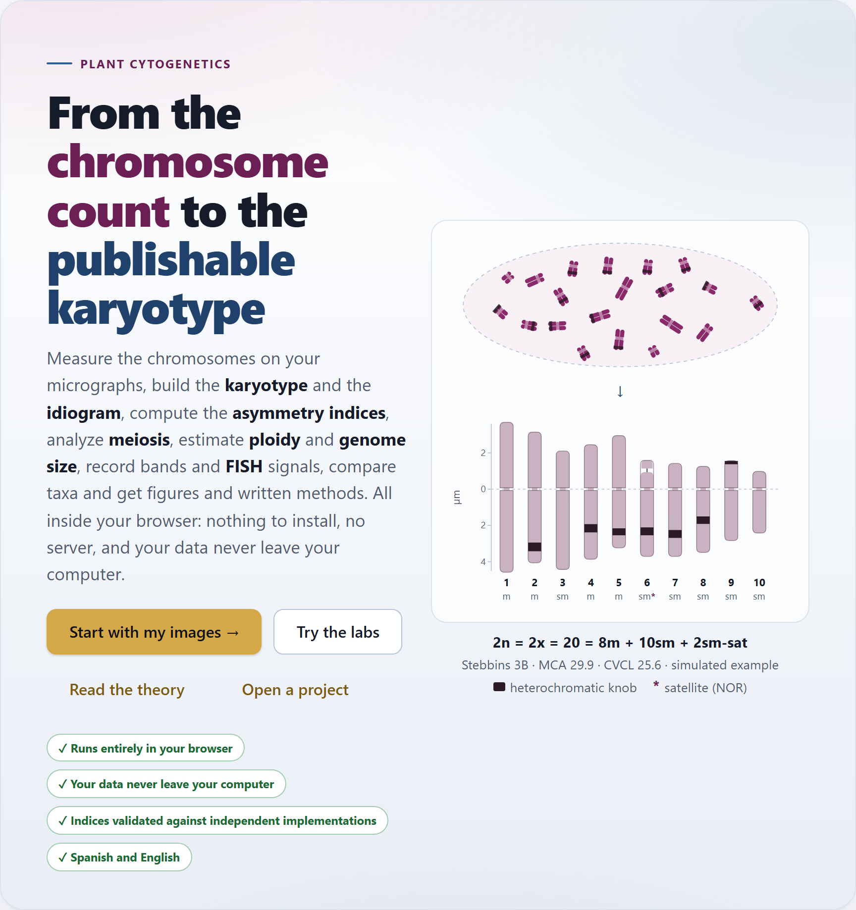
Figure 1.1. The home page. The metaphase at the top is arranged into the idiogram below, to scale in microns, with the class of each pair under its number. Underneath, the formula and three numbers of the karyotype: 2n = 2x = 20 = 8m + 10sm + 2sm-sat, Stebbins category 3B, MCA = 29.9 and CVCL = 25.6.
The figure comes from the base karyotype of the example maize (the same one that generated the simulated measurements of the Zea mays example) and is drawn with the same engines as Block 3 and Block 4. Read it like this: the ten pairs go from longest to shortest; the dashed line is the centromere, with the short arm (p) above and the long arm (q) below; the black bands are heterochromatic knobs—seven, one on each pair from 2 to 9 except pair 3—and the asterisk on pair 6 marks its satellite, the nucleolus organizer region (NOR). It is a simulated example, and the figure itself says so.
Button
What it does
Start with my images →
Opens Block 2, where the micrographs are opened or the measurements are typed in.
Try the labs
Scrolls down, on this same page, to the section of the two labs (Section 1.3).
Read the theory
Scrolls down to The theory, in plain words (Section 1.6).
Open a project
Asks for a .json file saved earlier by the app, opens it with its images and takes you to Block 2. It is the same as Ctrl + O from any block.
Below the buttons, four badges sum up its commitments: Runs entirely in your browser, Your data never leave your computer, Indices validated against independent implementations (Section I.9) and Spanish and English.
1.2How it works: the route of a study
Below the home banner, How it works lays out in a strip the seven steps of a cytogenetic study, in the order in which they are done (Figure I.6 of the introduction). Each step has a name and a line that says what is done in it:
Step
Name
In the app
Block
1
Prepare
roots, anthers, staining: this happens at the bench; the practical sheet of Block 9 explains it
9
2
Count
the number 2n, with marks on the image or in the table of counts
26
3
Measure
each arm, to scale, on the calibrated micrograph
2
4
Arrange
homologs and idiogram
3
5
Describe
asymmetry and formula; also meiosis, ploidy and the signals
457
6
Compare
cytotypes and taxa
8
7
Publish
figures, methods, package
10
The strip is a guide, not a checklist: you can enter any block from the bar on the left, and the ones that do not apply to your study are skipped.
1.3Two labs that really compute
The section Try it: two labs that really compute has two tabs. Neither is a recorded animation: every change recomputes, with the karyotype, asymmetry and meiosis engines, what the app will later compute with your data. They help you understand what moves each index before you have results of your own, and they work well in class.
Draw an idiogram
A four-pair idiogram that you change with the mouse: drag the circles at the ends to lengthen or shorten each arm. You can also type the length in the table below, in microns (p, the short arm; q, the long one), or use the keyboard: with a circle selected, the arrow keys move it 0.05 µm, and with Shift, 0.5 µm. For each pair the table gives its centromeric index (CI), its arm ratio (r) and its class according to Levan et al. (1964), with the full name.
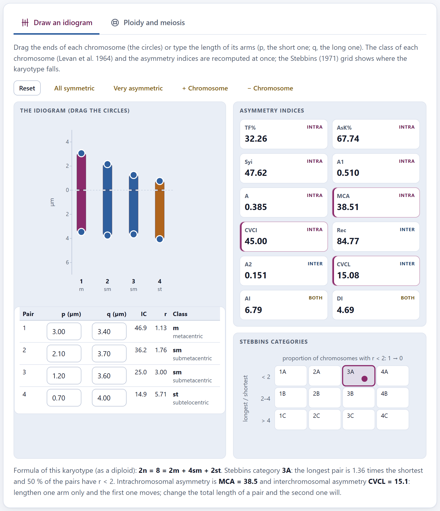
Figure 1.2.Draw an idiogram with its four starting pairs. The recommended indices (MCA, CVCI and CVCL) are framed; the tag of each one says whether it measures intrachromosomal asymmetry (intra), interchromosomal asymmetry (inter) or both (both). The karyotype falls in cell 3A of the Stebbins grid.
The five buttons at the top change the starting point:
Button
What it does
Reset
Returns to the four starting pairs: p = 3.00, 2.10, 1.20 and 0.70 µm with q = 3.40, 3.70, 3.60 and 4.00 µm.
All symmetric
Makes every pair equal and nearly metacentric (2.90 and 3.10 µm).
Very asymmetric
Sets pairs of very different sizes with the centromere near one end.
+ Chromosome · − Chromosome
Adds a pair (of 1.50 and 2.50 µm) or removes the last one. The lab takes three to six pairs, and warns you if you ask for more or fewer.
On the right, twelve tiles give the asymmetry indices computed by Block 4—TF%, AsK%, Syi, A1, A, MCA, CVCI, Rec, A2, CVCL, AI and DI—and, below them, the grid of the Stebbins (1971) categories: the columns go from 1 to 4 as the proportion of chromosomes with r < 2 falls, and the rows from A to C as the ratio between the longest and the shortest pair grows (< 2, 2–4, > 4). Hover over an index tile to see its formula and its reference. The line at the foot puts it all into words: the formula, the category with its two ratios and the two recommended indices.
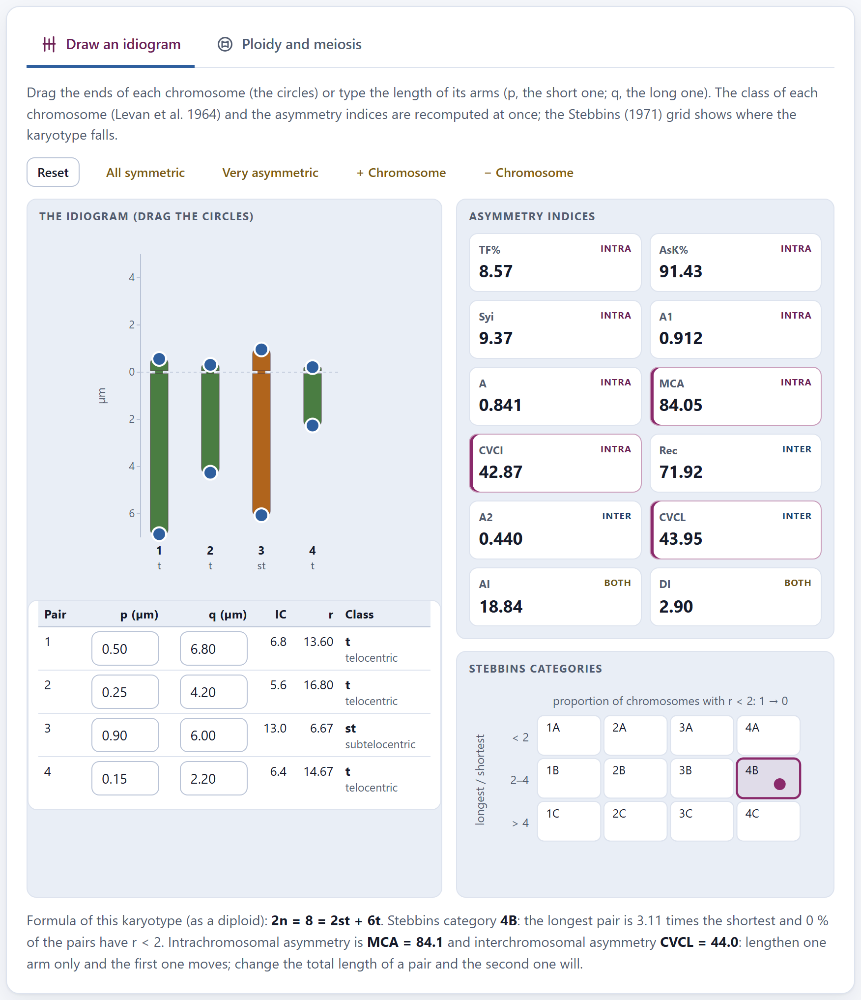
Figure 1.3. The same lab with Very asymmetric: three telocentric pairs and one subtelocentric (pair 3, with r = 6.67). The order of the pairs does not change when they are moved, so the longest one can end up anywhere; the category becomes 4B and MCA rises to 84.05.
The three starting points of the lab, as the app gives them
Button
Formula (as a diploid)
Stebbins
Longest / shortest
r < 2
MCA
CVCL
Reset
2n = 8 = 2m + 4sm + 2st
3A
1.36
50%
38.5
15.1
All symmetric
2n = 8 = 8m
1A
1.00
100%
3.3
0.0
Very asymmetric
2n = 8 = 2st + 6t
4B
3.11
0%
84.1
44.0
▸Example · two asymmetries that do not get mixed up
Press All symmetric: MCA = 3.3 and CVCL = 0.0, category 1A. Now drag down only the end of the long arm of pair 1: MCA rises (the centromere of that pair moves away from the middle) and CVCL rises too (that pair is now longer than the others). Go back and instead change both arms of pair 1 in the same proportion: CVCL rises, but MCA does not change, because the relative position of the centromere of that pair is the same. That is why asymmetry is best described with two numbers rather than one (Peruzzi and Eroğlu, 2013); Chapter 4 explains it in depth.
Ploidy and meiosis
The second tab shows which meiotic configurations are expected in a polyploid according to its origin. In an autopolyploid the homologs pair at random and may form multivalents; in an allopolyploid each chromosome pairs only with the one of its own genome, and bivalents are expected.
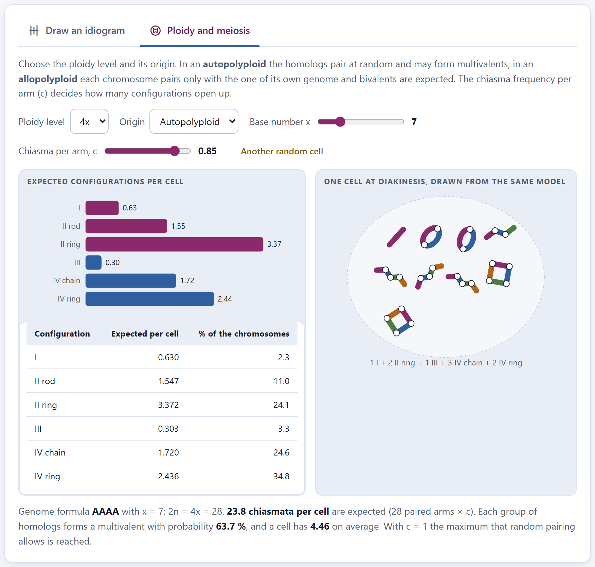
Figure 1.4.Ploidy and meiosis with its starting values: an autotetraploid (AAAA) with x = 7 and c = 0.85. On the left, the configurations expected per cell, as bars and as a table (multivalents in blue); on the right, one cell at diakinesis drawn from the same model: 1 I + 2 II ring + 1 III + 3 IV chain + 2 IV ring, which add up to the 28 chromosomes.
The controls of the tab are:
Ploidy level: 2x, 3x, 4x, 5x, 6x or 8x.
Origin: Autopolyploid, Allopolyploid or Own formula; the last one opens the field Genome formula, where each letter is a genome (AAAABB, for instance, a segmental allopolyploid), up to eight genomes.
Base number x, from 3 to 20, and Chiasma per arm, c, from 0 to 1: the probability that a paired arm forms at least one chiasma.
Another random cell, which draws another cell from the same model.
With the starting values the app writes at the foot: 2n = 4x = 28; 23.8 chiasmata per cell are expected (28 paired arms × c), and each group of four homologs forms a multivalent with probability 63.7%, so a cell has 4.46 multivalents on average. Change the origin to Allopolyploid and the formula becomes AABB: the expected chiasmata are the same, but the multivalents vanish—only 0.630 univalents, 3.570 rod bivalents and 10.115 ring bivalents per cell remain. Raise c to 1 and you will see the maximum number of multivalents that random pairing allows.
θTheory in brief
The model follows Jackson and Casey (1982): the homologs of each group pair at random by arms, and each paired arm forms a chiasma with probability c. A bivalent with chiasmata in both arms is a ring; with only one, a rod; a chromosome without a chiasma remains as a univalent. It is the same model with which Block 5 compares your observed configurations with what is expected for each origin.
1.4The ten blocks and the examples
The ten blocks presents each block on a card with its number, a drawing made by the app, the verb of the step it covers (Measure, Arrange, Describe…), its name and what it does. A click on the card opens the block; it is the same as choosing it in the bar on the left.
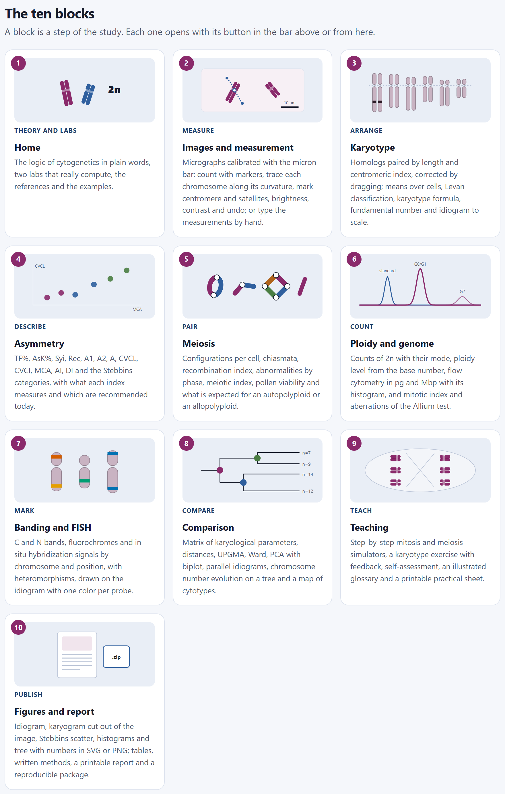
Figure 1.5.The ten blocks. The verb on each card is its step in the study: Theory and labs, Measure, Arrange, Describe, Pair, Count, Mark, Compare, Teach and Publish.
Further down, Included examples offers the four simulated data sets described in Section I.7 (Figure I.5). Each card says in which blocks its example is used, and the button Open the example loads it and takes you to the block where it starts: the maize to Block 2, the chayote to Block 3, the polyploid series to Block 5 and the Allium test to Block 6.
!Opening an example replaces the project
An example is not added to your data: it replaces them. If there are already data in the app, it asks you before going on. Save your project with Ctrl + S if you want to come back to it.
1.5The methods and where they come from
The section The methods and where they come from sets out on cards the 36 methods the app computes, each with its family, its name and the work that defines it. The buttons at the top filter by family; All (36) shows them all again.
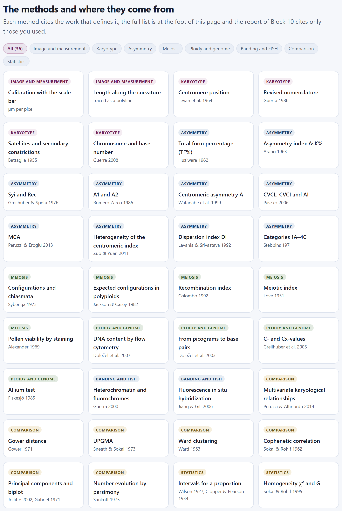
Figure 1.6. The 36 methods with their source. The color of the tag says the family.
Family
Cards
Methods and source
Image and measurement
2
Calibration with the scale bar (µm per pixel); length along the curvature (traced as a polyline)
Karyotype
4
Centromere position (Levan et al., 1964); revised nomenclature (Guerra, 1986); satellites (Battaglia, 1955); chromosome and base number (Guerra, 2008)
Asymmetry
10
TF% (Huziwara, 1962); AsK% (Arano, 1963); Syi and Rec (Greilhuber and Speta, 1976); A1 and A2 (Romero Zarco, 1986); A (Watanabe et al., 1999); CVCL, CVCI and AI (Paszko, 2006); MCA (Peruzzi and Eroğlu, 2013); heterogeneity of the centromeric index (Zuo and Yuan, 2011); DI (Lavania and Srivastava, 1992); categories 1A–4C (Stebbins, 1971)
Meiosis
5
Configurations and chiasmata (Sybenga, 1975); expected configurations in polyploids (Jackson and Casey, 1982); recombination index (Colombo, 1992); meiotic index (Love, 1951); pollen viability (Alexander, 1969)
Ploidy and genome
4
DNA content by flow cytometry (Doležel et al., 2007); from picograms to base pairs (Doležel et al., 2003); C- and Cx-values (Greilhuber et al., 2005); Allium test (Fiskesjö, 1985)
Banding and FISH
2
Heterochromatin and fluorochromes (Guerra, 2000); fluorescence in situ hybridization (Jiang and Gill, 2006)
Comparison
7
Multivariate karyological relationships (Peruzzi and Altınordu, 2014); Gower distance (Gower, 1971); UPGMA (Sneath and Sokal, 1973); Ward (Ward, 1963); cophenetic correlation (Sokal and Rohlf, 1962); principal components and biplot (Jolliffe, 2002; Gabriel, 1971); number evolution by parsimony (Sankoff, 1975)
Statistics
2
Intervals for a proportion (Wilson, 1927; Clopper and Pearson, 1934); homogeneity χ² and G (Sokal and Rohlf, 1995)
This list is the complete catalog. The report and the written methods of Block 10, by contrast, cite only the methods your project used.
1.6The theory, in plain words
The theory, in plain words gathers in ten expandable topics the ideas that hold up the rest of the app. Each topic says on the right in which block it is used, and five of them carry a drawing made by the app. The first one appears open; a click on the title opens or closes any of them.
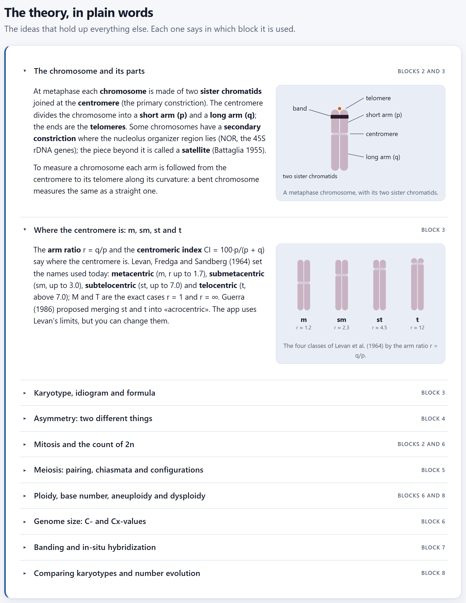
Figure 1.7. The theory with the first two topics open: the parts of a metaphase chromosome and the four classes of Levan et al. (1964) by arm ratio.
#
Topic
Block
The idea, in one line
1
The chromosome and its parts
23
Chromatids, centromere, arms p and q, telomeres, secondary constriction and satellite; an arm is measured along its curvature.
2
Where the centromere is: m, sm, st and t
3
r = q/p and CI = 100·p/(p + q) give the class; the Levan limits are 1.7, 3.0 and 7.0.
3
Karyotype, idiogram and formula
3
Means of several cells, relative length, karyotype formula and fundamental number.
4
Asymmetry: two different things
4
Intrachromosomal (centromeres) and interchromosomal (lengths); MCA, CVCL and CVCI.
5
Mitosis and the count of 2n
26
Pretreatment, fixation, hydrolysis, staining and squashing; the mode of several cells; mitotic index.
6
Meiosis: pairing, chiasmata and configurations
5
Ring and rod bivalents, univalents, multivalents; recombination index and meiotic index.
7
Ploidy, base number, aneuploidy and dysploidy
68
x, ploidy level and euploid series; gaining single chromosomes is not the same as changing x.
8
Genome size: C- and Cx-values
6
2C, 1C and 1Cx; the internal standard of flow cytometry; 1 pg = 978 Mbp.
9
Banding and in-situ hybridization
7
C-bands, CMA⁺ and DAPI⁺; 5S and 45S rDNA, telomeres and GISH; each signal by chromosome, arm and position.
10
Comparing karyotypes and number evolution
8
A matrix of parameters, multivariate methods and parsimony on a tree.
✓Decision rule · the Levan classes
If r ≤ 1.7
then metacentric (m); M if r = 1 exactly.
If 1.7 < r ≤ 3.0
then submetacentric (sm).
If 3.0 < r ≤ 7.0
then subtelocentric (st).
If r > 7.0
then telocentric (t); T if there is no short arm (r = ∞).
These are the limits the labs and Block 3 use by default; there they can be changed for those of Guerra (1986) or for your own.
1.7Limits, references and how to cite
What this program does not do
The home page ends with three practical sections. The first, What this program does not do, names four limits, which Section I.10 of the introduction explains in more detail:
Recognizing chromosomes by itself: you trace each chromosome; the app measures exactly what you trace, without automatic segmentation.
Driving the microscope or the cytometer: it reads the images and text files they export, never the instruments.
Likelihood models: chromosome number evolution is reconstructed by parsimony with costs per event.
Maps with third-party layers: the map of cytotypes is drawn on a grid of coordinates, with your own outline if you load one.
References
References lists the 48 works the app cites, in alphabetical order, each with its topic. The buttons at the top filter by topic; the numbering is redone with what remains in view. They are the same works gathered in Appendix F of this manual.
Topic
Works
Topic
Works
Techniques
4
Ploidy and genome
5
Karyotype
5
Banding and FISH
3
Asymmetry
11
Comparison
10
Meiosis
5
Statistics
5
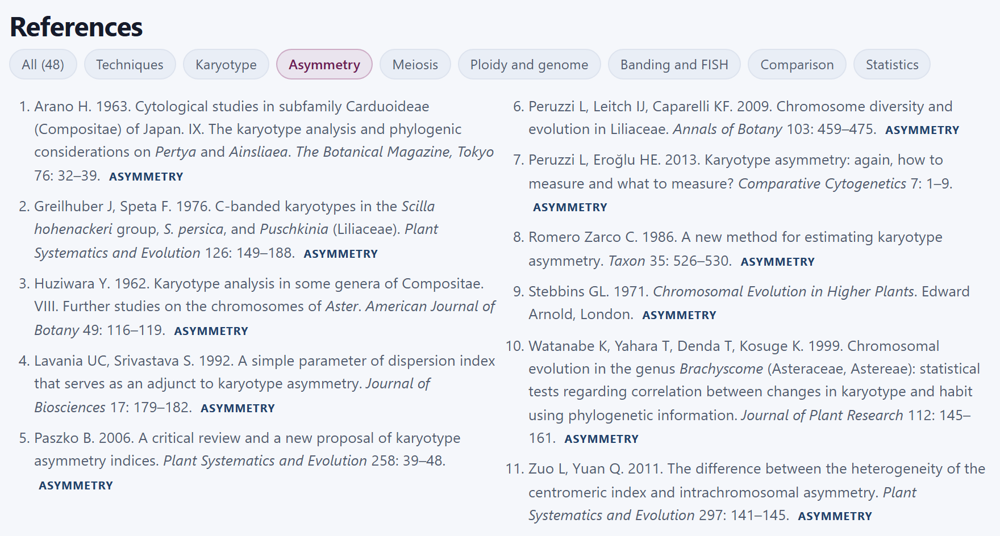
Figure 1.8.References with the filter Asymmetry: the eleven works on the asymmetry indices, numbered anew.
How to cite
If the app helped you with a published work, How to cite gives the citation ready to copy with Copy the citation and, when you expand BibTeX, the same citation as a record for a reference manager, with Copy BibTeX. The version comes from the program itself, so it always matches the one you used. The citation carries the concept DOI on Zenodo, 10.5281/zenodo.23873606, which always leads to the latest version.
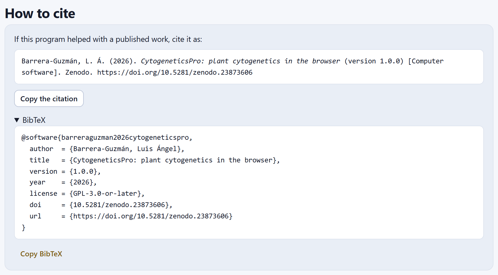
Figure 1.9.How to cite, with the BibTeX record expanded.
iCite the methods too
Citing the program does not replace citing the methods. If you publish MCA and CVCL, cite Peruzzi and Eroğlu (2013) and Paszko (2006); if you publish the Stebbins category, cite Stebbins (1971). The written methods of Block 10 already carry those citations, only for what you used.
✓Decision rule · where to go next
If you have micrographs of metaphases
thenStart with my images → and Chapter 2.
If you already have the arm measurements
then Block 2, Paste measurements (Section 2.6), and then Block 3.
If you have a saved project
thenOpen a project or Ctrl + O.
If you only want to see how it works
then an example from Included examples, or the labs.
If you are going to teach
then the labs on this page and Block 9.
✕When something goes wrong
The lab will not add or remove pairs. It takes three to six; outside that range the app warns you and changes nothing. The own formula does not compute. It takes up to eight genomes (eight letters); with more, the foot says so. Opening a project does nothing. The file must be a .json saved by the app; if it is not, a notice appears with the reason.
2
Chapter two · Block 2
Images and measurement
This is where the work with data begins: “calibrate, count, trace every chromosome and measure its arms.” The block opens the micrographs of your metaphases, converts them to microns with their scale bar, counts the chromosomes with marks and measures each arm along a trace that follows the curvature of the chromosome. If you already have the measurements, they are typed in by hand or pasted from a spreadsheet. Everything measured here is used by the karyotype and the blocks that follow.
2.1Open images, measurements or a project
2.2Accessions and cells
2.3Calibrate and count
2.4Trace, centromere and satellite
2.5Edit, erase, undo and the annotated image
2.6Measurements of the cell and pasted measurements
2.7Summary of the measurements
The figures in this chapter use the maize example (Block 1›Included examples, or the tile Example: simulated maize of the block itself): one accession, “Landrace maize · Texcoco,” with five cells of 20 chromosomes. The first carries a metaphase drawn by the app with its twenty traces already made; the other four, measurements typed in by hand. Remember that these are simulated data: it is “the example maize,” not maize.
2.1Open images, measurements or a project
The first card is the way in. It has four tiles, one for each way of getting started, and two buttons to save your work or start afresh.
Figure 2.1.Open images, measurements or a project. The first tile, with a dashed border, also takes files dragged from the file explorer.
Tile or button
What it does
Open images or a project
Click or drop here .png or .jpg micrographs (several at once) or a .json project. Each image opens a new cell in the accession chosen in the next card, named after the file without its extension; if there are no accessions yet, the app creates “Accession 1.” When it is done, it switches by itself to the Calibrate tool and says so: “Start by calibrating with the scale bar.”
Cell without an image
Creates a cell with four empty rows in the table of measurements, to type in the length of the arms by hand (Section 2.6).
Paste measurements
Opens (or closes) a box where you paste columns copied from a spreadsheet or a paper (Section 2.6).
Example: simulated maize
Opens the maize example. It replaces the project, and if there are already data it asks first.
Save the project (.json)
Saves the whole project—accessions, cells, images, traces and the content of the other blocks—in a single file. It is the same as Ctrl + S.
New project
Empties the app. If there are data, it asks first: “Start a new project? Anything not saved will be lost.”
While there are no cells, a box, There are no cells yet, takes the place of the next cards and reminds you of the four ways to get started.
iWhat it opens and what it does not
Only PNG or JPG images and .json projects are opened; with any other file the app warns you. An image over 25 MB is opened, but with a warning: the project stores it inside and becomes heavy. Crop each photograph to the metaphase before opening it. If the files you drop include a .json, only the project is opened.
2.2Accessions and cells
An accession is a sample: a population, a collection, a variety. Its cells are the metaphases you measured from it, and Block 3 averages them to obtain its karyotype. A project can have several accessions, each with its cells.
Figure 2.2.Accessions and cells with the example maize. Cell 1 (with a colored border) is the selected one: it has an image, 20 chromosomes measured and is calibrated (µm); the other four have no image (✎).
Accession chooses the accession you work with; + Accession creates another (named “Accession 2,” “Accession 3”…, ready to be renamed) and Delete the accession removes it with all its cells, after asking.
The six fields describe the accession: Name, Taxon, Locality, Latitude and Longitude (in decimal degrees, with sign: the example maize is at 19.49 and −98.88) and Base number x. The coordinates serve the map of cytotypes in Block 8; the base number, to write the formula (2n = 2x = 20) and to estimate the ploidy (Blocks 3 and 6).
Cells of this accession shows one tile per cell, with the thumbnail of its image (or ✎ if it has none) and a status line: how many chromosomes are measured, how many traces are incomplete (without a centromere), whether the image is in µm or not calibrated and, if it was counted, “2n” with the number of marks. A click selects the cell; the last tile, Cell without image, creates an empty one.
Below, with the cell selected, Name of the cell renames it; Set or change its image assigns a micrograph to it (useful for a cell typed in by hand), and Delete the cell removes it with its measurements, asking first if it had any.
!Every change spreads
Any change in the measurements, the calibration or the cells marks the karyotype of that accession to be computed again: Blocks 3 and 4 redo it the next time you open them. There is no need to tell them anything.
2.3Calibrate and count
When the selected cell has an image, the card Measuring on the image appears: at the top, the toolbar; on the left, the canvas with the micrograph; on the right, a panel with the help for the active tool and the data of the cell.
12345678910
Figure 2.3.Measuring on the image with cell 1 of the example maize: twenty chromosomes traced, each with its number and its centromere (white circle); the orange diamonds are the satellites of chromosomes 11 and 12, and the green line, the calibration.
1The eight tools, each with its key: Pan (V), Calibrate (C), Count (N), Trace (T), Centromere (M), Satellite (S), Edit (E) and Erase (B). The active one is filled with color.
2The view:− and + zoom out and in; Fit (0) puts the whole image back in the canvas.
3↶ Undo and ↷ Redo, also with Ctrl + Z and Ctrl + Y (Section 2.5).
4Annotated image (PNG): the photograph with all the traces, at its original resolution (Section 2.5).
5The canvas. The tool keys work when the canvas has the focus (click on it).
6The help for the active tool, which changes with it.
7Calibration: the length of the scale bar and the resulting scale.
8Image:Brightness and Contrast.
9Count: the marks of the cell and the button that takes them to Block 6.
10Selected chromosome: the measurements of the trace selected with Edit (Section 2.5).
Moving around the image
With Pan you drag the image; the mouse wheel zooms in and out around the pointer, + and − do so around the center, 0 fits the image to the window and the arrow keys scroll it. With any other tool you can also pan by dragging with the right button or with the space bar held down, so there is no need to keep switching tools. Zooming changes no measurement: the traces are stored in pixels of the original image.
Calibrating with the scale bar
A length in pixels says nothing by itself: it depends on the objective, the camera and how the image was saved. That is why each cell is calibrated with the micron bar of its own photograph. With Calibrate, drag a line from one end of the bar to the other and type its length in Length of the scale bar (µm) (10 by default). From then on all the measurements of the cell are in microns, and the panel gives the scale: in cell 1 of the example maize, “Bar: 135 px = 10 µm · 0.0741 µm per pixel.”
Figure 2.4.Calibrate, with the view zoomed in on the 10 µm bar of cell 1. The green calibration line runs from one end of the black bar to the other: 135 px.
▸Worked example · the scale of the maize
The bar measures 10 µm and the line drawn over it, 135 pixels: 10 / 135 = 0.0741 µm per pixel. An arm that measures 50 pixels along its trace then measures 50 × 0.0741 = 3.70 µm. If you change the length of the bar after calibrating, all the measurements of the cell are recomputed with the new scale, and the change can be undone.
As long as a cell with an image is not calibrated, its measurements come out in pixels: the panel says “Not calibrated: measurements come out in pixels. Use the Calibrate tool.”, its tile says not calibrated and the summary warns about it (Section 2.7). A line shorter than six screen pixels does not count as a calibration, so that an accidental click does not change it.
!One calibration per cell
Calibrate every cell even if they all come from the same microscope: if a photograph was cropped or saved at another size, its scale changes. Uncalibrated cells must not be mixed with calibrated ones: Block 3 would average pixels with microns.
Brightness and contrast
The controls Brightness (from 40 to 200) and Contrast (from 40 to 300), at 100 by default, help to make out the ends and the centromere in a pale or dark preparation. They are saved with each cell, they also apply to the annotated image and they touch neither the measurements nor the original image.
Counting
With Count, a click on each chromosome leaves a yellow mark with its serial number, and the panel keeps the tally: “20 chromosomes counted in this cell.” To remove a mark, use Erase. You can count before or after tracing, and counting does not require tracing: it is the quick way to record the 2n of many cells, even if you are only going to measure some of them.
Figure 2.5.Count on cell 1. The example carries no count marks: for this figure one was placed next to each trace, as someone counting with clicks would do. The marks are drawn on top of the traces, so their number can always be read. With at least one mark, Take the count to ploidy (Block 6) becomes active.
Take the count to ploidy (Block 6) writes the count into the table of counts of Block 6, with the accession and the name of the cell; if that cell already had a row, it replaces it. The app confirms it, for example: “Count sent to Block 6: 2n = 20 in “Cell 1 (image)”.” There the mode of each accession and its ploidy level are computed (Chapter 6).
2.4Trace, centromere and satellite
A chromosome is measured in three steps: its axis is traced from one end to the other, its centromere is marked and, if it has one, its secondary constriction. All three are done on the image, and the app measures along the trace.
Trace
With Trace, click along the chromosome, from one telomere to the other, following its curvature; each click adds a point. You can also hold the button down and trace freehand: the app takes a point every six screen pixels. To finish, double-click or press Enter; Backspace removes the last point and Esc cancels the trace. While you trace, the line is pink and follows the pointer.
Figure 2.6. A trace half done. For this figure the trace of chromosome 1 of cell 1 was erased and started again: the small squares are the clicks, and the last stretch follows the pointer. It is worth zooming in so that the points fall on the axis of the chromosome, between its two chromatids.
When you finish, the chromosome receives the first free number of the cell (1, 2, 3…) and the app switches by itself to Centromere, because a trace without a centromere does not yet give arms: its number is shown in orange, its tile counts it as incomplete and the table of measurements says no centromere. A trace shorter than three pixels is discarded.
θTheory in brief · measuring along the curvature
The trace is a polyline: a chain of straight segments. Its length is the sum of the lengths of its segments, and with enough points it approaches that of the curved axis of the chromosome. A straight line between the two ends of a bent chromosome would shorten it; the polyline measures what the chromosome would measure stretched out. The positions of the centromere and the satellite are stored as distances along the polyline, from its first point.
Centromere
With Centromere, click on the trace where the primary constriction is. You do not need to hit the line: the app moves the click to the nearest point of the trace (of the selected chromosome, or of the one closest to the click) and measures both arms along the curvature. The shorter arm is p and the longer, q. A new click changes the position of the centromere. The centromere is drawn as a white circle.
Satellite
Some chromosomes have a secondary constriction, almost always on the short arm, where the nucleolus organizer region lies; the piece beyond it is the satellite (Battaglia, 1955). With Satellite, click on the trace at the secondary constriction: what is left to the end of that arm is the satellite, and it is drawn with an orange diamond. The centromere must be marked first; otherwise the app reminds you: “First mark the centromere of this chromosome.”
Figure 2.7. Chromosome 11 of cell 1, selected with Edit: its trace in pink with its points, the centromere (circle) and the secondary constriction (diamond) on the short arm. Its heterochromatic knob can be seen at the lower left. The panel Chromosome 11 gives its measurements.
▸Worked example · chromosome 11 of the example maize
The panel says p = 1.08 µm, q = 3.74 µm, satellite = 0.46 µm (on p) and total = 5.28 µm. The p arm is given without the satellite, which goes separately. For the class, however, the app adds the satellite to its arm, as Block 3 does by default: the whole short arm measures 1.08 + 0.46 = 1.54 µm, so CI = 100 × 1.54 / 5.28 = 29.2 and r = 3.74 / 1.54 = 2.42, a submetacentric (sm). It is one of the two homologs that form pair 6, the satellite pair, in Block 3.
When you mark a centromere or a satellite, the app announces the measurements to screen readers (“Chromosome 11: p 1.08, q 3.74, satellite 0.46”), so the editor can also be used with them.
2.5Edit, erase, undo and the annotated image
Edit
With Edit, a click on a trace selects it: it is drawn in pink, with its points in view, and its row is highlighted in the table. Once it is selected, you can drag any of its points to correct the trace, and drag the centromere or the satellite along the line. Delete removes the selected trace. A click on an empty spot deselects it and, if you drag, pans the image.
The panel Selected chromosome then turns into Chromosome with its number (Figure 2.7) and gives p, q, the satellite and its arm, the total, CI, r and the class with the scheme chosen in Block 3. If the trace lacks a centromere, it gives only its length and says so. Two buttons act on it: Remove the satellite (only if it has one) and Delete.
Erase
With Erase, a click on a count mark removes it; if there is no mark nearby, it removes the trace under the click. The marks are renumbered automatically. Whatever you erase comes back with ↶ Undo.
Undo and redo
↶ Undo (Ctrl + Z) and ↷ Redo (Ctrl + Y or Ctrl + Shift + Z) step through the latest changes of the cell: traces, centromeres, satellites, moved points, count marks, calibration and deletions, up to 120 steps back. With a trace half done, ↶ Undo discards it. The history belongs to the open cell: choosing another cell starts a new one.
The annotated image
Annotated image (PNG) downloads the micrograph at its original resolution, with the brightness and contrast you chose and with everything you drew on it: the calibration line, the count marks, the traces with their number, the centromeres and the satellites. The file name is made of the accession and the cell and ends in _annotated.png. It is the figure worth keeping with the raw data, because it shows exactly what was measured.
2.6Measurements of the cell and pasted measurements
The card Measurements of the cell gives one row per chromosome of the selected cell, with or without an image.
Figure 2.8.Measurements of the cell for cell 1 of the example maize. The values come from the traces (trace under Source) and are not edited here; the table scrolls to show all twenty.
Column
What it contains
Chromosome
The number or name of the chromosome in the cell.
p · q
The short and the long arm, without the satellite, in µm (or in px if the cell with an image is not calibrated).
Satellite · Arm
The length of the satellite and the arm that carries it (p or q).
Total
p + q + satellite.
CI · r
The centromeric index and the arm ratio, with the satellite added to its arm as in the example of chromosome 11.
Class
m, sm, st or t (and M or T in the exact cases), with the scheme of Block 3; no centromere if the trace is incomplete.
Source
trace if it comes from the image; typed if it was typed or pasted. The × button deletes the row.
Typing by hand
In a cell without an image, or for the chromosomes that were not traced, each value is an editable field: the name, p, q, the satellite and, in a list, its arm. + Chromosome adds an empty row. If you copy a block of cells from a spreadsheet (p, q and satellite, several rows) and paste it onto a p cell, the app fills the rows downward and creates the ones that are missing.
Figure 2.9. The first rows of cell 2 of the example maize, typed in by hand. Chromosome 6 carries a satellite of 0.47 µm on p: its total is 5.50 µm, with CI = 28.2 and r = 2.55 (sm).
At the foot of the table, This cell (CSV) downloads the measurements of the selected cell; All measurements (CSV) and All (TSV), those of the whole project, in measurements.csv or measurements.tsv. The columns are accession, taxon, cell, chromosome, p, q, satellite, satellite arm, unit (µm or px) and source; incomplete traces are not exported.
Paste measurements
If you already have the measurements in a spreadsheet or in the table of a paper, Paste measurements reads them in one go. One row per chromosome, in microns, with tab, semicolon or comma as the separator:
With headers, the app recognizes the columns by their name: accession (or sample, population), taxon (or species), cell (or plate, metaphase), chromosome, p (or short), q (or long), satellite, satellite arm and unit. It is enough for p and q to be there.
Without headers, it decides by the number of columns: p q (all in a new cell), chromosome p q, cell chromosome p q or accession cell chromosome p q [satellite] [arm].
Rows without a valid number for p (zero or more) and for q (greater than zero) are skipped, and the message says which ones. Accessions are looked up by name and those that do not exist are created, with their taxon if the table carries it; a table with a taxon and no accession column makes one accession per taxon. Rows that name no accession go to the selected accession, which is created only if needed.
Figure 2.10.Paste measurements in a new project, with the CSV that the app itself wrote for cell 2 of the example maize (This cell (CSV)). After Read the measurements, the app replies: “20 chromosomes read in 1 cell and 1 new accession.” The accession “Landrace maize · Texcoco” is created with its taxon, Zea mays.
iThe app’s CSV reads back whole
What This cell (CSV) and All measurements (CSV) export can be pasted back as it is, in this project or in another: the app reads the accession, the taxon, the cell, the chromosome, p, q, the satellite and its arm, and the unit. If a cell was exported in pixels (not calibrated), it stays in pixels when it comes back, and the message says so: “One cell comes in pixels (not calibrated).”
2.7Summary of the measurements
The last card sums up everything measured in the project, in four figures and one table per accession, and warns about what is worth checking before moving on to the karyotype.
Figure 2.11.Summary of the measurements of the example maize: 1 accession, 5 cells (1 with image), 100 chromosomes measured and 1 / 1 calibrated cells; the mode is 20 chromosomes per cell.
The four figures are Accessions, Cells (with how many have an image), Chromosomes measured (the complete ones: a trace without a centromere does not count) and Calibrated cells among those with an image, which adds how many cells without an image are in pixels and is flagged as a warning if any still needs calibrating. The table gives, per accession, its taxon, its cells, how many have measurements, how many chromosomes and the mode of chromosomes measured per cell. Two warnings may appear below:
If not every cell of an accession has the same number of measured chromosomes: check that none is missing or duplicated, because Block 3 groups whatever each cell has.
If an accession has uncalibrated cells (with an uncalibrated image, or typed or pasted in pixels): “… has one uncalibrated cell: their measurements are in pixels.”, with the suggestion to calibrate with the scale bar or to type the measurements in microns.
✓Decision rule · before moving on to Block 3
IfCalibrated cells is not “n / n”
then calibrate the missing ones with their scale bar.
If a cell has incomplete traces
then mark their centromere or delete them; they do not enter the karyotype.
If the summary warns that the number varies among cells
then look for the missing chromosome or the one traced twice; if the cell is truly aneuploid, note it and consider leaving it out of the karyotype.
If you only counted, without measuring
then take the counts to Block 6; the karyotype needs measurements.
If everything is in order
then save the project (Ctrl + S) and move on to Block 3.
It is worth measuring several well-spread metaphases per accession; the app accepts any number, and Block 3 shows the deviation among cells.
✕When something goes wrong
The tool keys do nothing. The canvas must have the focus: click on the image or on the tool’s button. “Click on the trace of a chromosome.” The click with Centromere or Satellite landed far from any trace: zoom in and try again. The measurements come out in px. The cell is not calibrated. A chromosome does not appear in the summary. It lacks its centromere. p and q came out the other way around from what you expected. The app calls p the shorter arm (with its satellite), regardless of which end you started tracing from. I calibrated with the wrong length. Correct the number in Length of the scale bar (µm): everything is recomputed. The project is very heavy. The images go inside the .json: crop them to the metaphase before opening them.
3
Chapter three · Block 3
Karyotype
From the measurements of each cell, Block 3 builds the karyotype of the accession: it groups the homologs of each cell, matches the same pair across all the cells, averages the arms, computes the relative length, the centromeric index and the arm ratio, classifies each pair, writes the karyotype formula with its fundamental number and draws the idiogram. What you decide here—the classification, the basic number, the homologs corrected by hand—is used later by Blocks 4, 7, 8 and 10.
3.1Karyotype settings
3.2Pairing of homologs
3.3Karyotype of the accession
3.4Formula, length and fundamental number
3.5Idiogram
3.1Karyotype settings
The block has no Compute button: as soon as at least one cell has been measured, the karyotype is ready, and every change on this card recomputes it together with the table, the formula and the idiogram.
If there are no measurements yet, the block shows the notice There are no measurements yet with two buttons: Go to Block 2, to measure, and Open the chayote example, which loads four accessions of Sechium edule with three cells each. The figures in this chapter use that example and the maize one (Block 1›Included examples); remember that both are simulated.
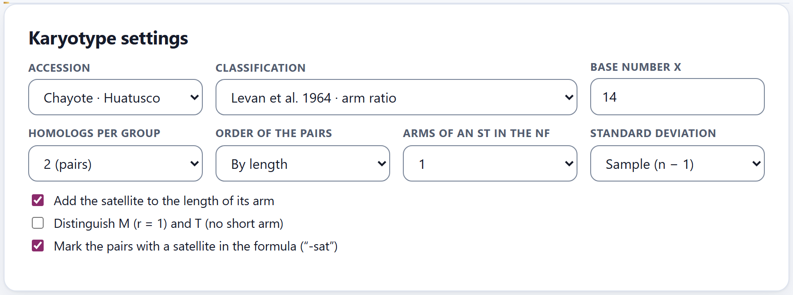
Figure 3.1. The default settings with the Huatusco chayote: classification of Levan et al. (1964) by arm ratio, basic number x = 14 (it comes with the example), pairs of homologs, sample deviation, and the satellite added to its arm and marked in the formula.
The card has seven fields and three checkboxes:
Table 3.1. The controls of Karyotype settings
Control
What it does
Accession
The accession whose karyotype is shown. Only those with at least one measured cell appear. Each accession has its own karyotype; the other settings apply to all of them.
Classification
The system used to name each pair: Levan et al. 1964 · arm ratio (the default), Levan et al. 1964 · centromeric index, Guerra 1986 · m, sm, a or Own limits. The last one shows two more fields: Limits of r (comma separated), which starts at “1.7, 3, 7”, and Names of the classes, “m, sm, st, t”. There must be one more name than limits; otherwise a notice reminds you, and the last valid own limits are used or, if there were none, those of Levan by arm ratio.
Base number x
The basic chromosome number of the accession. It only changes the formula: with x, the formula states the ploidy level (2n = 2x = 28); without x, it omits it (2n = 28). It is stored with the accession and shared with Blocks 5, 6 and 8.
Homologs per group
2 (pairs) for a diploid; 3, 4, 6 or 8 to group the homologs of an autopolyploid in groups of that size.
Order of the pairs
By length (longest to shortest) or By type and length: first the m, then the sm, and so on, and within each class from longest to shortest. It only changes the order of the idiogram; the pairs are still numbered by length.
Arms of an st in the NF
How many arms a subtelocentric counts in the fundamental number: 1 (default) or 2.
Standard deviation
Sample (n − 1) or Population (n), for the deviations among cells in the table. It is the same setting as the Standard deviation of Block 4: changing it in one changes it in the other.
Add the satellite to the length of its arm
On by default: the satellite (what lies beyond the secondary constriction, marked in Block 2) counts in the length of the arm that carries it. Off, the satellite is left out of the lengths and of the arm ratio.
Distinguish M (r = 1) and T (no short arm)
Off by default. On, a chromosome with both arms exactly equal is M (metacentric sensu stricto) and one without a short arm is T (telocentric sensu stricto), as in the original table of Levan et al. With real measurements it almost never happens.
Mark the pairs with a satellite in the formula (“-sat”)
On by default: the pairs with a satellite are counted apart in the formula (2m-sat). Off, they are added to their class.
✓Decision rule · the chromosome classes
Levan, by arm ratior = q/p
m up to 1.70; sm above 1.70 up to 3.00; st above 3.00 up to 7.00; t above 7.00. A value exactly on a limit goes to the more median class: r = 1.70 is m and r = 3.00 is sm.
Levan, by centromeric index CI = 100 p/(p + q)
m from 37.5; sm from 25 to below 37.5; st from 12.5 to below 25; t below 12.5. It is the same criterion expressed with the CI, and it almost always gives the same classes.
Guerra (1986)
m from 1.00 to 1.49; sm from 1.50 to 2.99; a (acrocentric) from 3.00. Here the limit goes to the upper class, as Guerra writes his intervals: r = 1.50 is sm.
A null short arm
t; or T if the M and T checkbox is on.
The class of a pair is decided with the ratio of the means of its arms, not with the mean of the ratios of each cell.
▸Worked example · Levan or Guerra in the example maize
With the Levan classification, the example maize gives 2n = 2x = 20 = 8m + 10sm + 2sm-sat. Pair 5 has r = 1.59: it is m for Levan (up to 1.70) and sm for Guerra (from 1.50). With Guerra 1986 · m, sm, a the formula becomes 6m + 12sm + 2sm-sat. With Levan et al. 1964 · centromeric index nothing changes. Before comparing your formula with a published one, check which system it was written with.
3.2Pairing of homologs
Before averaging, the app decides which chromosomes of each cell are homologs and which is the same pair in every cell. This card shows the result cell by cell so that you can check and correct it.
At the top, the cells of the accession are buttons, with their number of chromosomes (“Cell 2 · 20”). A cell whose pairs you corrected by hand also carries the sign ✎. Below, one box per pair: its number, its class and the mean length of that pair in that cell, and its homologs with the number they have in Block 2. If the chromosome was traced on an image, it is shown cut out and straightened from the image itself; if it was measured some other way, it is drawn to scale, with its two arms and a dot where the satellite is. A pair missing from an incomplete cell says not in this cell.
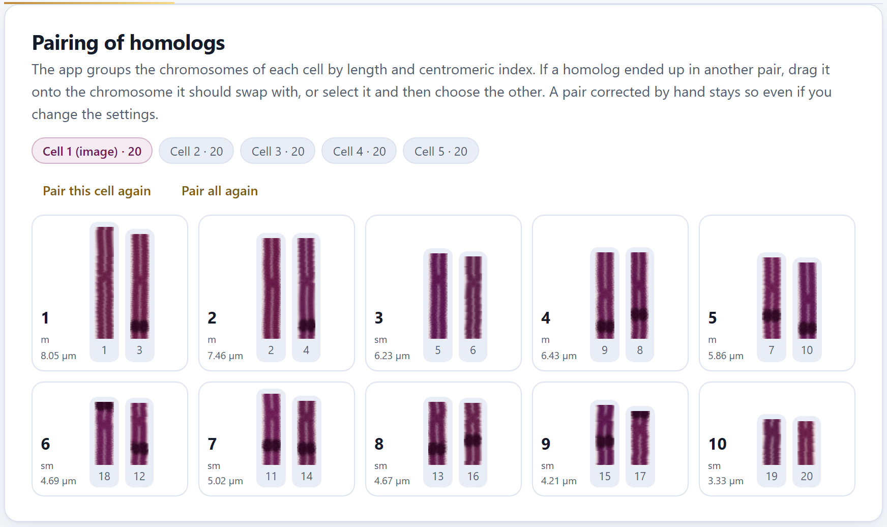
Figure 3.2. Cell 1 of the example maize, the one with an image: each homolog is a straightened cutout of the metaphase, with its heterochromatic knobs. Pair 1 of this cell measures 8.05 µm on average. The order follows the numbering of the accession, not that of this cell: here pair 4 (6.43 µm) is longer than pair 3 (6.23 µm).
How the app pairs
Within each cell, it sorts the chromosomes from longest to shortest and cuts them into consecutive groups of the size set in Homologs per group. Then it tries swaps between groups as long as the total difference within groups goes down, measured with the length (as a percentage of the mean length of the cell), the centromeric index (in points) and a penalty when a chromosome with a satellite ends up with one without. It is a local optimum: it is almost always right, but it is not a proof.
Then it matches the cells to each other. Numbering the pairs of each cell by their length alone would mix two pairs of nearly the same length but with the centromere in different places, because a slightly more condensed cell swaps their order. That is why each cell is assigned to the pairs of a reference (the cell with most pairs) by the optimal assignment, the Hungarian method, on the relative length, the centromeric index (five CI points weigh as much as one point of relative length) and the satellite; the reference is replaced by the means and the process is repeated. In the end the pairs are numbered by their mean relative length. That explains Figure 3.2: pair 3 of the accession is submetacentric, and in cell 1 it turned out shorter than pair 4, a metacentric.
How to correct a pairing
Choose the cell with the buttons at the top.
Drag the misplaced homolog onto the chromosome it should swap with. Or, without dragging, click one (it stays marked, Figure 3.3) and then the other. A second click on the same chromosome unmarks it.
If you drop it on the box of a pair and not on a chromosome, the chromosome moves to that pair without a swap, and its original pair is left with one fewer.
Check the table of Section 3.3: the length and the centromeric index of the pair should become more even among cells.
A pair corrected by hand stays that way even if you change the settings, and the cell is marked with ✎. To undo the corrections there are Pair this cell again and Pair all again, which return the automatic pairing to the chosen cell or to all the cells of the accession.
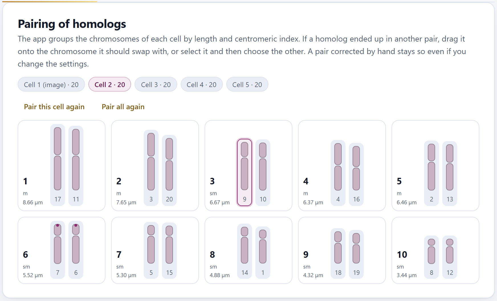
Figure 3.3. Cell 2 of the example maize was measured without an image, so its chromosomes are drawn to scale. Chromosome 9 of pair 3 is marked: the next click on another chromosome swaps them. The two homologs of pair 6 carry the satellite dot on their short arm.
The notices on the settings card
Below the checkboxes of Section 3.1, these notices appear when needed (the examples trigger none):
This accession mixes calibrated cells (µm) and uncalibrated ones (pixels). Relative lengths still hold, but absolute ones do not: calibrate all of them in Block 2. If no cell is calibrated, everything is in pixels and the table says so in its headers.
The cells do not have the same number of chromosomes, with the numbers found. The pairs of incomplete cells are averaged with what they have: check the pairing.
An incomplete group, when the number of chromosomes is not a multiple of Homologs per group.
The pairs that vary by more than 20% among cells. It may be different condensation—then look at the relative length, which does not depend on it—or a mispaired homolog.
3.3Karyotype of the accession
This card gathers the result: six figures at the top (Section 3.4 explains them) and the table of pairs, with the mean ± the standard deviation among cells of each measurement.
Table 3.2. The columns of the table of pairs
Column
What it is
Pair
The number of the pair, from longest to shortest (mean relative length).
Cells
In how many cells that pair is present.
p, q
The short and the long arm, in µm (or in pixels if there is no calibration). If a chromosome was measured the other way round, the app swaps the arms: always p ≤ q.
Length
p + q, with the satellite if it is added.
RL (%)
Relative length: 100 × length of the pair / length of one set (the sum of one chromosome of each pair), computed in each cell and then averaged. Since it does not depend on how much the cell condensed, it is the measure to compare among cells and among accessions.
CI
Centromeric index, 100 p/(p + q): 50 in a perfect metacentric, 0 in a telocentric.
r
Arm ratio q/p of the means of the pair (∞ if p = 0). It decides the class with Levan by arm ratio and with Guerra.
Class
m, sm, st, t (or a with Guerra, or your own names), with “-sat” if the pair carries a satellite in at least half of the cells.
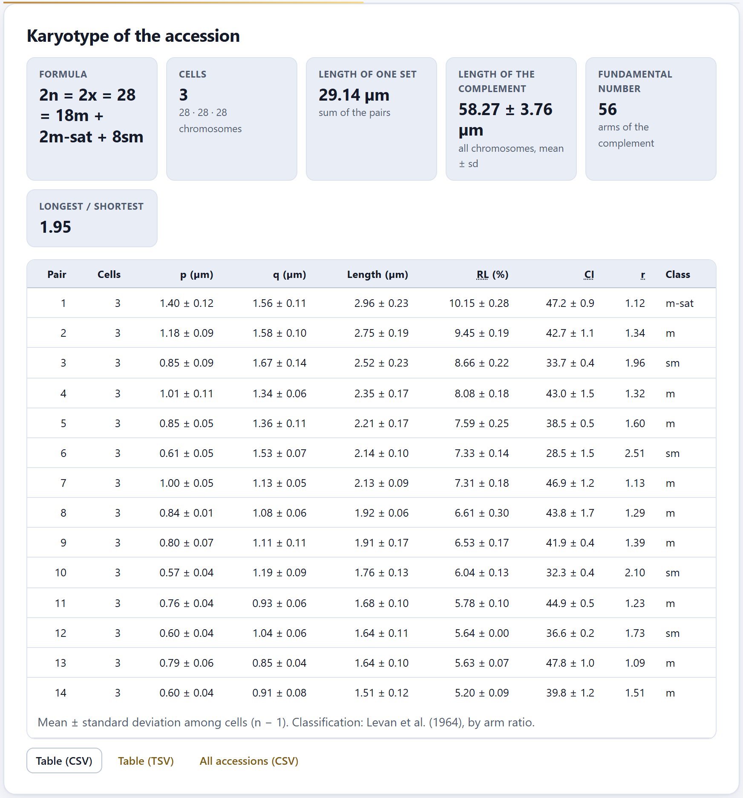
Figure 3.4. The karyotype of the Huatusco chayote: three cells of 28 chromosomes, 2n = 2x = 28 = 18m + 2m-sat + 8sm. Pair 1 carries the satellite (m-sat); pair 12, with r = 1.73, is already past the 1.70 limit and is sm.
The footer of the table recalls which deviation was used, (n − 1) or (n), and the classification. Three buttons save the table: Table (CSV) and Table (TSV) that of the chosen accession, and All accessions (CSV) those of all of them in a single file (karyotype_<accession>.csv or .tsv, and karyotypes.csv). The files carry each mean and its deviation in separate columns, with more decimals than the screen, the class, the satellite and the unit.
iA deviation of zero
In pair 12 of the Huatusco chayote the relative length is 5.64 ± 0.00: in the three simulated cells that pair takes almost exactly the same fraction of the set, even though its absolute length varies (1.64 ± 0.11 µm). That is what you expect when the cells differ only in condensation.
3.4Formula, length and fundamental number
The six figures above the table summarize the karyotype in one line, which is what is usually published.
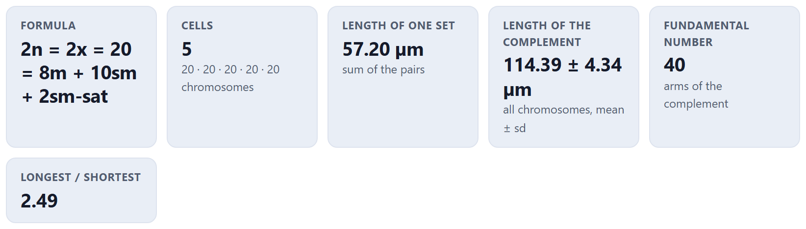
Figure 3.5. The figures of the example maize: 2n = 2x = 20 = 8m + 10sm + 2sm-sat, five cells of 20 chromosomes, a set of 57.20 µm, a complement of 114.39 ± 4.34 µm, NF = 40 and a longest pair 2.49 times the shortest.
Formula. “2n =”, the ploidy level if there is a basic number (“2x =”), the number of chromosomes and the sum of the classes, each with its number of chromosomes (not of pairs), in the order of the classification (M, m, sm, st, t, T), with each class with a satellite right after its own. If 2n is not a multiple of x, the formula writes the nearest euploid level and the difference, for example 2n = 2x + 1 = 21. The 2n of the formula is the median of the cells.
Cells. How many cells enter and how many chromosomes each one has.
Length of one set. The sum of the mean lengths of the pairs: one chromosome of each pair, the haploid set of a diploid. It is the basis of the relative length.
Length of the complement. The sum of all the chromosomes of each cell, as mean ± deviation among cells. In a diploid it is roughly twice the previous one; its deviation mostly reflects how much the cells differ in condensation.
Fundamental number. The arms of the complement: two for each m or sm, one for each st, a or t (two for each st if you choose so).
Longest / shortest. The ratio between the longest and the shortest pair. It is the row of the Stebbins grid (Chapter 4).
▸Worked example · the satellite of pair 6 of the example maize
Pair 6 carries the nucleolar organizer region on its short arm, with its satellite. Added to the arm, as by default, the pair has r = 2.35 and is sm-sat: the formula is 8m + 10sm + 2sm-sat and the NF is 40. If you turn off Add the satellite to the length of its arm, the short arm loses the satellite, the ratio rises above 3 and the pair becomes subtelocentric, shorter than pair 7: the formula is 8m + 10sm + 2st-sat and the NF drops to 38. And if you turn off Mark the pairs with a satellite in the formula (“-sat”), the pair is added to the sm: 8m + 12sm. Two laboratories measuring the same karyotype can publish different formulas just because of this decision; state it in the methods (Block 10 does).
θTheory in brief · the fundamental number and the groups of homologs
The fundamental number (NF) counts the visible arms of the complement. It is used to compare karyotypes with different chromosome numbers: a fusion of two acrocentrics into a metacentric lowers 2n but keeps the NF. Counting a subtelocentric as one or two arms is a convention that changes from author to author; the field Arms of an st in the NF leaves it to you. In an autopolyploid the homologs do not come in twos but in groups the size of the ploidy level: set that number in Homologs per group and the table will give one row per group. With an allopolyploid, whose genomes pair separately, keep the pairs.
3.5Idiogram
The idiogram draws the karyotype of the accession: the pairs in the chosen order, with the centromere aligned on a dashed line, the short arms up and the long arms down, to the scale of a vertical axis.
Below each chromosome go the number of the pair and its class; an asterisk next to the class marks the pair with a satellite, which is drawn joined to its arm by a thin line. The controls at the top change only the drawing:
View: One chromosome per pair (the classic idiogram, with the means) or The homologs, which draws the homologs of each pair side by side: the longest of each cell averaged with the longest of the others, and likewise with the other one. Since that figure is wider, its legend goes below.
Scale: Microns or Relative length (%), as a percentage of the set, to compare accessions of different size.
Color by class: paints each chromosome with the color of its class and adds its name to the legend.
Deviation among cells: a thin bar next to each arm with ± one standard deviation. It only works with One chromosome per pair: with The homologs the checkbox is disabled and says so in parentheses, (only with one chromosome per pair).
Bands and signals (Block 7): on by default, it places on the idiogram the bands and FISH signals recorded in Block 7, with their legend.
Title: the title of the figure. Empty, the field suggests the taxon and the name of the accession, but the drawing has no title.
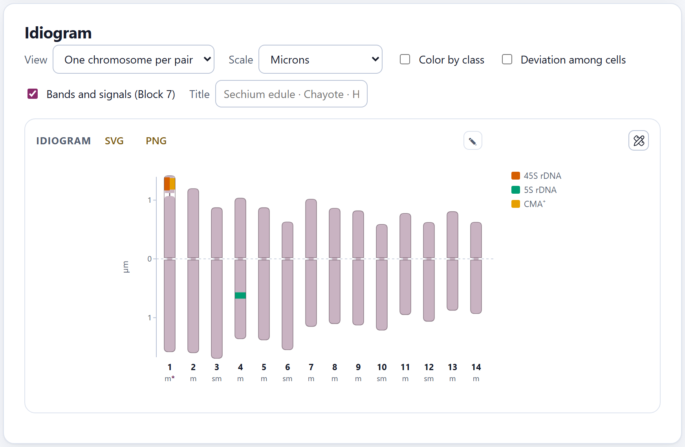
Figure 3.6. The idiogram of the Huatusco chayote with the default settings. The signals come from Block 7: the 45S rDNA and the CMA⁺ band on the satellite of pair 1 (m*), and the 5S rDNA on the long arm of pair 4.
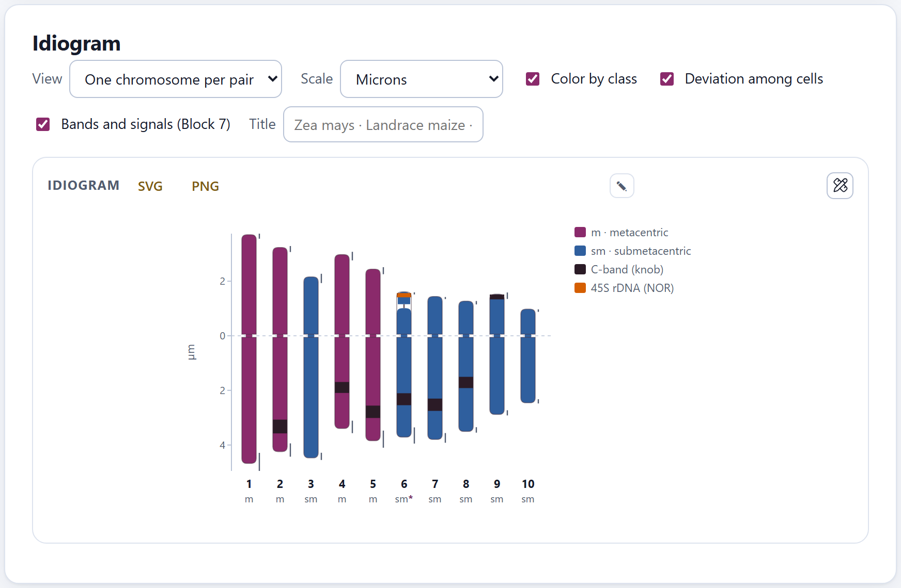
Figure 3.7. The example maize with Color by class and Deviation among cells: the four m pairs in plum and the six sm in blue, each arm with its bar of ± one deviation. The dark bands are the heterochromatic knobs and the orange one, the NOR of pair 6.
The figure is saved with SVG or PNG, or opened with the ✎ editor or in the figure studio to change texts, colors and sizes before exporting it (Chapter 10). Block 10 also includes it in the report.
✓Decision rule · before accepting a karyotype
If a pair varies by more than 20% among cells
then compare its relative length: if that is stable, it is condensation; if not, look for a mispaired homolog on the board.
If the r of a pair falls close to a limit (1.70, 3.00, 7.00)
then its class depends on hundredths: look at its deviation among cells and say so in the text, like pair 12 of the Huatusco chayote (r = 1.73).
If you compare with a published formula
then use the same classification and the same treatment of the satellite, and compare relative lengths, not absolute ones.
If the species is autopolyploid
then group the homologs by the ploidy level; if it is allopolyploid, keep the pairs.
Guides for interpretation, not laws: the karyotype is only as good as the measurements it comes from.
✕When something goes wrong
The block says “There are no measurements yet.” No cell has chromosomes with measured arms; go back to Block 2 and mark at least the centromere of each trace. The lengths come out in pixels. The calibration is missing in Block 2. A pair changes number from one cell to another. It is normal on the board: the pairs are numbered by the accession, not by each cell. The own limits are not applied. Type one more name than limits. The formula does not state the ploidy level. The Base number x is missing. I corrected a pair and it did not move when I changed a setting. That is expected: corrections by hand are kept until you press one of the pair-again buttons.
4
Chapter four · Block 4
Asymmetry and karyological parameters
A symmetric karyotype has chromosomes of similar size with the centromere near the middle; an asymmetric one has chromosomes of unequal sizes or with the centromere near one end. Block 4 measures those two asymmetries with twelve indices on the karyotypes of Block 3, places each accession on the Stebbins grid, compares them in a scatter plot and with Gower’s dissimilarity, and explains what each index measures and which ones are worth reporting.
4.1How they are computed
4.2Indices by accession
4.3Stebbins categories and scatter
4.4Dissimilarity among karyotypes
4.5What each index measures
4.1How they are computed
The block computes the indices of every accession that has a karyotype in Block 3, with no Compute button. If there is none yet, it shows There is no karyotype yet with Go to Block 2 and Open the chayote example.
All the figures in this chapter come from the chayote example: three simulated cultivated accessions with 2n = 28 (Huatusco, Chilchotla and Uruapan) and a wild one with 2n = 24 (Coscomatepec).
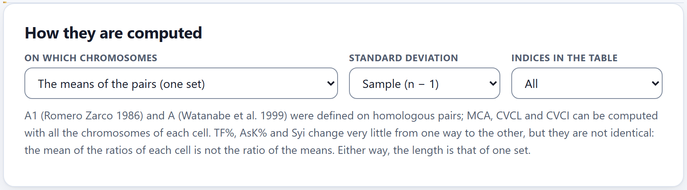
Figure 4.1. The three settings of the block, with their default values.
On which chromosomes: The means of the pairs (one set), the default, computes each index once with one chromosome per pair, the average of its homologs over all the cells; Each cell with all its chromosomes; mean ± sd computes it in each cell with all its chromosomes and gives the mean ± the deviation among cells.
Standard deviation: Sample (n − 1) or Population (n). It changes the indices that are coefficients of variation (A2, CVCL, CVCI and those that depend on them: AI and DI) and the deviations among cells. It is the same setting as in Block 3. The sources of the indices do not say which one to use; the app uses the sample one by default.
Indices in the table: All or The recommended ones (MCA, CVCL, CVCI). It only changes the columns shown; the CSV file always carries all of them.
The note on the card recalls that A1 (Romero Zarco 1986) and A (Watanabe et al. 1999) were defined on homologous pairs, while MCA, CVCL and CVCI can be computed with all the chromosomes of each cell. It adds that TF%, AsK% and Syi change very little from one way to the other, but they are not identical, because the mean of the ratios of each cell is not the ratio of the means (TF% of the Huatusco chayote: 40.67 on the pairs, 40.66 ± 0.18 cell by cell), and that either way the length is that of one set.
!Pairs or cells: do not mix them
The indices of length dispersion do not give the same result both ways: the CVCL of the Huatusco chayote is 21.23 on the means of the pairs and 21.04 ± 0.36 cell by cell, and the population deviation lowers it to 20.46. When you compare with other studies, use the same way and the same deviation as they did, and state it in the methods.
4.2Indices by accession
Four summary figures and a table with one row per accession: its 2n, the length of one set, the twelve indices and its Stebbins category.
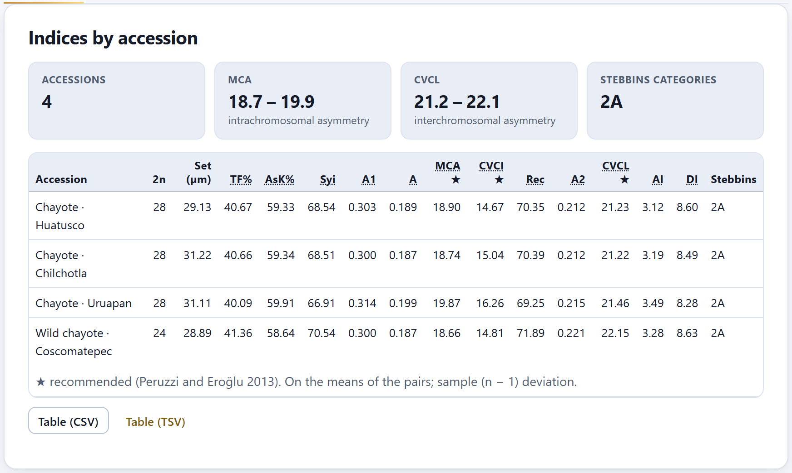
Figure 4.2. The chayote indices on the means of the pairs. The four accessions fall in 2A; MCA ranges from 18.7 (the wild one) to 19.9 (Uruapan) and CVCL from 21.2 to 22.1. The recommended ones carry ★. Long headers break into two lines and the table fits without sideways scrolling.
The figures at the top give the number of accessions, the range of MCA (intrachromosomal asymmetry) and of CVCL (interchromosomal asymmetry) among them, and the Stebbins categories that occur. When you hover over the name of an index in the table, the app shows its formula and its author. Table 4.1 brings them together.
Table 4.1. The twelve indices, with s and l the short and the long arm of each chromosome, c = s + l its length and n the number of chromosomes
Index
Formula
Author · which asymmetry
TF%
100 · Σs / Σ(s + l)
Huziwara 1962 · intra; falls with asymmetry (50 = all metacentric)
AsK%
100 · Σl / Σ(s + l)
Arano 1963 · intra; it is 100 − TF%
Syi
100 · s̄ / l̄
Greilhuber and Speta 1976 · intra; a function of TF%
A1
1 − (1/n) Σ (si / li)
Romero Zarco 1986 · intra; 0 if all are metacentric
A
(1/n) Σ (li − si) / (li + si)
Watanabe et al. 1999 · intra; from 0 to 1
MCA ★
100 · A
Peruzzi and Eroğlu 2013 · intra; the recommended one
CVCI ★
100 · sd(CI) / mean(CI)
Paszko 2006 · heterogeneity of the centromeres
Rec
100 · (1/n) Σ (ci / cmax)
Greilhuber and Speta 1976 · inter; 100 if all are the same length
The four accessions have very symmetric and nearly identical karyotypes: TF% close to 40, MCA between 18.66 and 19.87, CVCL between 21.22 and 22.15. Uruapan has the highest MCA (19.87) and the highest CVCI (16.26): its centromeres are, on average, slightly farther from the middle and more varied, because in the example one or two of its arm ratios changed. The wild one, with two longer pairs from fusion, has the highest CVCL (22.15). Its Rec (71.89) is also the highest, because Rec only compares each chromosome with the longest one, while CVCL looks at the whole dispersion; that is why CVCL is reported.
Cell by cell
With Each cell with all its chromosomes; mean ± sd, each cell of the table carries the mean and, on a second line, ± the deviation among cells. The Stebbins category is then the most frequent among the cells, and a notice says which accessions fall in different categories depending on the cell.
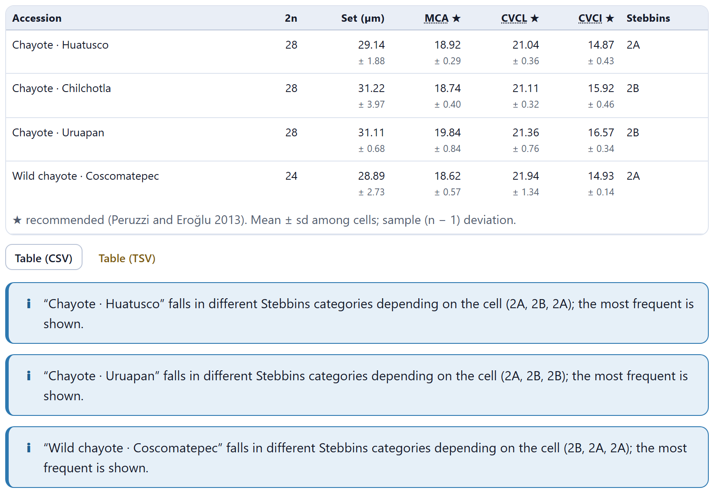
Figure 4.3. The recommended indices cell by cell. Chilchotla and Uruapan move to 2B, and three accessions have cells in 2A and in 2B. The “Set (µm)” column gives the length of one set in each cell, as mean ± deviation: 29.14 ± 1.88 µm in Huatusco.
The categories change because each cell has all its chromosomes, and the longest and the shortest of a particular cell can exceed a twofold ratio even though the means of the pairs do not (1.95 in Huatusco). There is one more possible notice below the table: when all the chromosomes of an accession are telocentric, CVCI is undefined (0/0) and shows “—”.
Table (CSV) and Table (TSV) save one row per accession with its taxon, 2n, the length of one set, the twelve indices with six decimals, their deviations (if computed cell by cell), the Stebbins category and the way they were computed, in asymmetry_indices.csv or asymmetry_indices.tsv.
4.3Stebbins categories and scatter
Two figures put the accessions side by side: the classic Stebbins (1971) grid and the scatter plot of two indices, MCA × CVCL by default.
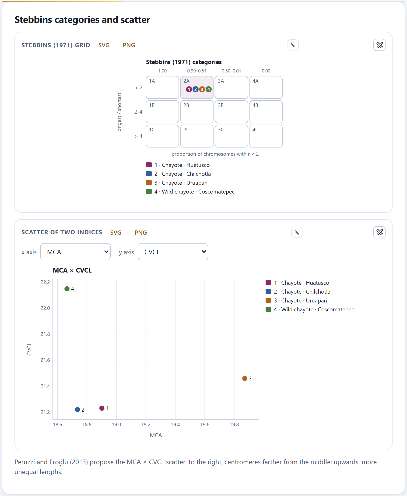
Figure 4.4. At the top, the four accessions in cell 2A. At the bottom, the MCA × CVCL scatter separates what the grid lumps together: the wild one (4) at the upper left, with the most unequal lengths, Uruapan (3) to the right, with the centromeres farthest from the middle.
The grid has twelve cells. The row (A, B, C) is given by the ratio between the longest and the shortest chromosome: less than 2, from 2 to 4, more than 4. The column (1 to 4) is given by the proportion of chromosomes with an arm ratio below 2: all (1.00), from 0.99 to 0.51, from 0.50 to 0.01, none (0.00). Each accession is a numbered circle in the color of the accession, with its name in the legend. The most symmetric karyotypes sit at the upper left (1A) and the most asymmetric at the lower right (4C).
▸Worked example · why Huatusco is 2A
Of its 14 pairs, only pair 6 (r = 2.51) and pair 10 (r = 2.10) have a ratio of 2 or more: 12 of 14, a proportion of 0.86, which falls in column 2. The longest pair measures 1.95 times the shortest, less than 2: row A. Pair 3, with r = 1.96, is very close to the cutoff; if it went past 2, Huatusco would stay in column 2 with 11 of 14.
In the scatter plot, x axis and y axis offer the twelve indices, the length of one set and 2n; the points carry the number of the accession. Peruzzi and Eroğlu (2013) propose MCA × CVCL because its two axes measure different things: to the right, centromeres farther from the middle; upwards, more unequal lengths. Both figures are exported with SVG and PNG, or edited with ✎ and in the figure studio.
✓Decision rule · the Stebbins grid
Row by the longest / shortest ratio
A if it is less than 2; B from 2 to 4, both ends included; C if it exceeds 4.
Column by the proportion with r < 2
1 if it is 1.00; 2 from 0.99 to 0.51; 3 from 0.50 to 0.01; 4 if it is 0.00. A chromosome with r = 2 exactly does not count as “less than 2”.
The grid reduces the karyotype to twelve cells: it is good for a quick look, not for separating similar accessions.
4.4Dissimilarity among karyotypes
Gower’s (1971) dissimilarity summarizes in one number how different two karyotypes are according to the indices you choose: 0 if they are equal, 1 if they are as different as possible within the accessions of the project.
For each pair of accessions, the app takes the difference in each index, divides it by the range of that index over all the accessions and averages. The indices are chosen with the buttons: the twelve and the Length of one set; by default, MCA, CVCI and CVCL. At least one always stays selected. At least two accessions are needed. It is the measure with which Peruzzi and Altınordu (2014) compare karyotypes; Block 8 uses it with more parameters and clusters the taxa with it.
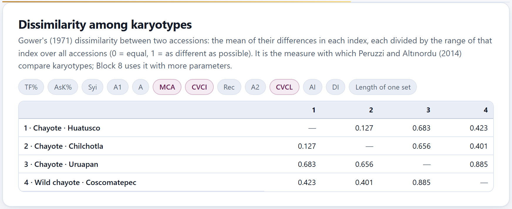
Figure 4.5. With MCA, CVCI and CVCL, Huatusco and Chilchotla are almost equal (0.127) and Uruapan and the wild one are the most different (0.885).
θTheory in brief · Gower with few accessions
Since each difference is divided by the range of that index in the project, the dissimilarity is relative: the two accessions farthest apart in an index contribute 1 in that index even if the difference is small in absolute terms. In the chayote, MCA only goes from 18.66 to 19.87, and yet Uruapan and the wild one add up to 0.885. Use it to rank the accessions of the project, not to say whether two karyotypes are “very” different: adding or removing an accession changes every value.
4.5What each index measures
The last card explains the twelve indices, one per expandable row, with its formula, its author and what it measures.
Each row carries its tag on the right: intrachromosomal, interchromosomal or both, plus ★ if it is one of the recommended ones, redundant if it adds nothing to another (AsK% and Syi, which follow from TF%) or historical if it is discouraged today (AI and DI). The first one, TF%, comes expanded.
θTheory in brief · two asymmetries, three numbers
Intrachromosomal asymmetry tells where the centromere is; interchromosomal asymmetry, how much the lengths vary. Many indices measure the same thing on another scale: AsK% is 100 − TF%, Syi is a function of TF%, CVCL is 100 · A2 and MCA is 100 · A. CVCI does not measure asymmetry but heterogeneity: a karyotype with all chromosomes submetacentric is asymmetric but has a low CVCI (Zuo and Yuan 2011). AI follows CVCI almost alone and DI uses medians; both are kept to compare with older studies (Peruzzi et al. 2009). Today a karyotype is best described with MCA and CVCL, plus CVCI (Peruzzi and Eroğlu 2013).
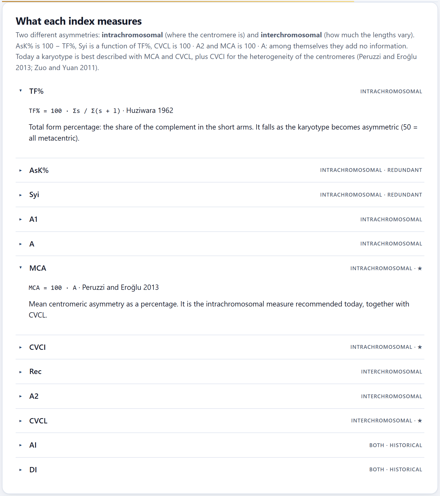
Figure 4.6. The explanation of the indices, with TF% and MCA expanded.
✓Decision rule · what to report
To describe asymmetry
MCA (where the centromere is) and CVCL (how much the lengths vary); add CVCI if the centromeres differ a lot among chromosomes.
To compare with older studies
TF%, AsK%, Syi, A1, A2, AI or DI, whichever the other study used, computed the same way.
To place the karyotype in the literature
The Stebbins category, together with MCA and CVCL.
To compare accessions
The MCA × CVCL scatter and Gower’s dissimilarity; for more parameters and clustering, Block 8.
Always state whether the indices were computed on the means of the pairs or cell by cell, and with which deviation.
✕When something goes wrong
The block says “There is no karyotype yet.” There are no measured cells: go back to Block 2 or open an example. CVCI shows “—”. All the chromosomes of that accession are telocentric and the index is undefined. The dissimilarity says accessions are missing. At least two with a karyotype are needed. I changed the deviation here and the table of Block 3 changed. It is the same setting in both blocks. The indices do not match a published study. Check whether they added the satellite to the arm (Block 3), whether they used pairs or cells and which deviation.
5
Chapter five · Block 5
Meiosis
Meiosis tells how the chromosomes pair and how regular gamete formation is. Block 5 gathers what you count under the microscope—the configurations at diakinesis or metaphase I, the abnormalities of each phase, the tetrads and the stained pollen—and turns it into chiasmata per cell, a recombination index, a test of autopolyploidy against allopolyploidy, Love’s meiotic index and pollen viability with its confidence intervals.
5.1The accession and its tables
5.2Configurations at diakinesis or metaphase I
5.3Autopolyploid or allopolyploid?
5.4Abnormalities by phase
5.5Tetrads and meiotic index
5.6Pollen viability
5.1The accession and its tables
Unlike Blocks 3 and 4, this block does not use the images or the measurements: its data are counts that you type, paste or import into four tables, and each table keeps those of the chosen accession.
Figure 5.1. The Accession card with the tetraploid population of the example polyploid series, with basic number x = 7.
On the Accession card you choose the accession, create another with + Accession or open the example with Open the example polyploid series: an invented species with three populations, diploid, tetraploid and hexaploid, with x = 7, two plants and 25 cells per plant, its phases, tetrads and pollen, all simulated with the app’s model. Base number x is the same number as in Blocks 3 and 6; here it is needed to set out the hypotheses of Section 5.3. This chapter mostly uses the tetraploid population.
How the tables are filled in
The four tables of the block work the same way. Each row is a cell (or a plant, depending on the table) and each field is typed by hand; numbers are rounded to integers. Below each table are + Row, which adds a row (copying the plant of the previous one in the configurations table), Export (CSV), Import CSV and Clear, which deletes all the rows of the accession after you confirm. The × at the end of a row deletes it.
Paste. If you copy a block from a spreadsheet (columns separated by tabs) and paste it into a field, it fills from that field to the right and down, adding the rows that are missing. A notice says how many rows were pasted.
Import. The CSV must have headers. Each header is compared, ignoring accents and case, with the name of the column in English or in Spanish and with some synonyms (“chiasmata”, “individual”…); columns it does not recognize are ignored. It is the same format that Export (CSV) writes, in configurations_<accession>.csv, phases_…, tetrads_… or pollen_…, depending on the table.
5.2Configurations at diakinesis or metaphase I
One row per cell, with how many configurations of each type you saw: univalents, rod and ring bivalents, trivalents, chain and ring quadrivalents, pentavalents and chain and ring hexavalents.
Figure 5.2. The first cells of plant 1 of the tetraploid. The first one has 1 I, 1 rod II, 3 ring II, 1 III and 4 chain IV: 28 chromosomes and 21 estimated chiasmata. At this window width the last three columns (Chiasmata counted, Chromosomes and Chiasmata) lie to the right: the table scrolls sideways.
The columns are Plant, Cell, one per configuration (I, II rod, II ring, III, IV chain, IV ring, V, VI chain, VI ring) and Chiasmata counted. The last two, which cannot be edited, are computed by the app: Chromosomes adds up the chromosomes of all the configurations (a II has two, a IV four) and Chiasmata estimates them: a chain of k chromosomes has k − 1 chiasmata and a ring k; thus rod 1, ring 2, III 2, chain IV 3, ring IV 4. It is the minimum compatible with the configuration. If you counted the chiasmata, type them in Chiasmata counted and they prevail over the estimate.
Figure 5.3. The summary of the tetraploid: 50 cells of 28 chromosomes, 21.78 ± 2.34 chiasmata per cell, 1.55 per bivalent, recombination index 35.78 and multivalents in every cell. The chart gives the mean ± deviation of each configuration by plant.
Below the table, six figures summarize the accession:
Cells and Chromosomes per cell, the most frequent number; if not every cell adds up the same, the figure says not in all and a notice asks you to check the rows.
Chiasmata per cell, mean ± deviation, with the note estimated from the configurations or counted.
Chiasmata per bivalent: the chiasmata of the bivalents divided by the number of bivalents. Close to 2 if nearly all are rings, close to 1 if nearly all are rods.
Recombination index: the haploid number plus the mean chiasmata per cell (n + chiasmata), the number of units that recombine independently.
Cells with multivalents: the percentage of cells with at least one III, IV, V or VI.
The summary table repeats those counts by plant and for the whole accession: the mean configurations per cell (V and VI together in ≥ V), the chiasmata per cell and per bivalent, the recombination index and the percentage of cells with multivalents. The Configurations per cell chart has one series per plant, with error bars of one deviation.
▸Worked example · the example diploid and tetraploid
In the diploid (2n = 14) there are no multivalents: 5.42 ring and 1.52 rod bivalents per cell, 12.36 ± 1.10 chiasmata per cell, 1.78 per bivalent, recombination index 7 + 12.36 = 19.36. In the tetraploid (2n = 28) every cell has multivalents, 2.24 chain IV and 1.58 ring IV per cell, and the chiasmata per bivalent drop to 1.55: there are more rods. Its recombination index is 14 + 21.78 = 35.78.
5.3Autopolyploid or allopolyploid?
An autopolyploid has several sets of the same genome, which may pair in threes or fours; an allopolyploid brings together different genomes that each pair with themselves, in bivalents. The block compares the observed configurations with those expected under each hypothesis.
Each hypothesis is written as a genome formula, one letter per set: AAAA is an autotetraploid, AABB an allotetraploid, AAAABB an intermediate segmental one. With the basic number and the cells already entered, the app proposes on its own Hypothesis 1, the autopolyploid one (AAAA in the tetraploid), and Hypothesis 2, the allopolyploid one made of pairs (AABB); Hypothesis 3 (optional) is left for the one you want to test. You can write up to eight genomes; the formula, multiplied by x, must give the 2n of the cells, or a notice says so. Chiasma per arm, c can be Estimated from the data or Fixed, and then Value of c appears (0.8 by default).
Figure 5.4. The example tetraploid: with c = 0.778, AAAA gives χ² = 4.82 with 4 d.f. and p = 0.307; AABB does not allow the 221 observed multivalents (30 III, 112 chain IV and 79 ring IV) and is rejected. The green notice sums it up: the data fit AAAA.
The table gives, for each configuration, those observed in all the cells and those expected under each hypothesis, and at the foot c, χ², the degrees of freedom and the p value. The Observed and expected per cell chart draws it per cell. Below, a notice states the conclusion:
if a single hypothesis fits (p ≥ 0.05): “The data fit…” and which ones do not;
if more than one fits: more cells are needed to decide;
if none fits: which one is best and the suggestion to try an intermediate formula, with those of that level you have not yet tried (in a hexaploid, AAAABB or AAABBB), because rejecting autopolyploidy may indicate genetic control of pairing or some kind of allopolyploidy (Jackson and Casey 1982);
and, separately, each hypothesis that does not allow some observed configuration—a multivalent where only bivalents fit—is rejected outright, even if its χ² in the other classes is small.
θTheory in brief · the model of the expectation
Each chromosome has two arms. At the end of each arm, the homologs of a group pair two by two at random (with an odd number, one stays unpaired), independently at the two ends, and each paired arm forms a chiasma with probability c. A configuration is a set of chromosomes held together by chiasmata: a chain if it is open, a ring if it is closed. With four homologs, the two ends choose the same partner with probability 1/3, so quadrivalent pairing occurs with probability 2/3 (Sybenga 1975); the frequencies follow the same counting as the models of Jackson and Casey (1982). The app computes them exactly, enumerating all the pairings and all the chiasma patterns, without simulation. When estimated, c is the mean chiasmata divided by the pairable arms: in the tetraploid, 21.78 / (7 × 4) = 0.778.
✓Decision rule · the χ² test
Classes
I, II rod, II ring, III, IV chain, IV ring and ≥ V. Those with fewer than 5 expected are pooled with their smaller neighbor before the test.
Degrees of freedom
The remaining classes minus 1, and minus 1 more if c was estimated from the data.
Ifp ≥ 0.05
then the hypothesis fits the data (which does not mean it is true).
If the hypothesis does not allow an observed configuration
then it is rejected, whatever its χ².
With c fixed at 0.80, AAAA still fits in the tetraploid, but less comfortably (χ² = 9.31, 5 d.f., p = 0.097).
▸Worked example · the example hexaploid fits nothing
In the hexaploid the app proposes AAAAAA and AABBCC, with c = 0.850. Autohexaploidy is far off (χ² = 2777.05, 5 d.f., p < 0.001): it expects 158.1 configurations of five or six chromosomes and none was seen. AABBCC explains the univalents and bivalents well (χ² = 2.39 with 1 d.f.), but it does not allow the 22 observed multivalents (1 III, 3 chain IV and 18 ring IV) and is rejected. If you type AAAABB as a third hypothesis, it does not fit either (χ² = 447.33, 4 d.f.), and the notice then suggests only the one left, AAABBB. The reading is that of an allohexaploid with occasional pairing outside its own genome, which is exactly how it was simulated: 16% of its cells were drawn from the AAAABB model.
Figure 5.5. The hexaploid with three hypotheses. AABBCC is rejected because of its 22 multivalents and none fits; the “best” one, AAAABB, also has p < 0.001.
5.4Abnormalities by phase
One row per plant and phase, with how many normal cells you saw and how many with each abnormality.
The columns are Plant, Phase (from Metaphase I to Telophase II), Normal and seven abnormalities: Bridges, Fragments, Laggards, Precocious migration, Multiple or abnormal spindles, Micronuclei and Other. Count each abnormal cell only once, under its main abnormality: the app adds the abnormal and the normal cells to get the total of the phase.
Figure 5.6. The example tetraploid: between 10.2% and 12.7% abnormal cells in nearly every phase and 21.0% at anaphase II (162 cells, 19 with laggards, 8 with bridges and 7 with fragments). At this window width, the Micronuclei and Other columns of the data-entry table lie to the right.
The summary pools the plants by phase: cells, normal, each abnormality and the % abnormal. The Abnormal cells by phase (%) chart draws it with the phases abbreviated (MI, AI…). For reference, in the example diploid no phase exceeds 3.7%.
5.5Tetrads and meiotic index
Love’s (1951) meiotic index is the percentage of normal tetrads; Love considered a plant cytologically stable at 90 or more.
One row per plant, with Normal tetrads, With micronuclei, Dyads, Triads and Polyads. The results table gives, per plant, the tetrads counted, the normal ones, the Meiotic index (%), its 95 % interval (Wilson) and whether it is Stable (≥ 90); with more than one plant, it adds the row of the accession and, at the foot, the χ² test of homogeneity among plants.
Figure 5.7. The tetraploid: meiotic index of 84.3% and 86.3% in its two plants and 85.3% (82.3 to 87.9) in the accession, below 90; the plants do not differ from each other (χ² = 0.48, 1 d.f., p = 0.489).
iThe interval matters
Decide with the interval, not just with the figure. In the tetraploid, even the upper end (87.9) is below 90: the instability is clear. In the example hexaploid, plant 1 has 93.0% but its interval goes down to 89.5; the diploid, with 96.8% in the accession, is stable beyond doubt.
5.6Pollen viability
One row per plant with the viable (stained) and the inviable grains; the app gives the viability with two confidence intervals and tests whether the plants differ.
At the top, Stain records how the pollen was stained: Alexander's differential stain (default), Acetocarmine, Tetrazolium chloride (TTC) or Other. It does not change the calculations; the methods of Block 10 use it. Confidence chooses 95%, 99% or 90% for the intervals of this card.
Figure 5.8. The pollen of the tetraploid: 1,245 grains in three plants, 76.4% viable (73.9% to 78.7% with 95% confidence), with no differences among plants (p = 0.196). The notice at the bottom compares the three populations: they differ (χ² = 161.84, 2 d.f., p < 0.001).
The plant table has the computed column % viable. Below, three figures: Grains counted with the number of plants, Viability of all the grains pooled with its Wilson interval, and Homogeneity among plants, with the p value and the χ² and G statistics of the plants × viable/inviable table. The results table gives each plant with its grains, viable ones, percentage and the Wilson and Clopper–Pearson intervals, and the chart, each plant with its Wilson interval. If the plants differ (p < 0.05), a notice advises reporting them separately; if there is pollen in more than one accession, another notice compares the accessions with χ².
Two more buttons link to PalynoPro, the palynology app of the suite: Read the PalynoPro fertility CSV reads its fertility file (the columns landrace_code, n_granos_completos and pct_atipico) and turns the percentage of grains of atypical shape into inviable ones; a notice recalls that this percentage comes from the shape of the grain under electron microscopy, not from a stain, and is only an approximation. CSV with PalynoPro columns writes the data of this table in that same format, in the file pollen_<accession>_palynopro.csv.
θTheory in brief · Wilson and Clopper–Pearson
The Wilson (1927) interval is the one recommended for a proportion: its coverage stays close to the nominal one even with high proportions such as those of pollen. The Clopper–Pearson (1934) interval is exact, with coverage of at least the nominal one, and therefore slightly wider: in plant 1 of the tetraploid, 70.5% to 78.7% against 70.4% to 78.9%. With 99% confidence, the viability of the tetraploid goes from 73.2% to 79.3%. Homogeneity is tested with χ² and with G (likelihood ratio); with large counts they give almost the same (3.25 and 3.31).
✓Decision rule · reading the meiosis of an accession
If there are multivalents in many cells
then test autopolyploidy; if no formula fits, try an intermediate one.
If the meiotic index is below 90
then the plant is cytologically unstable according to Love (1951); look at it with its interval.
If the plants differ (homogeneity p < 0.05)
then report each plant separately, not the accession pooled.
If pollen viability drops together with the meiotic index
then meiotic abnormalities are a likely explanation, as in the example tetraploid (85.3% normal tetrads, 76.4% viable pollen).
The example data are simulated: the figures are for learning to read the app, not for describing a species.
✕When something goes wrong
The hypothesis card asks for the basic number. Type it in Base number x. A notice says the formula does not give the 2n of the cells. The formula has one letter per set: with x = 7 and 2n = 28 you need four letters. The chromosomes figure says “not in all”. Some row does not add up to 2n: check the Chromosomes column. I imported a CSV and nothing came in. The file needs headers the app recognizes; export a table to see the format. I changed accession and the hypotheses were cleared. That is expected: they are proposed again with the basic number of the new accession.
6
Chapter six · Block 6
Ploidy and genome size
How many chromosomes the plant has and how many sets they make: cell-by-cell counts with their mode, the ploidy level from the basic number, the euploid series and hints of dysploidy; genome size by flow cytometry, read from the table of runs or from the cytometer histogram; conversion between picograms and base pairs; and the Allium test, which uses mitosis to measure whether a substance is cytotoxic.
6.1Chromosome counts
6.2Basic number, euploid series and dysploidy
6.3Flow cytometry: genome size
6.4Cytometer histogram
6.5Unit conversion
6.6Mitosis and cytotoxicity: the Allium test
The block opens with the Accession card, which decides which accession the counts and the cytometry refer to. It holds the Accession selector, the + Accession button, the Base number x field of the chosen accession and two buttons that open the examples of the block: Example: polyploid series and Example: Allium test. Opening an example replaces the project, and the app asks first. On entering, the block picks the first accession that already has counts or cytometry runs.
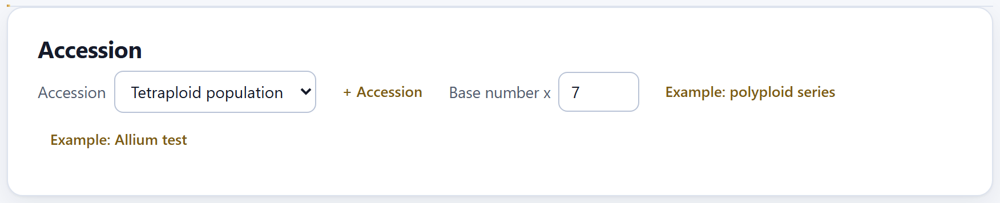
Figure 6.1. The Accession card with the polyploid series example open and the tetraploid population chosen. Its basic number, x = 7, is the one used by the counts and the cytometry of that accession.
This chapter uses the two examples of the block. The polyploid series is an invented species (“Fictitious species A”) with three populations, diploid, tetraploid and hexaploid, with basic number x = 7: it brings fifteen counts per population, nine cytometry runs and the histogram of a tetraploid. The Allium test brings a control and two concentrations of a fictitious extract. Both are simulated.
6.1Chromosome counts
A plant’s chromosome number is not read from a single cell: it is counted in several metaphases and the mode is taken. Cells with another number are almost always imperfect preparations—a chromosome that slipped out of the cell during squashing, two that ended up overlapping—not different plants.
The Chromosome counts card has a table with one row per counted cell and two columns: Cell and 2n counted. Like every data-entry table in the app, it has + Row, Export (CSV), Import CSV and Clear below it; on import, the number column may be called 2n or n2. The table shows only the rows of the chosen accession. If you counted with marks on the image in Block 2, the Take the count to ploidy (Block 6) button there writes that cell’s row here.
Below the table, four figures summarize the counts:
Cells counted, the rows with a positive whole number.
Modal number, the most frequent 2n, with the share of cells that have it. If that share is below 60%, the figure is flagged as doubtful.
Range, from the smallest to the largest number counted.
Ploidy level, the formula 2n = kx = 2n with its name (diploid, tetraploid…), if the accession has a basic number; otherwise it says “x missing”.
The Frequency of the numbers counted chart shows how many cells had each number, from smallest to largest, and downloads as SVG or PNG or opens in the figure studio. The All accessions table gathers, for each accession with counts, its x, the number of cells, the mode, the % modal, the formula and the level.
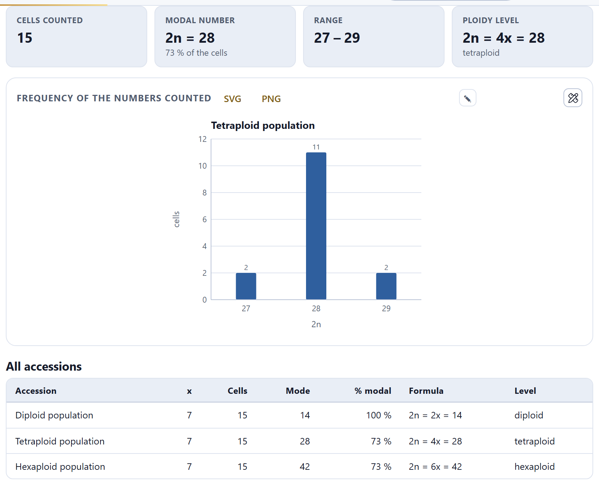
Figure 6.2. The example tetraploid population: of fifteen cells, eleven have 2n = 28 (73%), two have 27 and two have 29. With x = 7, the level is 2n = 4x = 28. Below, the three populations: the diploid gives 2n = 14 in all fifteen cells, and the hexaploid 2n = 42 in eleven (three with 41 and one with 43).
Two warnings go with the counts. If there is more than one mode, the figure shows both (“28 / 30”) and the app asks you to count more cells before deciding. If the mode is not a multiple of x, the formula shows the remainder (for example, 2n = 2x + 1 = 15, with the name “trisomic (2n + 1)” when the level is 2x) and a warning recalls the three possible explanations: aneuploidy, B chromosomes or a different basic number.
θTheory in brief · how the level is computed
The level is the multiple of x closest to the mode: k = round(2n / x), and the remainder is 2n − kx. If the remainder is zero, the plant is euploid (2x, 3x, 4x…); if not, it is aneuploid and the formula says so, 2n = 4x − 1, for example. The special names of aneuploidy (monosomic, trisomic, nullisomic, tetrasomic) are given when the level is 2x and one or two chromosomes are gained or lost.
▸Worked example · the example maize
The maize example brings twelve counts. Eleven give 2n = 20 and one 19, a chromosome lost during squashing: the mode is 2n = 20 in 92% of the cells, the range 19 – 20 and, with x = 10, the level 2n = 2x = 20, diploid. The cell with 19 does not change the conclusion.
6.2Basic number, euploid series and dysploidy
The basic number x is the number of chromosomes in one monoploid set. Without it there is no ploidy level and no 1Cx in the cytometry: that is why every accession has its own.
You can type it in Base number x on the Accession card or take it from the Base number, euploid series and dysploidy card, which brings an editable table with 55 genera in frequent use (Family, Genus and x). They are common values, not the last word: the card itself asks you to check them in the chromosome counts databases for your group (Rice et al. 2015). Search genus or family filters the table, which you can edit, extend with + Row or restore with Back to the original table.
Below, Set in the accession the x of offers all the genera of the table; if the taxon of the accession begins with one of them, it comes already chosen. Set writes that x into the accession and recomputes the counts and the cytometry.
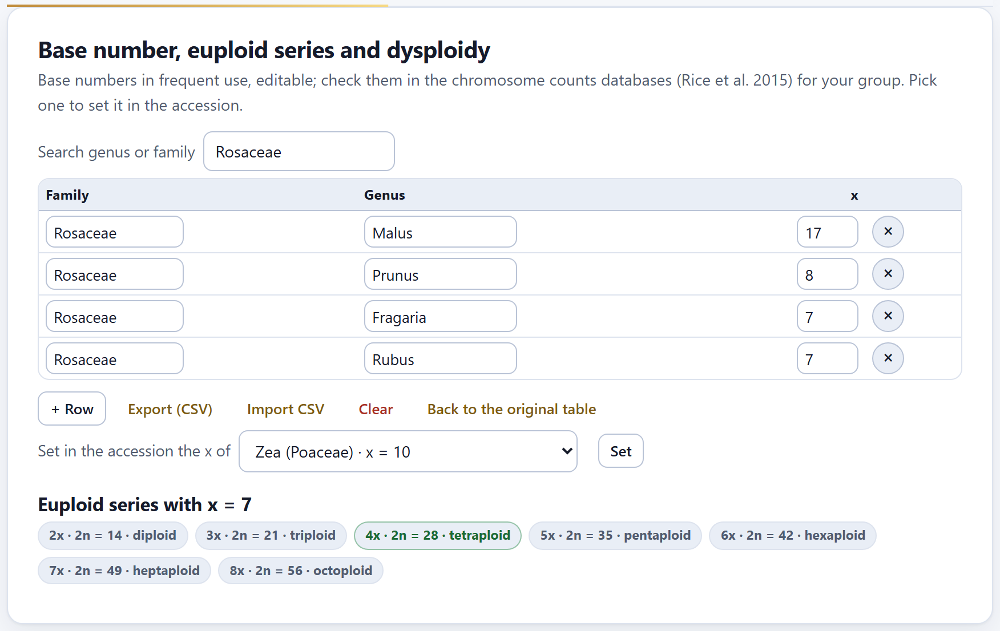
Figure 6.3. The table filtered by “Rosaceae” and the euploid series of the tetraploid population (x = 7), from 2x = 14 to 8x = 56, with its level, 4x = 28, highlighted. The fictitious species is not in the table, so the selector proposes the first genus on the list.
The euploid series lists the levels from 2x to 8x with their 2n and name, and highlights the one of the accession. It shows at a glance which numbers would be expected in other populations of the same taxon.
Dysploidy is the change of the basic number one by one, through chromosome fusion or fission. The app looks for it among the accessions: if two or more accessions of the same genus (the first word of the taxon) have different basic numbers, a warning appears with those values, and if the steps are of one chromosome it says so.
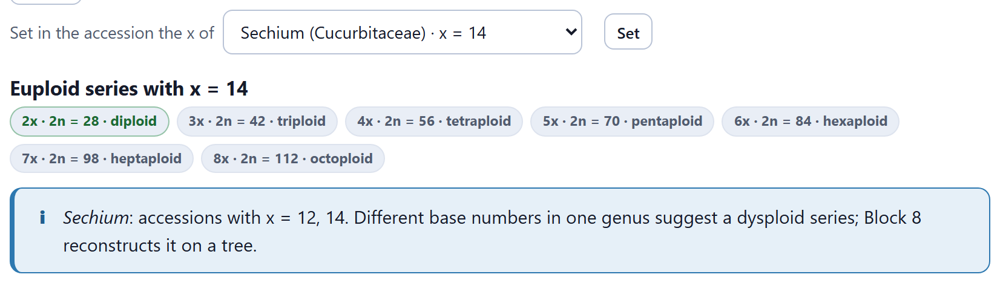
Figure 6.4. With the chayote example, the genus Sechium gathers accessions with x = 14 (the cultivated ones) and x = 12 (the wild one from Coscomatepec): the app suggests a dysploid series and points to Block 8, which reconstructs it on a tree (Section 8.5).
!Important
The warning only compares numbers; it does not know whether x = 12 comes from x = 14 or the other way around. In the example, the wild accession has 2n = 24 because two pairs of the base karyotype fused (descending dysploidy), but that is what the simulated data say, not the warning. The direction of change is inferred with a tree, in Block 8.
6.3Flow cytometry: genome size
In flow cytometry, nuclei stained with a DNA-binding fluorochrome pass one by one in front of a laser; the fluorescence of each is proportional to its DNA content. An internal standard of known content is processed together with the sample, and genome size comes from comparing the two peaks.
2C (pg) = (G0/G1 peak of the sample ÷ G0/G1 peak of the standard) × 2C of the standard
From the 2C, the app computes the 1C (2C ÷ 2, the content of the unreplicated nucleus of a gamete) and the 1Cx (2C ÷ ploidy level, the content of one monoploid set), with the terms of Greilhuber et al. (2005), and converts them to millions of base pairs with 1 pg = 978 Mbp (Doležel et al. 2003). The laboratory procedure is in Doležel et al. (2007).
The table on the Flow cytometry: genome size card has one row per run of the chosen accession:
Table 6.1. The columns of the cytometry table
Column
What it holds
Sample
The name of the run (a plant, a replicate).
Internal standard
Eight plant DNA standards with their 2C, from Raphanus sativus «Saxa» (1.11 pg) to Allium cepa «Alice» (34.89 pg), or Other (type its 2C).
Standard 2C (pg)
Empty, it uses the 2C of the chosen standard; with a number, that number rules (and it is required with Other).
Standard peak · Sample peak
The position (channel or mean intensity) of the G0/G1 peak of each.
Standard CV (%) · Sample CV (%)
The coefficient of variation of each peak, which measures its quality.
Ratio · 2C (pg) · 2C (Mbp)
Computed by the app; the table scrolls sideways to show them.
Below, a table summarizes the runs by accession: Runs, the mean 2C with its standard deviation in pg and in Mbp, the 1C, the Level and the 1Cx in pg and in Mbp. The level comes from the mode of the counts with the x of the accession; if the accession has no counts but does have a genome formula from Block 5 (AA, AAAA, AABBCC…), the level is the number of letters.
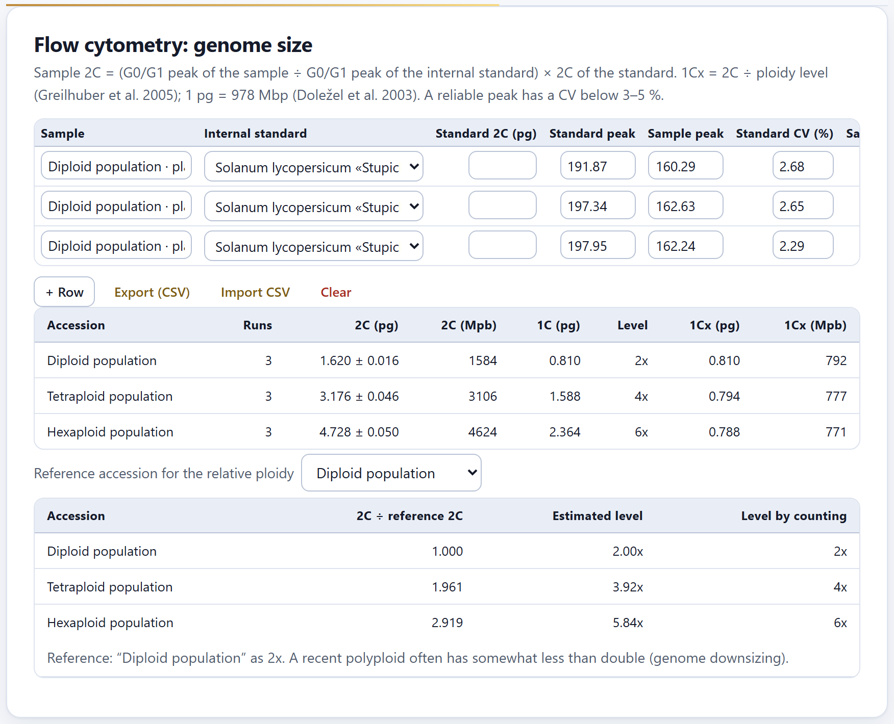
Figure 6.5. The polyploid series with a tomato standard (2C = 1.96 pg). The first diploid run has the standard at 191.87 and the sample at 160.29: ratio 0.835, 2C = 1.637 pg. The summary gives 1.620 ± 0.016, 3.176 ± 0.046 and 4.728 ± 0.050 pg for 2x, 4x and 6x, and a 1Cx that falls from 0.810 to 0.794 and 0.788 pg.
The last part is the relative ploidy. Choose an accession of known level in Reference accession for the relative ploidy; the table divides the 2C of each accession by that of the reference and multiplies by the level of the reference (from its counts, or 2x if it has none), and shows the Level by counting next to it for comparison. It is the way to estimate the level of plants that have only been measured, not counted. At least two accessions with runs are needed.
▸Worked example · genome downsizing
With the diploid population as reference, the tetraploid has 1.961 times its 2C and the hexaploid 2.919 times: estimated levels of 3.92x and 5.84x, against 4x and 6x by counting. The quotient falls somewhat below the whole number, and that is why the 1Cx decreases with the level (792, 777 and 771 Mbp). The note of the table explains it: a recent polyploid often has somewhat less than double, because it loses DNA after doubling. A difference like this does not change the level; one of half a unit (3.5x) would call for counting.
The app checks each run and warns in three cases: if a peak has a CV above 5% (damaged nuclei or debris: repeat the preparation); if the ratio is between 0.85 and 1.18, when sample and standard nearly coincide and their peaks overlap (choose a more different standard); and if sample and standard differ more than threefold in DNA content (ratio above 3 or below 1/3): that far apart, the response of the cytometer may stop being linear, and a standard closer in size to the sample is advisable (Doležel et al. 2007). No run of the example triggers these warnings.
6.4Cytometer histogram
Instead of typing the peaks by hand you can open the histogram exported by the cytometer: the app finds the peaks, sets a gate on each, measures their mean and CV, and with two clicks takes the run to the table of the previous section.
Open a cytometer CSV accepts two file layouts (.csv, .tsv or .txt): two columns, channel and number of nuclei, which is the finished histogram; or one column with the intensity of each event, which the app bins into 512 channels. The first row may hold headers. The histogram is saved in the project under the file name and linked to the chosen accession; if you open several, the Histogram selector switches between them. Log scale draws the number of nuclei on a logarithmic scale, useful to see small peaks.
How it finds the peaks
The app smooths the histogram with a five-channel moving average, ignores the lowest 4% of the scale (where debris piles up) and looks for local maxima that meet three conditions: reaching at least 4% of the highest peak, standing out enough from the valleys that separate them from higher ground (so that noise on the debris slope is not taken for a peak) and lying no closer than 6% of the scale to a higher peak. Each gate runs from halfway to its neighbor to halfway to the next one, without going beyond ±15% of the peak position.
The gate table gives, for each gate, From and To (which you can correct by typing), the Nuclei that fall inside, the Mean and the CV (%), weighted by the number of nuclei in each channel. The × button deletes one; + Gate adds another between 40 and 50% of the scale, for you to move where needed, and Find the peaks again discards the gates and computes them again.
Below, you choose G0/G1 peak of the sample, G0/G1 peak of the standard and Standard. By default, the standard is the first gate (the one with the lowest fluorescence), the sample the second, and the internal standard tomato. The line below gives the ratio and the 2C instantly; Add to cytometry writes a new row into the table of Section 6.3, with both peaks and their CVs, in the accession of the histogram.
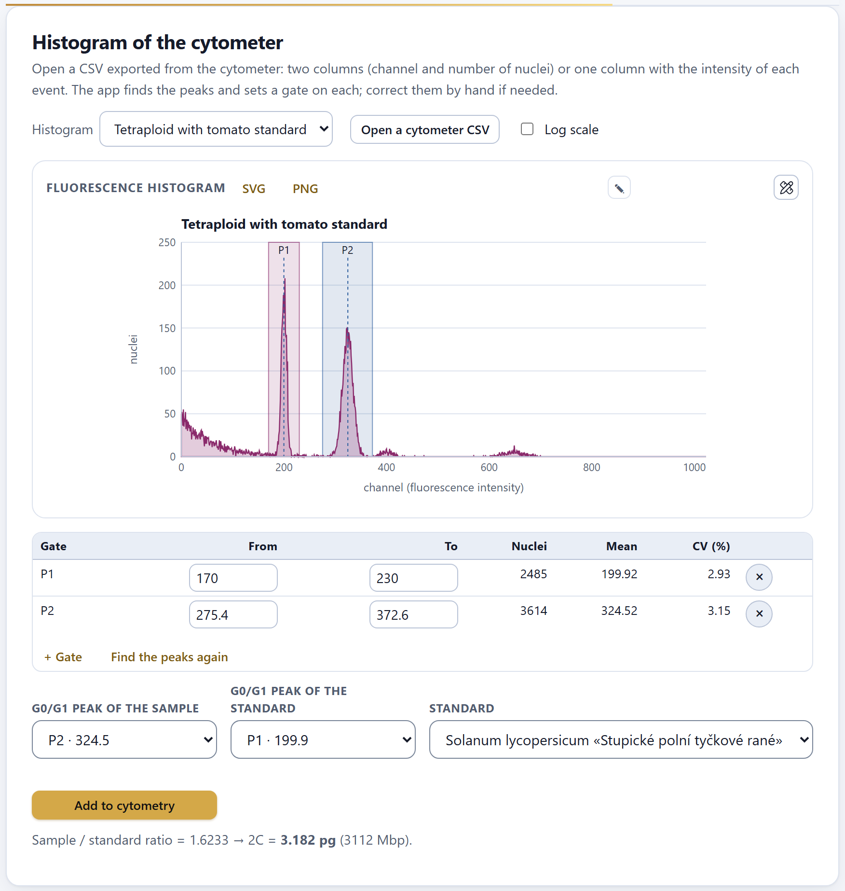
1234567
Figure 6.6. The example histogram, with 1,024 channels and 9,010 nuclei: a tetraploid with a tomato standard. Cell debris fills the low channels; P1 is the G0/G1 peak of the standard and P2 that of the sample.
1Histogram. Which of the project’s histograms is shown.
2Open. Reads a cytometer CSV; next to it, Log scale.
3The chart. The shaded gates and a dotted line at the mean of each.
4Gates. Their limits, editable, with nuclei, mean and CV.
5Peaks. Which gate is the sample, which the standard and which standard it is.
6Add to cytometry. Writes the run into the table of Section 6.3.
7Result. The ratio and the 2C, in pg and in Mbp.
▸Worked example · the example tetraploid
The app finds two peaks. P1, from 170 to 230, has 2,485 nuclei with mean 199.92 and CV 2.93%; P2, from 275.4 to 372.6, has 3,614 nuclei with mean 324.52 and CV 3.15%. The ratio is 1.6233 and, with tomato, 2C = 3.182 pg (3,112 Mbp), very close to the 3.176 pg of the summary of runs. The G2 peaks (twice each G0/G1, around channels 400 and 650) are barely visible: they do not reach 4% of the highest peak and get no gate, which is what you want.
iNote
In the example, the standard’s gate gives a CV of 2.93%, somewhat higher than that of its peak alone, because its left edge picks up the tail of the debris. If the same happens with your data, narrow the gate by hand: the CV worth reporting is that of the peak, not of the debris that comes with it.
6.5Unit conversion
Genome size is published in picograms (pg) or in base pairs; the Unit conversion card turns a value in one unit into the other three.
Type the number in Value and choose its Unit: pg, Mbp, Gbp or bp. The four figures below update as you type, with the equivalence 1 pg = 978 Mbp (Doležel et al. 2003). By default, 1 pg is 978 Mbp, 0.978 Gbp and 978,000,000 bp.
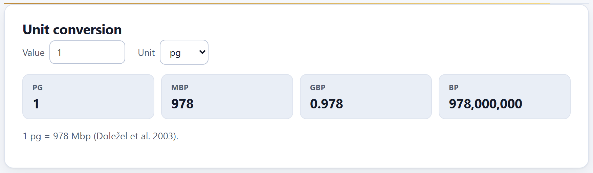
Figure 6.7. The conversion with its default value, 1 pg.
6.6Mitosis and cytotoxicity: the Allium test
The Allium test measures whether a substance damages cell division: onion bulbs are set to root in the control water and in the substance, and in the root tips the cells that divide, and those that divide badly, are counted (Fiskesjö 1985; Leme and Marin-Morales 2009). This card does not depend on the chosen accession: it has its own table, by treatment.
The table on the Mitosis and cytotoxicity (Allium test) card has one row per bulb or root, with Treatment and Replicate, the cells in Interphase, Prophase, Metaphase, Anaphase and Telophase, the six aberrations (c-metaphase, stickiness, bridges, laggards, fragments and multipolar spindles, counted among the dividing cells), the Micronuclei in interphase and, at the end, the MI (%) of each row.
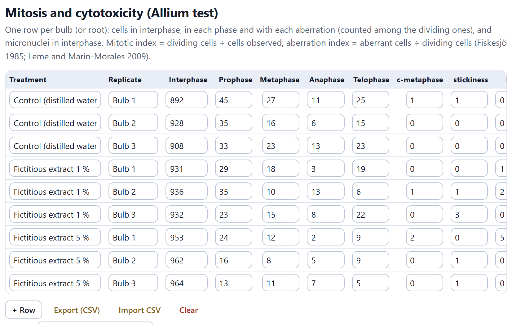
Figure 6.8. The table of the example: three treatments with three bulbs each and 1,000 cells per bulb. The first control bulb has 892 cells in interphase and 45, 27, 11 and 25 in prophase, metaphase, anaphase and telophase. The table continues to the right with the other aberrations, the micronuclei and the mitotic index.
θTheory in brief · the indices
Mitotic index (MI) = dividing cells ÷ cells observed × 100: if it falls, the substance slows division (cytotoxicity). Phase index = cells in each phase ÷ dividing cells × 100. Aberration index = aberrant cells ÷ dividing cells × 100: if it rises, the substance damages the spindle or the chromosomes (genotoxicity). Micronuclei, per thousand interphase cells (‰): remains of chromosomes or fragments left outside the nucleus.
The Control selector says which treatment is the comparison; the app proposes the one named “control”, “testigo” or “water”. The first results table gives, by treatment, the replicates, the cells, the mitotic index, the percentage of each phase, the aberrations (%) and the micronuclei (‰). The indices are computed with the counts of the replicates pooled and, in brackets, the mean ± standard deviation of the replicates; the control carries ★.
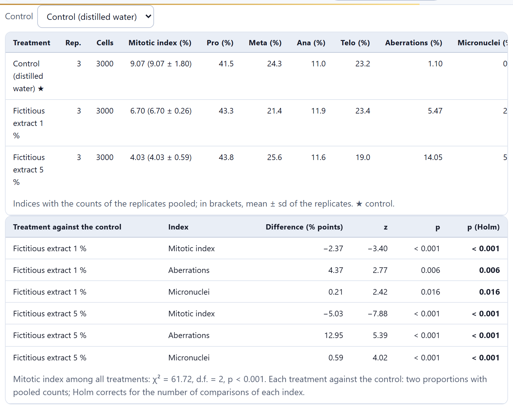
Figure 6.9. The mitotic index falls from 9.07% in the control to 6.70 and 4.03% with the extract at 1 and 5%, and the aberrations rise from 1.10 to 5.47 and 14.05%. All the differences with the control are significant after the Holm correction.
The second table compares each treatment with the control in the three indices: the Difference (% points), the z statistic and its p from a two-proportion test with pooled counts, and the p (Holm), corrected for the number of comparisons of each index (Holm 1979), in bold if below 0.05. Its footer adds a χ² homogeneity test of the mitotic index among all the treatments.
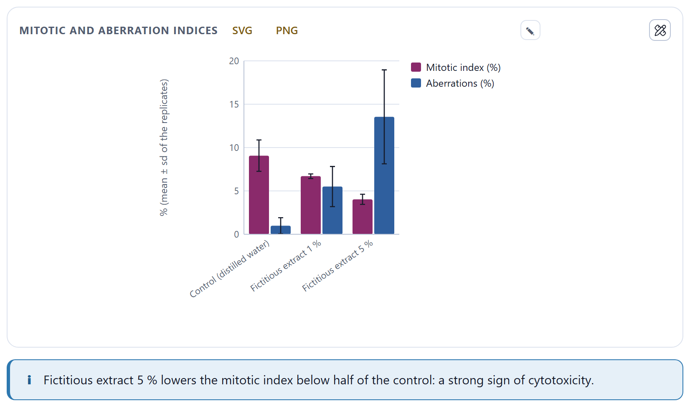
Figure 6.10. The Mitotic and aberration indices chart, with the mean ± standard deviation of the replicates, and the warning that goes with it: the extract at 5% lowers the mitotic index below half of the control.
▸Worked example · the extract at 1%
Against the control, the mitotic index falls 2.37 points (z = −3.40, p < 0.001), the aberrations rise 4.37 points (z = 2.77, p = 0.006) and the micronuclei 0.21 points, from 0.00 to 2.14‰ (z = 2.42, p = 0.016). With two treatments per index, Holm leaves those p unchanged because they are the largest of their index. Among the three treatments, the mitotic index gives χ² = 61.72 with 2 degrees of freedom, p < 0.001. It is a cytotoxic and genotoxic substance, more so at higher concentration; only the 5% one crosses the threshold of half the control (4.03 against 9.07%).
iPooled counts
The tests pool the cells of the replicates, as if they were one large sample. This is usual in the Allium test, but it ignores the variation among bulbs. That is why the table also shows the mean ± standard deviation of the replicates: if a treatment has one bulb very different from the others, it shows there before it shows in the p.
Reading rules for the block
✓Decision rule
If the modal number has fewer than 60% of the cells
then count more cells before giving the number: the figure is flagged as doubtful.
If there are two modes
then there is no number yet: count more cells.
If the mode is not a multiple of x
then think of aneuploidy, B chromosomes or a different x (dysploidy); also check the x.
If a peak has CV > 5%
then repeat the preparation; a reliable peak has a CV below 3–5%.
If the sample/standard ratio is between 0.85 and 1.18
then change the standard: the peaks overlap.
If the ratio is above 3 or below 1/3
then choose a closer standard: the response of the cytometer may stop being linear.
If the level estimated by cytometry differs from the count by less than half a unit
then it is the genome downsizing of polyploids; if it differs more, count chromosomes.
If a treatment lowers the mitotic index below half of the control
then it is a strong sign of cytotoxicity, and the app warns about it.
Guides for interpretation, not laws.
✕When something goes wrong
The level says “x missing”. The accession has no basic number: type it on the Accession card or use Set.
The cytometry table does not compute the 2C. One of the two peaks is missing, or you chose Other (type its 2C) without typing the 2C of the standard.
The relative ploidy does not appear. At least two accessions need runs.
“No numbers were found in the file.” The CSV has no numeric columns; check the separator or remove the long header lines some instruments export.
The app finds one peak too many or too few. Correct the gates by hand, delete them with × or add one with + Gate; Find the peaks again returns to the automatic computation.
The Allium test compares against the wrong treatment. Choose the right one in Control.
7
Chapter seven · Block 7
Banding and FISH
Two karyotypes with the same formula can be different: heterochromatin bands, fluorochromes and DNA probes mark sites that morphology does not see. This block records each signal by its pair, its arm and its position, draws it on the idiogram of Block 3, builds the physical map of one chromosome and summarizes the pattern of each accession, its concordance among cells and the sites of each probe in every accession.
7.1Accession, probes and bands
7.2Signals
7.3Physical map of one chromosome
7.4Pattern of the accession
7.5Concordance among cells and all accessions
The chapter uses two examples, both simulated. The chayote one (Sechium edule) has four accessions with 45S rDNA and CMA⁺ on the satellite of pair 1, 5S rDNA on the long arm of pair 4, an extra 45S site on a single homolog of pair 9 in Uruapan, and the 5S signal also recorded cell by cell. The maize one brings the heterochromatic knobs and the nucleolus organizer region (NOR) as bands.
7.1Accession, probes and bands
A signal only makes sense on a karyotype: that is why the block works with the pair numbering of Block 3, and an accession without a karyotype cannot draw its idiogram (although it can keep its signals).
The Accession and probes card has the Accession selector and two buttons that open the examples: Open the chayote example (rDNA) and Open the maize example (knobs). On entering, the block picks the first accession that has signals. Its text summarizes the convention of the app: each signal is recorded by its pair, its arm and its relative position, the fraction of the arm from the centromere (0) to the telomere (1).
Below, the Probes and bands table defines what can be marked in the whole project, with four columns:
Name, the one shown in the tables, in the legend and on the physical map.
Kind: C-band, N-band, Fluorochrome (CMA, DAPI), FISH (DNA probe), GISH (genome) or Other.
Color, among Heterochromatin (dark) and eight colors that remain distinguishable with color blindness (vermilion, bluish green, blue, orange, reddish purple, sky blue, yellow and gray).
Drawing: Band, a stripe across the chromosome, or Dots on the chromatids, one dot on each chromatid, as FISH signals look.
A new project starts with six: C-band, CMA⁺, DAPI⁺, 45S rDNA, 5S rDNA and Telomere (the last drawn as dots). You can rename them, delete them or add your own with + Row; a new probe is called “New probe”, is of kind FISH and comes in sky blue.
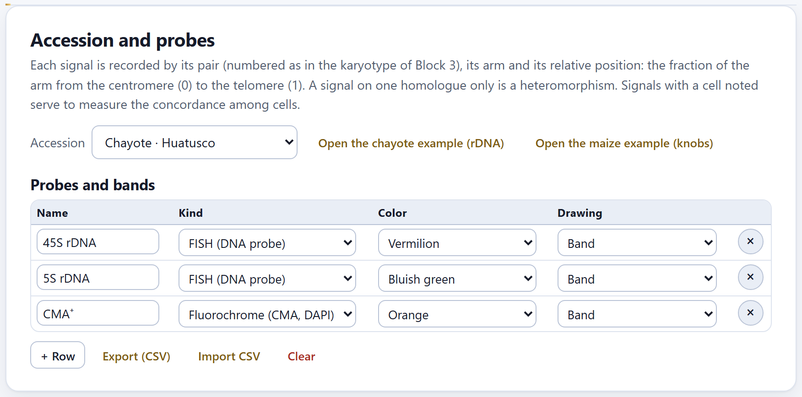
Figure 7.1. The chayote example defines three: 45S rDNA (vermilion) and 5S rDNA (bluish green), from FISH, and CMA⁺ (orange), a fluorochrome. All three are drawn as bands.
θTheory in brief · what each technique marks
C-banding stains constitutive heterochromatin; fluorochromes tell it apart by composition: chromomycin A₃ (CMA⁺) shines on GC-rich heterochromatin, like that of many NORs, and DAPI (DAPI⁺) on AT-rich heterochromatin (Guerra 2000). FISH locates a specific sequence with a labeled probe: the 45S and 5S ribosomal genes are the probes most used in plants because they give few sites, large and easy to compare (Jiang and Gill 2006; Schwarzacher and Heslop-Harrison 2000). GISH uses the whole genome of a parent as a probe to recognize its chromosomes in a hybrid.
7.2Signals
Signals are typed in a table or placed with a click on the idiogram. Both ways fill the same table.
The signal table shows those of the chosen accession, with these columns:
Table 7.1. The columns of the signal table
Column
What it holds
Pair
The number of the pair in the karyotype of Block 3.
Homolog
both, or 1 to 4 if the signal is on a single homolog (a heteromorphism).
Arm
p (short) or q (long).
Position (0–1)
The center of the signal as a fraction of the arm, from the centromere (0) to the telomere (1).
Size (0–1)
Its extent, also as a fraction of the arm (0.08 if not given).
Probe
One from the Probes and bands table.
Cell (optional)
Empty, the signal belongs to the pattern of the accession; with the name of a cell, it is an observation of that cell.
Region
Computed by the app: proximal, interstitial or terminal.
✓Decision rule · the region of a signal
If position < 1/3 of the arm
then proximal, near the centromere.
If 1/3 ≤ position ≤ 0.8
then interstitial.
If position > 0.8
then terminal, near the telomere.
A signal exactly at 0.8 counts as interstitial, like the 45S of pair 9 in Uruapan.
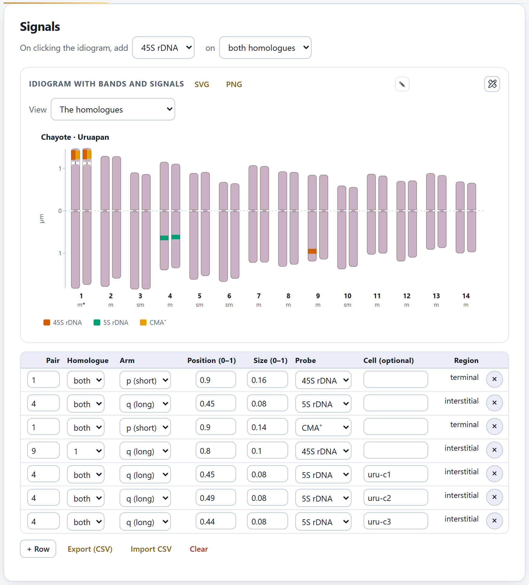
12345
Figure 7.2. The Uruapan accession in the The homologs view: the 45S rDNA site of pair 9 is on a single homolog, number 1. The last three rows are the 5S signal recorded in three cells (uru-c1 to uru-c3).
1Probe of the click. Which probe a click on the idiogram adds.
2Homolog of the click. On both homologs or on one.
3View. One chromosome per pair or the homologs.
4Idiogram. That of Block 3, with the bands and signals on top.
5Signal table. One row per signal, editable.
A click on the idiogram
Choose the probe in On clicking the idiogram, add and, in on, whether it goes on both homologs, homolog 1 or homolog 2. A click on a chromosome of the idiogram adds a row: the arm is the one on the side of the centromere where you clicked and the position is the distance to the centromere as a fraction of that arm, rounded to hundredths. A message confirms the pair, the arm and the position. In the The homologs view the click falls on a particular homolog and the signal goes there, whatever on says. You can then fine-tune the position or the size in the table.
The View selector of the idiogram switches between One chromosome per pair, with the means of the pairs, and The homologs, each homolog with its own measurements. The Idiogram with bands and signals figure downloads as SVG or PNG and is edited like the others. If the accession has no karyotype, the card says so: the idiogram needs the measurements of Block 2.
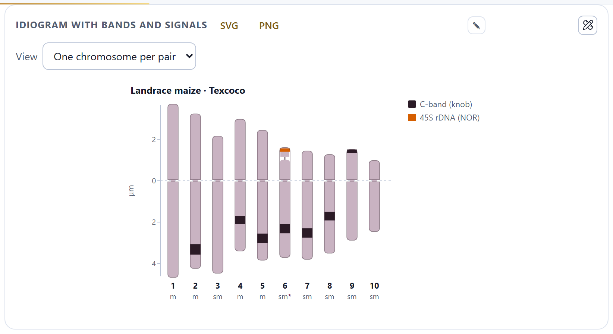
Figure 7.3. The example maize, one chromosome per pair: seven knobs (C-band) on the long arms of pairs 2, 4, 5, 6, 7 and 8 and near the telomere of the short arm of pair 9, and the 45S rDNA on the satellite of pair 6, the NOR.
7.3Physical map of one chromosome
The physical map draws a single pair large, with a ruler in microns from the centromere and each signal labeled: its probe, its arm, its position as a percentage of the arm, its distance to the centromere in microns and, if it is a heteromorphism, the homolog.
Choose the pair in Pair; each option gives its number, its class and, if it has one, “-sat”. The title of the drawing repeats the pair, the class and the total length. It is the figure that goes into a paper when a chromosome has several signals close together, because the labels move apart so as not to overlap.
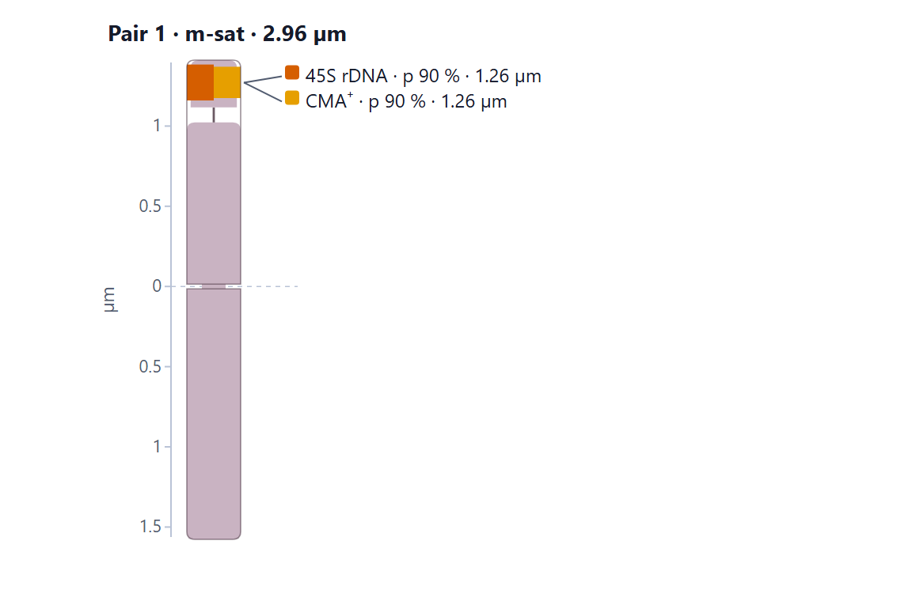
Figure 7.4. Pair 1 of Huatusco (m-sat, 2.96 µm): 45S rDNA and CMA⁺ on the satellite, at 90% of the short arm, 1.26 µm from the centromere.
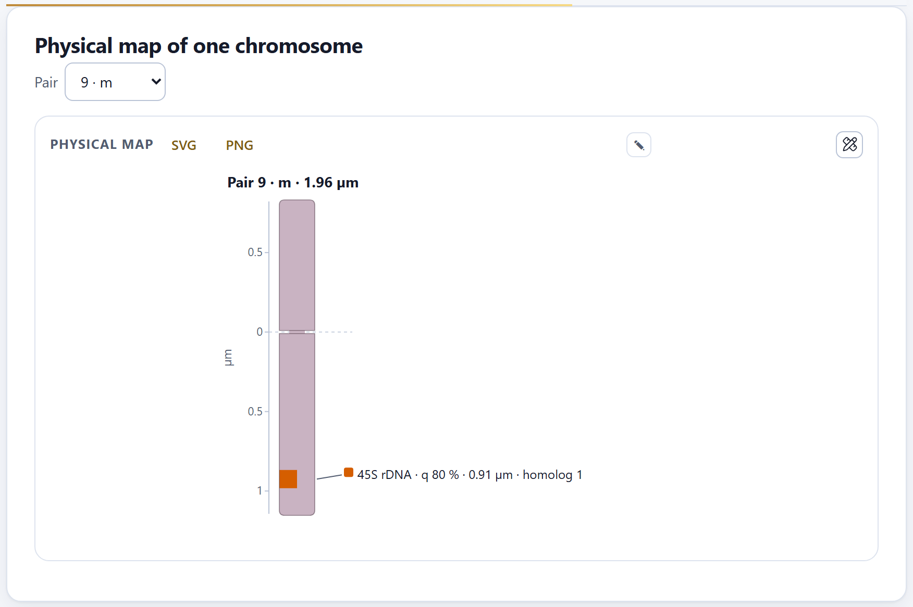
Figure 7.5. Pair 9 of Uruapan (m, 1.96 µm): the 45S rDNA site at 80% of the long arm, at 0.91 µm, on homolog 1.
iRelative position and microns
The relative position does not change with condensation: the 45S of pair 1 is at 90% of the short arm in the three cultivated accessions although the arm measures differently in each. That is why it is the one compared. The microns depend on the measured arm and serve to place the signal in the figure of that accession.
7.4Pattern of the accession
The pattern of an accession is its signals without a cell. If a combination of pair, probe, arm and homolog was only recorded cell by cell, the app fills it in with the mean position of those cells; that way the idiogram and the tables do not lose the signal.
The Pattern of the accession table, on the card of the same name, has one row per probe with at least one site:
Probe or band, with its color, and its Kind.
Sites per set, how many sites there are in one chromosome set; a site on a single homolog counts as half.
Pairs, in order, and Where: each site as pair, arm and position in percent, with the homolog in brackets if it is a heteromorphism (“9q(1) 80 %”).
Regions, how many sites are proximal, interstitial or terminal, with the same counting of half sites.
On one homolog only, how many are heteromorphisms.
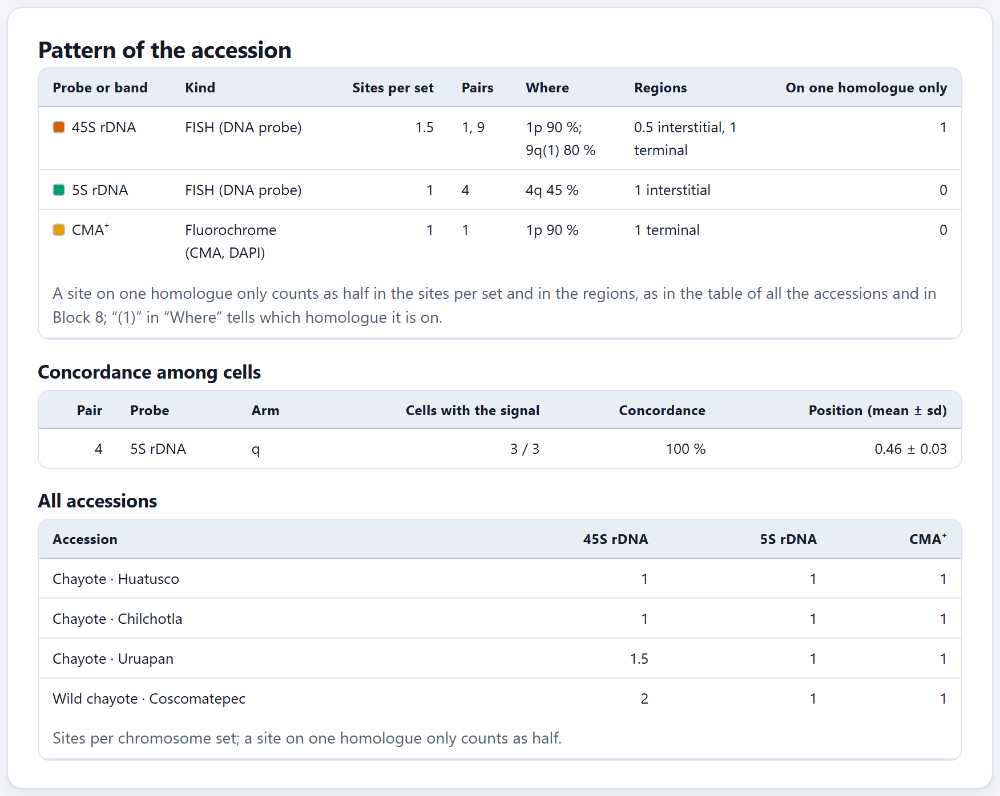
Figure 7.6. The Pattern of the accession card with Uruapan: 1.5 sites of 45S rDNA per set, one terminal at 1p 90% and half an interstitial one at 9q(1) 80%, which is on a single homolog (“0.5 interstitial, 1 terminal”); one of 5S rDNA (4q 45%) and one of CMA⁺ (1p 90%). Below, the concordance of the 5S signal and the sites of the four accessions.
iThe half site
A site on a single homolog is in one of the two sets, and that is why it counts as half in the sites per set and in the regions. The footer of the table recalls it, and the counting is the same in the All accessions table (Section 7.5) and in the matrix of Block 8: the 45S of Uruapan is worth 1.5 in all three. “(1)” in Where tells which homolog it is on, and the On one homolog only column how many sites are heteromorphisms.
▸Worked example · the wild accession
In Coscomatepec, the 45S rDNA has two terminal sites, on pairs 2 and 3 (2p 85% and 3p 90%), and the CMA⁺ one on pair 3. The pair carrying the satellite with 45S and CMA⁺ is number 3 here, not 1: the fusion of two pairs of the base karyotype left two longer chromosomes that move to the start of the karyotype, and the numbering of Block 3 goes by length. When comparing accessions, compare the sites by their mark and position, not by the number of the pair.
7.5Concordance among cells and all accessions
A signal that appears in every cell is a feature of the accession; one that appears in a single cell may be a hybridization artifact. The Concordance among cells table measures this with the signals that have a cell noted.
It groups those signals by pair, probe and arm and gives, for each group, the Cells with the signal out of the total of cells with any signal recorded, the Concordance in percent and the Position (mean ± sd) among cells. If the accession has no cell-by-cell signals, the table says so. In the example, the 5S signal of pair 4 is in the three cells of each accession (100%), with position 0.47 ± 0.03 in Huatusco, 0.42 ± 0.03 in Chilchotla, 0.46 ± 0.03 in Uruapan and 0.47 ± 0.03 in the wild one.
The All accessions table crosses the accessions with signals and the probes used: each cell is the number of sites per chromosome set, with a site on a single homolog counted as half, as its footer says. In the chayote, the 45S rDNA gives 1 in Huatusco and Chilchotla, 1.5 in Uruapan and 2 in the wild one; the 5S and the CMA⁺ give 1 in all four. These figures go into the matrix of Block 8 as “Sites …” variables (Section 8.1).
✓Decision rule · reading the pattern
If the concordance of a signal is low
then check the preparations before giving it as a feature of the accession.
If the deviation of the position among cells is large
then the signal was measured on chromosomes with different condensation or pairs were confused.
If a site is on a single homolog
then it is a heteromorphism: confirm it in several cells before interpreting it as a polymorphism of the population.
If two accessions with the same formula differ in their sites
then the signals distinguish what morphology does not; take them to the comparison of Block 8.
Guides for interpretation, not laws.
✕When something goes wrong
“This accession has no karyotype”. The idiogram and the physical map need the measurements of Block 2 and the karyotype of Block 3. The signals are kept anyway.
A signal does not appear on the idiogram. Its pair is higher than the number of pairs in the karyotype, the arm is missing or the position is not a number; correct it in the table.
The signals ended up on the wrong pair after changing the karyotype. Signals keep the number of the pair, not the chromosome: if you change the order of the pairs in Block 3, check the table.
The click added the signal on the wrong arm. The arm depends on the side of the centromere where the click falls; correct Arm and Position (0–1) in the table.
The concordance does not appear. No signal of the accession has a Cell (optional) written.
8
Chapter eight · Block 8
Comparison among taxa
What the previous blocks computed for each accession, put into a single matrix together with any published taxa you want to add: their karyological distances and the dendrogram, the principal components, the idiograms at the same scale, the evolution of the chromosome number on a tree and a map of the cytotypes.
8.1Matrix of karyological parameters
8.2Distances and clustering
8.3Principal components
8.4Parallel idiograms
8.5Chromosome number evolution
8.6Map of cytotypes
The block has no accession selector: it works with all of them at once. The whole chapter uses the chayote example, which brings the four accessions of Sechium edule with their karyotype, indices and signals, seven more cucurbits typed by hand with their 2n and x, the coordinates of the localities and an illustrative tree in Newick. The data are simulated and the tree is not a published phylogeny.
8.1Matrix of karyological parameters
Each accession brings whatever it has computed: the 2n (the mode of its counts in Block 6 or, if it has none, that of its karyotype), the x, the length of one set (THL) and the asymmetry indices of Block 4, the mean 2C of its cytometry and the number of sites of each probe in Block 7.
Any accession with at least 2n, THL, 2C or some signal enters the matrix. The chips at the top choose the variables of the analysis: 2n, x, Length of one set (THL), MCA, CVCL, CVCI, A1, A2, TF%, Syi, 2C (pg) and one “Sites …” variable for each probe with signals. By default the six proposed by Peruzzi and Altınordu (2014) are on: 2n, x, the haploid length, MCA, CVCL and CVCI. A click turns one on or off.
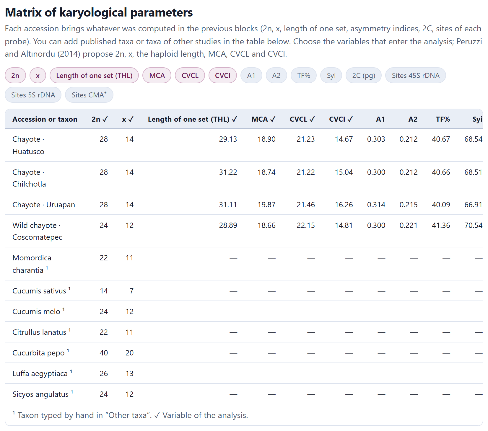
Figure 8.1. The chayote matrix: four accessions with all their parameters and seven taxa (¹) with only 2n and x. The variables of the analysis carry ✓. Huatusco has THL = 29.13 µm, MCA = 18.90, CVCL = 21.23 and CVCI = 14.67; the wild one, 2n = 24, x = 12 and CVCL = 22.15. The table continues to the right with Syi and the sites of each probe.
The table shows every variable that some row has, chosen or not, so that you see what is available. Taxa typed by hand carry ¹.
Other taxa
The Other taxa table, below the matrix, adds published taxa or taxa from other studies: Taxon, 2n, x, THL, MCA, CVCL, CVCI, A1, 2C (pg), Latitude and Longitude. It is typed by hand, pasted or imported as CSV; on import, the name column may also be called “especie” or “species”.
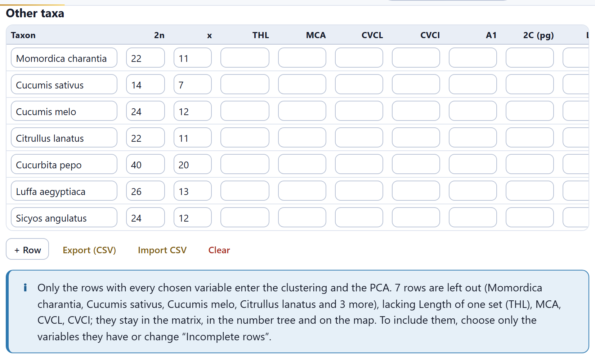
Figure 8.2. The seven cucurbits of the example, from Cucumis sativus (2n = 14) to Cucurbita pepo (2n = 40), with only 2n and x. The warning below says that, with the default option of Incomplete rows (Section 8.2), those seven rows are left out of the clustering and the component analysis because they lack THL, MCA, CVCL and CVCI.
8.2Distances and clustering
With the chosen variables, the app computes a karyological distance between each pair of rows and clusters them into a dendrogram. At least three accessions or taxa with data are needed.
Distance offers two:
Gower (the default; Gower 1971): each variable is divided by its range, so that all weigh the same, and the distance is the mean of the differences. It runs from 0 to 1.
Euclidean (standardized values): each variable is standardized (mean 0, deviation 1) and the Euclidean distance is taken.
Method chooses the clustering: UPGMA, the average of the distances between groups (Sneath and Sokal 1973), or Ward, which joins the groups that least increase the variance within them (Ward 1963); the app applies it to the squared distances and gives the heights on the scale of the distance. The dendrogram downloads as SVG or PNG or, with Newick, as tree text (dendrogram_upgma.nwk or dendrogram_ward.nwk) to open in other programs.
Incomplete rows
A distance between two rows is only comparable with another if both were computed with the same variables. The Incomplete rows menu decides what to do with the rows that lack some chosen variable:
Table 8.1. The three options of “Incomplete rows”
Option
What it does
Left out (only rows with every variable) (the default)
Only the rows that have every chosen variable enter the clustering and the component analysis. A warning says how many and which are left out and what they lack; they stay in the matrix, in the number tree (Section 8.5) and on the map (Section 8.6).
All, with the variables every row has
All the rows enter, but only with the chosen variables that every row has; a warning says which are used and which are left out.
All; each pair with the variables it shares
All the rows enter and each pair is compared with the variables both have. One warning recalls that there are empty cells and another points to the pair that shares the fewest variables, with its distance.
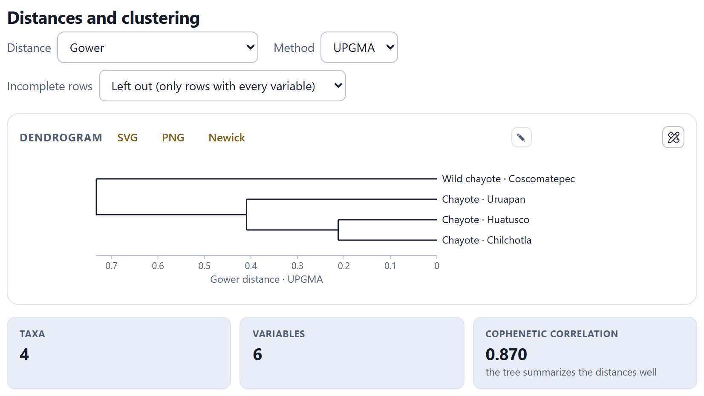
Figure 8.3. The default dendrogram (Gower, UPGMA, incomplete rows left out): the four chayote accessions with the six variables. Huatusco and Chilchotla join first, then Uruapan, and the wild one stays apart. The cophenetic correlation is 0.870.
Below the dendrogram, three figures: Taxa, Variables and the Cophenetic correlation, the correlation between the original distances and those read on the tree (Sokal and Rohlf 1962). If it is 0.8 or more, the app says “the tree summarizes the distances well”; if it is lower, it warns that the tree distorts them. At the end, the full Distance matrix.
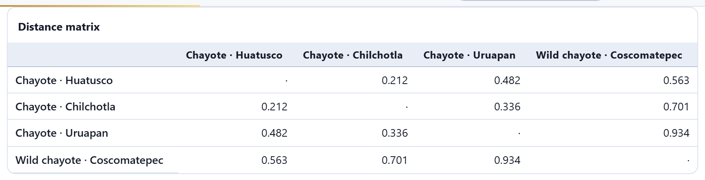
Figure 8.4. The Gower distance matrix. Among the cultivated accessions, 0.212 (Huatusco–Chilchotla), 0.336 (Chilchotla–Uruapan) and 0.482 (Huatusco–Uruapan); the wild one is at 0.563, 0.701 and 0.934 from Huatusco, Chilchotla and Uruapan.
With the same four rows, Ward also gives a cophenetic correlation of 0.870 and the Euclidean distance with UPGMA 0.918; all three draw the same tree.
Comparing each pair with what it shares
With the third option the eleven rows enter, and the result shows why it is not the default. The seven taxa typed by hand only have 2n and x; between them and the accessions, the distance is computed only with those two numbers, which moreover say the same thing (x = 2n / 2 in all of them).
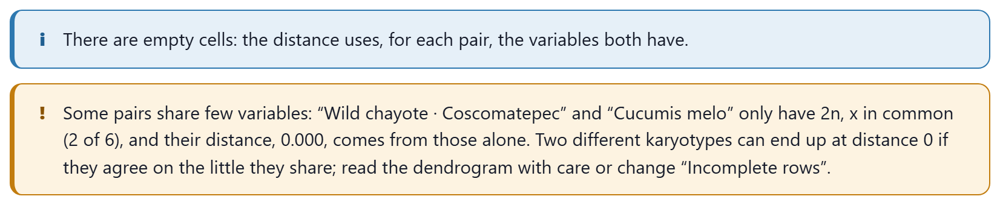
Figure 8.5. The warnings with All; each pair with the variables it shares: the wild accession and Cucumis melo only have 2n and x in common (2 of 6), and their distance, 0.000, comes from those alone.
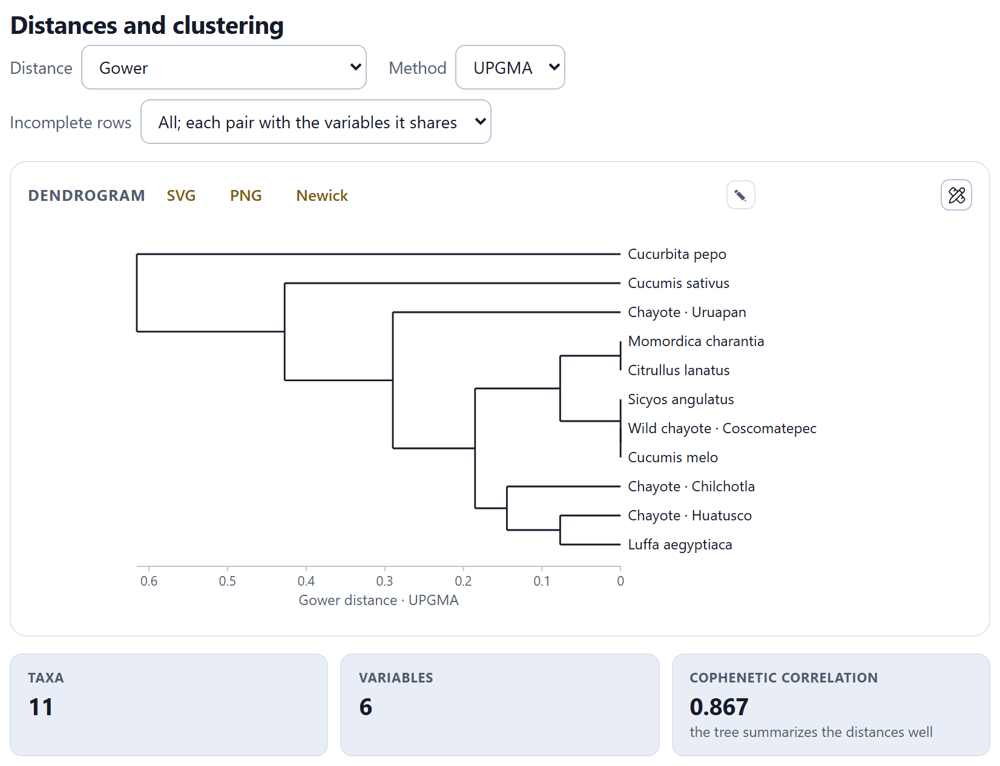
Figure 8.6. The dendrogram of the eleven rows with that option (cophenetic correlation 0.867). The chayote accessions do not form a group: Uruapan stays apart, the wild one next to Cucumis melo and Sicyos angulatus, and Huatusco next to Luffa aegyptiaca.
!Important · which option to choose
With All; each pair with the variables it shares, the wild accession (2n = 24) ends up at distance 0.000 from Cucumis melo and Huatusco (2n = 28) at 0.077 from Luffa (2n = 26), while between two chayotes, compared with the six variables, the small differences in THL, MCA, CVCL and CVCI add up to more (Huatusco–Uruapan, 0.482). The tree is not miscalculated: it mixes distances that measure different things. With All, with the variables every row has the eleven rows enter but only with 2n and x: the three cultivated accessions end up at 0.000 from each other and the tree speaks only of the chromosome number (cophenetic correlation 0.934). Keep the default option to compare karyotypes and choose another only when you know which question it answers.
8.3Principal components
Principal component analysis summarizes the variables in a few axes that are uncorrelated with each other (Jolliffe 2002). The app computes it on the correlation matrix, with the rows that entered the clustering and the variables that vary, and draws it as a biplot (Gabriel 1971): the points are the rows and the arrows the variables.
x axis and y axis choose which components are drawn; each option says how much variance it explains. In the biplot, the accessions of the project are circles with their color and the other taxa, if they enter, gray squares. A long arrow in the direction of an axis says that the variable weighs on that component; two arrows close together, that the variables go hand in hand. The table below gives, per component, the Eigenvalue, the Variance, the Cumulative and the loadings of each variable, which are its correlations with the component.
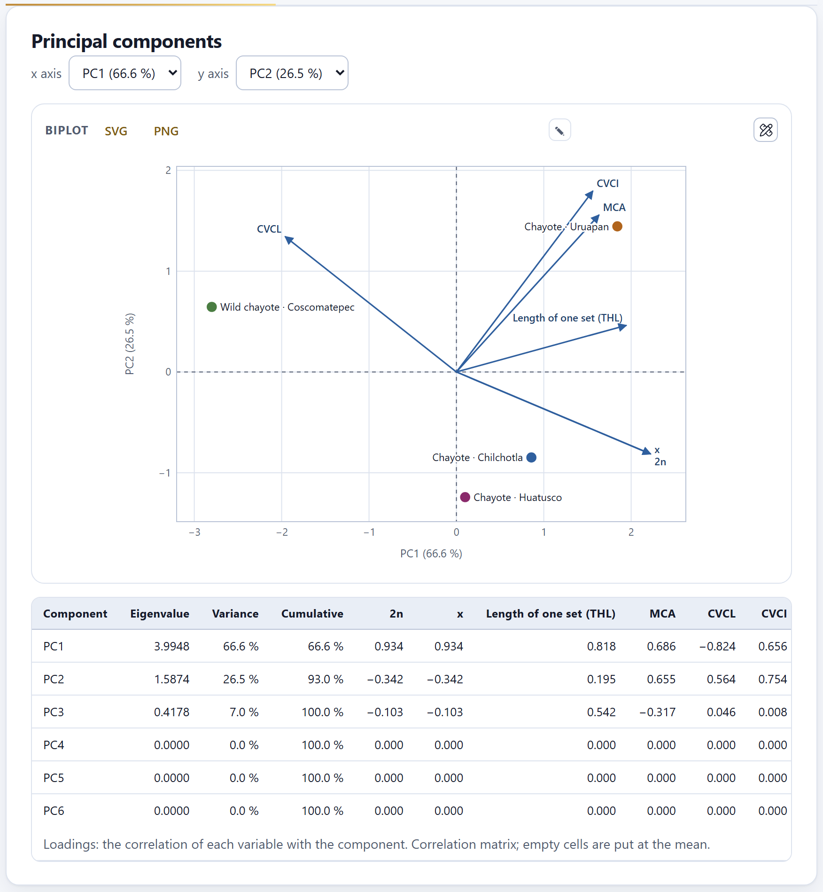
Figure 8.7. PC1 explains 66.6% of the variance and PC2 26.5% (93.0% together). On PC1 load 2n and x (0.934), THL (0.818) and, in the opposite direction, CVCL (−0.824): they separate the wild accession from the cultivated ones. On PC2 load CVCI (0.754) and MCA (0.655), which set Uruapan apart from Huatusco and Chilchotla.
iNote
With four rows there cannot be more than three components with variance, and since 2n and x are redundant, the last three have eigenvalue 0.0000: do not interpret them. If you choose an option of Incomplete rows that leaves empty cells, the analysis puts them at the mean of their variable and the footer of the table adds “(There are empty cells.)”.
If fewer than two variables vary, there is no component analysis, and the app says so.
8.4Parallel idiograms
The idiograms of every accession with a karyotype, one below the other, at the same scale and with their formula in the title: the figure that shows at a glance how they resemble each other and how they differ.
Scale chooses between The same, in microns, which respects the real sizes, and Relative length (%), which puts each chromosome as a percentage of its set and compares only the proportions. The Bands and signals checkbox adds or removes the marks of Block 7.
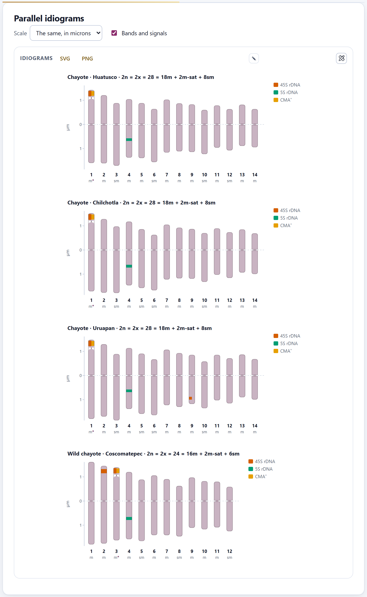
Figure 8.8. The three cultivated accessions, 2n = 2x = 28 = 18m + 2m-sat + 8sm, and the wild one, 2n = 2x = 24 = 16m + 2m-sat + 6sm, with its two longest pairs at the start, the satellite with 45S and CMA⁺ on pair 3 and a second 45S site on pair 2. In Uruapan the 45S site of pair 9 is visible.
8.5Chromosome number evolution
On a tree of the taxa, parsimony reconstructs the chromosome numbers of the ancestors: it looks for the history with the lowest total cost of events (Sankoff 1975). The events are those of the models of chromosome number evolution (Mayrose et al. 2010): +1 and −1, ascending and descending dysploidy; ×2, polyploidy; and ×1.5, demiploidy.
Type or paste the tree in Newick, open it with Open a tree file (Newick or NEXUS; from a NEXUS file the first tree is taken) or use Use the dendrogram above, which copies the dendrogram of Section 8.2. The four costs are changed in Cost of +1, Cost of −1, Cost of ×2 and Cost of ×1.5 (1, 1, 1 and 1.5 by default), and Show chooses whether the tree writes the Haploid number n or the Somatic number 2n. The app always works with haploid numbers.
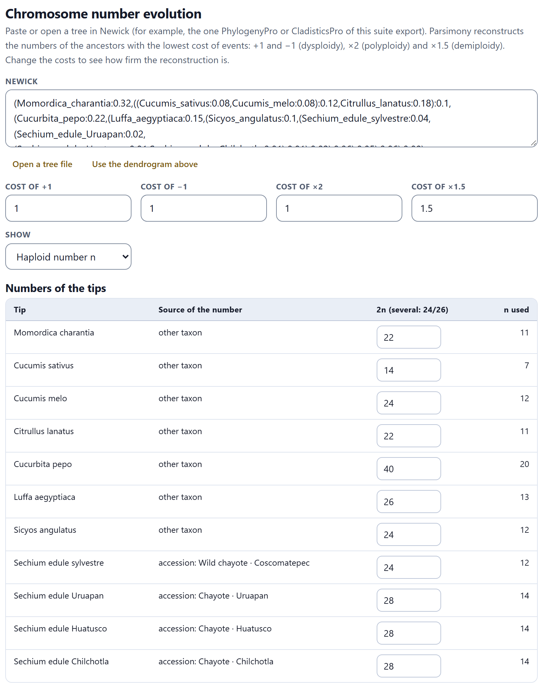
Figure 8.9. The illustrative tree of the example, with eleven tips, and the Numbers of the tips table: the seven taxa take their 2n from “Other taxa” and the four Sechium tips, from the accessions.
The Numbers of the tips table says where the number of each tip comes from: from an accession (by name, by taxon or by the correspondence the example brings), from an other taxon, typed here or no number. In the 2n (several: 24/26) column you can type the number by hand, or several separated by a slash when the species has more than one cytotype; what you type overrides what comes from the accessions, and erasing it restores the automatic one. The last column gives the n used. An odd 2n has no whole haploid number and is left out, with a warning; a tip without a number is treated as unknown.
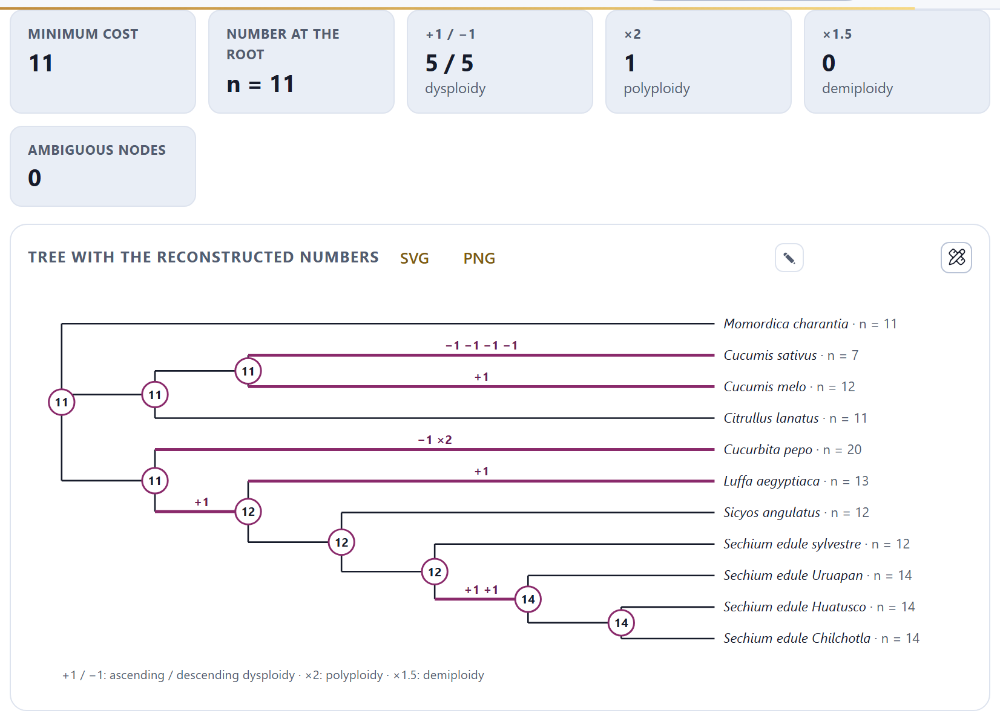
Figure 8.10. With the default costs, the most parsimonious history costs 11: five +1 events, five −1 and one duplication, on the branch of Cucurbita pepo (−1 and ×2: from n = 11 to 10 and to 20). The root is n = 11; the ancestor of Sechium and Sicyos, n = 12, and the cultivated accessions rise to n = 14 with two +1 events.
The figures above the tree are the Minimum cost, the Number at the root, how many events of each kind there are in the history shown and the Ambiguous nodes, those with more than one equally parsimonious number. On the tree, each node carries its number in a circle, the branches with events are highlighted and labeled with them, and the ambiguous nodes have a dotted border and their other optimal numbers below: the tree shows one of the optimal histories, not the only one.
▸Worked example · how firm the reconstruction is
Raise the Cost of ×2 from 1 to 3. The minimum cost becomes 11.5: the duplication disappears and the history uses one demiploidy and ten one-by-one events (six +1 and four −1), and four ambiguous nodes appear. The root stays at n = 11. What does not change when you move the costs is the firm part of the reconstruction; what changes depends on assumptions and should be reported as such.
θTheory in brief · Sankoff parsimony
The cost of going from one number to another is the cheapest sequence of events that achieves it: from 7 to 12, five +1 or one duplication and two −1, whichever costs less with the chosen costs. The algorithm runs through the tree from the tips to the root computing, for each node and each possible number, the minimum cost of what hangs from it; the root keeps the number of lowest cost, and from there it descends choosing an optimal number at each node. Parsimony does not use branch lengths or give probabilities: that is what the models of Mayrose et al. (2010) are for.
8.6Map of cytotypes
The accessions and taxa with coordinates, as points colored by their 2n on a grid of latitude and longitude.
The coordinates of an accession are typed in its record, in Block 2; those of the other taxa, in the Latitude and Longitude columns of their table. The app brings no maps of others: with Load an outline (GeoJSON) you can add one of your own (a state, a basin), and Remove the outline takes it away. The legend gives one color for each 2n, and gray for the rows without a number.
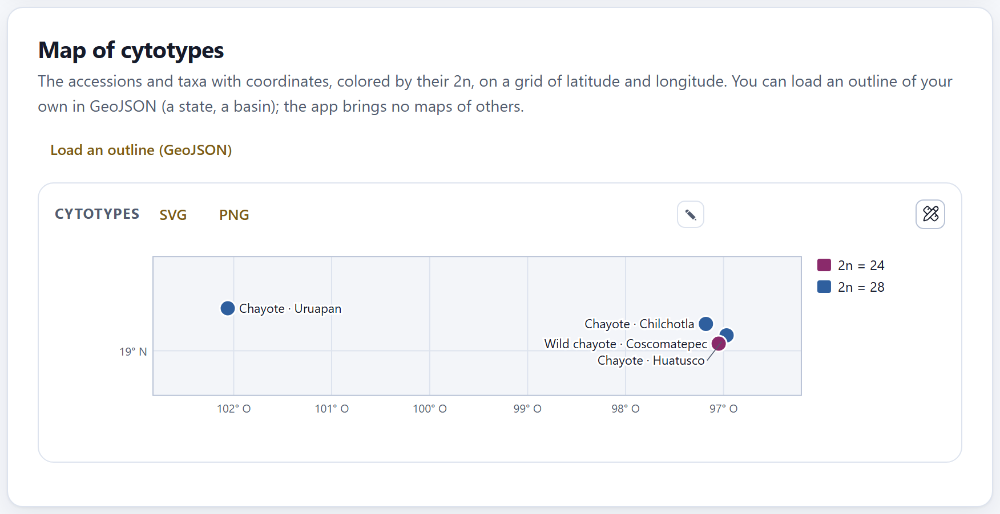
Figure 8.11. The four localities of the example, between 97 and 102° W and near 19° N: three with 2n = 28 (Huatusco, Chilchotla and Uruapan) and the wild one from Coscomatepec with 2n = 24. The other taxa have no coordinates and do not appear.
Reading rules for the block
✓Decision rule
If the cophenetic correlation is ≥ 0.8
then the dendrogram summarizes the distances well; if it is lower, read it with care or use the biplot.
If some rows do not have every variable
then keep Incomplete rows at Left out (only rows with every variable), or choose only the variables that every row has; comparing each pair with what it shares mixes different distances.
If two variables say the same thing (2n and x in diploids)
then they weigh double in the distance: remove one.
If a component has eigenvalue 0
then there are redundant variables; do not interpret it.
If the root or an event changes when you move the costs
then that part of the reconstruction depends on assumptions.
If there are ambiguous nodes
then the tree shows one of several equally good histories.
Guides for interpretation, not laws.
✕When something goes wrong
“At least three accessions or taxa with data are needed to compare.” Add accessions with a karyotype or counts, or taxa in “Other taxa”. With the default option of Incomplete rows, only the rows with every variable count: turn off the variables they lack or change the option.
“None of the chosen variables is in every row.” With All, with the variables every row has no common variable is left; choose another option or change the variables.
“These pairs share no variable: …” Two rows have no chosen variable in common; remove variables or complete the data.
“Choose at least one variable.” All the chips are off.
A tip of the tree has “no number”. Its name does not match any accession or taxon: type its 2n in the tips table or correct the name (underscores in the Newick count as spaces).
Error reading the Newick. The message says what is missing (“A closing parenthesis is missing in the Newick.”) or what is left over at the end.
The map is empty. No row has latitude and longitude.
“The file is not valid GeoJSON.” The outline must be a GeoJSON object (a collection, a feature, a polygon or a line).
9
Chapter nine · Block 9
Teaching
The block for the classroom and for beginners: a mitosis and meiosis simulator that asks you to count before it gives the answer, a karyotype exercise on a made-up metaphase that grades itself, a self-assessment with explanations, an illustrated glossary and a practical sheet ready to print. It needs no data and does not touch the project: it works the same with an example open or with nothing at all.
9.1Mitosis and meiosis step by step
9.2Exercise: build the karyotype
9.3Self-assessment
9.4Illustrated glossary
9.5Practical sheet: chromosomes in root tips
Block 9 has five cards, which you go through from top to bottom or from the In this block list on the right. Nothing you do here changes the project: you can open it halfway through an analysis, practice and go back to the block where you were without losing anything. The figures of the simulator and of the exercise download as SVG or PNG and are edited with the studio and the editor ✎, like those of any other block (Section 10.3).
9.1Mitosis and meiosis step by step
A drawing of the cell that moves forward phase by phase, with a text that explains what happens and a hidden answer that says what to count.
At the top you choose the Division—Mitosis or Meiosis—and the number of Pairs (n), from 1 to 6 (3 on opening). Each pair has its own length and its centromere in another place, so they can be told apart, and they come in two colors: blue those from the father and vermilion those from the mother. In meiosis two more controls appear: the Crossing-over checkbox, on when the block opens, and the Another random orientation button, which draws again which pole each bivalent faces in metaphase I and each chromosome in metaphase II.
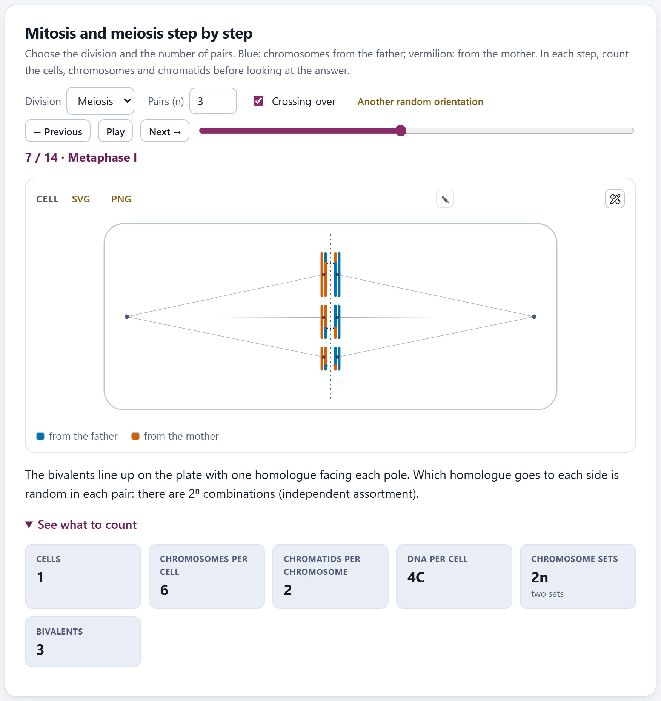
1234567
Figure 9.1. Meiosis with three pairs, at step 7 of 14, metaphase I: each bivalent on the plate with one homolog facing each pole. With the answer open, the cell has 6 chromosomes of 2 chromatids, 4C, two sets (2n) and 3 bivalents.
1Division. Mitosis (7 steps) or meiosis (14 steps).
2Pairs (n). From 1 to 6; 2n is twice that.
3Another random orientation. Only in meiosis, together with Crossing-over.
4Previous, Play, Next. Go through the steps one by one or on their own.
5Slider. Jumps to any step; below it, its number and name.
6Cell. The drawing of the step, downloadable as SVG or PNG.
7See what to count. The answer, closed until you open it.
← Previous and Next → move one step; Play advances on its own, one step every 1.8 seconds, and becomes Pause while it runs; it stops at the last step or when you touch ← Previous, Next →, the slider or the Division. The slider takes you straight to a step, and the line below says where you are: “7 / 14 · Metaphase I”. Under the drawing, a paragraph explains the phase.
The steps
Mitosis has seven: Interphase (G2), Prophase, Prometaphase, Metaphase, Anaphase, Telophase and Cytokinesis. Meiosis has fourteen: Interphase (G2); prophase I in its five stages—leptotene, zygotene, pachytene, diplotene and diakinesis—; Metaphase I, Anaphase I and Telophase I; Prophase II, Metaphase II, Anaphase II and Telophase II; and the Tetrad. Interphase is drawn in G2, with the DNA already replicated, so that from the start each chromosome has two chromatids.
What to count
The card asks you to count before looking. When you open See what to count, the boxes Cells, Chromosomes per cell, Chromatids per chromosome, DNA per cell (in C-values) and Chromosome sets (2n or n) appear, and, from pachytene to metaphase I, Bivalents. In the anaphases the chromosome box adds how many go to each pole. The figures are the textbook ones for the chosen number of pairs, not a count of the drawing.
Table 9.1. What the app gives at the key steps, with n pairs (2n = 2n chromosomes)
Step
Cells
Chromosomes per cell
Chromatids
DNA
Sets
Interphase (G2) to metaphase
1
2n
2
4C
2n
Anaphase and telophase (mitosis)
1
4n (2n to each pole)
1
4C
2n
Cytokinesis
2
2n
1
2C
2n
Prophase I to metaphase I
1
2n (n bivalents)
2
4C
2n
Anaphase I
1
2n (n to each pole)
2
4C
2n
Telophase I to metaphase II
2
n
2
2C
n
Anaphase II
2
2n (n to each pole)
1
2C
n
Telophase II and tetrad
4
n
1
1C
n
θTheory in brief · why meiosis reduces and recombines
In anaphase I the homologs separate, not the chromatids: each pole receives n chromosomes, still with two chromatids, and that is where the number is halved. Which homolog goes to each pole is decided at random in each pair (independent assortment), which gives 2n possible combinations; crossing-over in pachytene, visible as a chiasma in diplotene, also mixes segments of non-sister chromatids. Anaphase II finally separates the chromatids, as a mitosis does.
The simulator follows a schematic model of its own: with Crossing-over on there is one chiasma per bivalent, in the long arm three times out of four, between the second chromatid of one homolog and the first of the other, and the recombinant chromatids keep both colors to the end. With the checkbox off, the chromosomes pass whole, in a single color.
Figure 9.2. The last step of meiosis with three pairs: four cells with 3 chromosomes of one chromatid (1C, n). Below, the app says that with n = 3 there are 8 combinations without crossing-over and what each cell received: cell 3 received the three paternal pairs; cell 1, the maternal pair 1 and recombinant pairs 2 and 3.
At the Tetrad, the answer adds a list of what each of the four cells received: for each pair, whether the chromosome is paternal, maternal or recombinant. It is the most direct way to show in class that the four products of a meiosis differ from one another and from the mother plant.
9.2Exercise: build the karyotype
A simulated metaphase of a made-up karyotype, with numbered chromosomes, to pair, order and classify by hand before asking for the grade.
The exercise draws the metaphase with the same engine that makes the images of the examples: stained chromosomes with their centromere, a resting nucleus in a corner and a 5 µm bar. Each chromosome has a number beside it, and below, under Cut-outs, the same chromosomes appear straightened along their axis and at the same scale as the image, each with two menus: pair and type (m, sm, st or t). The Pairs menu chooses how many pairs the karyotype has—4, 5 (on opening) or 6—and Another metaphase makes up a new one.
Figure 9.3. The metaphase the block opens with: five pairs, ten chromosomes in the order they appear in the image. The cut-outs keep their relative size, and the centromere shows as the constriction of each one.
The task has three parts: join the homologs by giving them the same pair number; number the pairs from the longest (1) to the shortest; and classify each chromosome after Levan et al. (1964) by its arm ratio r = q / p (Chapter 3: m up to 1.7, sm up to 3.0, st up to 7.0, t above). When you are done, Check.
iThe opening exercise is always the same
When the block opens, the app always draws the same metaphase (that of seed 20261007), so that a whole group can work on the same image and compare answers. Another metaphase and changing the number of pairs draw a new one each time. The figures in this section are those of the opening metaphase.
How it is graded
Check shows three boxes and a list of remarks, and marks each cut-out: with a green border if the chromosome is in its pair, with the right pair number and the right type; with an amber border if the type is wrong or the chromosome did not end up with its homolog; and with a dashed amber border if pair and type are right but the pair takes another number. A line under the buttons recalls it: “When checked, a green border marks a cut-out solved right; an amber one, a wrong pair or type; and a dashed amber one, a well-formed pair that takes another number.”
Pairs well formed: how many pairs have their two members, and only them, with the same number.
Pairs well numbered: of the well-formed ones, how many also carry the number their length calls for (“1 = the longest”).
Right types: how many chromosomes, out of all, are classified correctly.
Figure 9.4. The exercise answered with two deliberate mistakes: chromosomes 5 and 10 were given as sm and pairs 4 and 5 were numbered the other way round. Result: 5 / 5 pairs well formed, 3 / 5 well numbered and 8 / 10 right types. Numbers 5 and 10 have an amber border (wrong type); 6 and 9, which form pair 5 correctly but were numbered 4, a dashed amber one.
The remarks say why. A wrong type gives a warning with the true arm ratio: “Number 5 is subtelocentric (st): its arm ratio is r = 4.07, not sm.” Two separated homologs give “Chromosomes … are homologs (pair …, … µm long).”; a well-formed pair with the wrong number, “Chromosomes 5 and 10 form a right pair, but by its length it is pair 4.” With everything right, the app writes “Right karyotype! You can see the solution with the measurements.”
See the solution orders the cut-outs by pairs and writes under each its number, its type, its mean length and its arm ratio, and at the end the karyotype formula.
Figure 9.5. The solution of the opening metaphase: pair 1, m, 7.11 µm, r = 1.14; pair 2, sm, 5.60 µm, r = 2.52; pair 3, st, 4.35 µm, r = 5.05; pair 4, st, 3.46 µm, r = 4.08; pair 5, m, 2.62 µm, r = 1.30. Formula: 2n = 10 = 4m + 2sm + 4st.
▸Why the exercise has a single answer
The karyotype is made up with arm ratios far from the Levan limits (m between 1.10 and 1.45, sm between 2.0 and 2.6, st between 3.8 and 5.5), and each pair is 20 to 25% shorter than the one before; pair 1 is always metacentric. The two homologs differ from each other by at most 2% in each arm, as in a good preparation. So no chromosome sits on the border between two classes and no two pairs are confused by length: what is assessed is the ability to measure by eye, not luck. In a real preparation the limits do get close, and that is what Blocks 2 and 3 are for.
9.3Self-assessment
Multiple-choice questions, with four options each and an explanation that appears on grading.
The buttons at the top are the topics: Karyotype, Asymmetry, Meiosis, Ploidy and genome, Banding and FISH, Techniques and Comparison; on opening they are all on, and a click turns one off or on. The Questions menu chooses how many come up—5, 10 (on opening) or 15—and New questions draws another set. Each change of topic or number also builds a new set.
The bank has 33 questions: 28 fixed ones—4 on karyotype, 3 on asymmetry, 6 on meiosis, 6 on ploidy and genome, 4 on banding and FISH, 3 on techniques and 2 on comparison—and 5 generated with new numbers each time: the centromeric index of a chromosome with given arms, the Levan class of an arm ratio, the 2C of a sample from the cytometer channels and a standard, the ploidy level of a 2n with a given base number, and the combinations of paternal and maternal chromosomes a gamete can receive. The options are shuffled in each set.
Figure 9.6. The first three of a set of five questions from all topics, always answered with the first option and graded. Number 1 is right and framed in green; 2 and 3 are wrong, in amber, with the right option highlighted. Over the five there were 3 right answers: the Right answers box reads 3 / 5, 60 %.
Grade marks each question, highlights the right option and adds its explanation, which begins with “Right.”, “No.” or “No answer.”. The Right answers box gives the total and the percentage, and turns to a warning color below 70%. You can change answers and grade again; the questions do not change until you ask for others.
9.4Illustrated glossary
Thirty-five cytogenetic terms, from Allopolyploid to Univalent, in alphabetical order, each with its definition and, where it helps, a drawing made by the app: the four chromosome types with their centromere in place, the satellite, the chiasma and the meiotic configurations (ring and rod bivalents, trivalent, quadrivalent, univalent). Search a term filters as you type; it searches the term and the definition, in English and in Spanish, and ignores accents and capitals.
Figure 9.7. The first twelve terms of the glossary, from Allopolyploid to Dysploidy. Bivalent, centromere and chiasma carry their drawing.
The app’s glossary is that of the interface; Appendix C of this manual also gathers the terms used by the other chapters.
9.5Practical sheet: chromosomes in root tips
A laboratory sheet for obtaining mitotic metaphases by squashing root meristems, assembled with the times and temperatures of published protocols and ready to print.
You choose three steps of the protocol and the material; the preview below changes at once:
Table 9.2. The options of the practical sheet (the first of each menu is the one shown on opening)
Menu
Option and conditions
Source
Pretreatment
8-hydroxyquinoline 0.002 M, 3–4 h at 16–18 °C
Sharma and Sharma 1980
Colchicine 0.05–0.1 %, 2–4 h at room temperature (toxic: gloves)
Sharma and Sharma 1980
Ice water (0–4 °C), 18–24 h
Darlington and La Cour 1976
Saturated α-bromonaphthalene, 2–4 h (in a fume hood)
Guerra and Souza 2002
Hydrolysis
1 N HCl at 60 °C, 8–12 min (with orcein or carmine)
Sharma and Sharma 1980
5 N HCl at room temperature, 20–60 min (for Feulgen)
Guerra and Souza 2002
Cellulase and pectinase mix (2 % and 20 %) at 37 °C, 1–2 h (for banding or FISH)
Schwarzacher and Heslop-Harrison 2000
Staining
2 % aceto-orcein, 10–30 min
Darlington and La Cour 1976
1 % acetocarmine or propionic carmine, 10–30 min
Sharma and Sharma 1980
Schiff’s reagent (Feulgen), 1–2 h in the dark; then a drop of 45 % acetic acid
Guerra and Souza 2002
In the Material (species) field you type the species, which appears in the header of the sheet. The menus show only the name of the reagent; the full conditions go on the sheet.
Figure 9.8. The sheet with the opening options (8-hydroxyquinoline, 1 N HCl at 60 °C and aceto-orcein) and Zea mays as material: the header for name, date and group, the aim and the materials. The preview goes on with the procedure.
The sheet contains, in this order: the header (Name, Date, Group, Material); the aim; the materials; the procedure in eight steps—roots, pretreatment, fixation in Carnoy 3:1, rinse, hydrolysis, staining, squash and observation—each with its source in parentheses; the safety measures (the acids are corrosive; colchicine and α-bromonaphthalene, toxic; Schiff’s reagent and fixatives are kept closed and labeled); an eight-row record table (slide, cell, phase, 2n counted, notes); two boxes to draw a metaphase and an anaphase; four questions; and the references of the chosen steps. With the opening options there are four: Darlington and La Cour (1976), Guerra and Souza (2002), Sharma and Sharma (1980) and Singh (2017). No reagent carries a brand name.
Print the sheet opens the print dialog with the sheet alone, without the app interface (from there it can also be saved as PDF). Download (HTML) saves it as cytogenetics_practical.html, a page that opens offline and can be edited before handing it out.
!The sheet does not replace the laboratory rules
The times and temperatures are those of the cited protocols and work with many species, but each material has its own sweet spot: pretreatment and hydrolysis are usually adjusted with a few trial preparations. The safety measures on the sheet are the minimum; those of the laboratory where you work, above all on handling and disposing of colchicine and α-bromonaphthalene, take precedence.
✓How to use the block in a class
If you are introducing cell division…
use the simulator with 2 or 3 pairs and ask for a count before opening See what to count.
If you are explaining gamete variation…
go to the Tetrad with and without Crossing-over, and repeat with Another random orientation.
If the whole group must work on the same metaphase…
keep the opening one, which is the same on every computer; for individual tasks, Another metaphase.
If you are preparing a short quiz…
choose the topics of the unit and 5 or 10 questions; the generated ones change their numbers in each set.
If the practical goes on in the laboratory…
print the sheet with the reagents you have and, with the photos, measure in Block 2.
These are guides for planning, not recipes: the pace and level of the group come first.
✕When something goes wrong
The crossing-over controls do not appear. They exist only in meiosis: change the Division. The self-assessment says “Choose at least one topic.” You turned all topics off; turn one on. The glossary says “No term matches.” Clear or shorten the search. “Print the sheet” does not open the dialog. If the browser does not allow printing from the page, the app opens the sheet in a new tab to print it from there; if that fails too, use Download (HTML). I lost my exercise answers.Another metaphase and the Pairs menu make up a new karyotype and clear the answers.
10
Chapter ten · Block 10
Figures and report
The end of the route: what goes into the thesis, the paper or the file. The block gathers every figure the other blocks drew, among them the karyogram cut out of the image; lets you download every table of data and results; drafts the methods with their references, in Spanish or in English; assembles a report to print; and packs everything into a .zip file so that someone else can repeat the analysis.
10.1Project report
10.2The reproducible package
10.3Figures, the studio and the editor
10.4Tables
10.5Written methods
Block 10 has four cards: Project report, Figures, Tables and Written methods. Nothing is computed here for the first time: everything comes from what the project already has, with the settings you left in each block. If you change something in another block and come back, Block 10 is rebuilt with the change. The figures of this chapter were made with the chayote example (sechium), which has four accessions, signals, coordinates and a tree; the karyogram, with the maize example (zea), the only one with images.
10.1Project report
A document with the summary of each accession, the methods, the result tables, the checked figures and the references, ready to print or to save as a page.
The card has two fields: Title, which brings the title of the project (with an example, that of the example), and Authorship, empty on opening. Both are saved in the project. Below, four boxes say what will go in: the Accessions, the Figures (and how many are checked for the report), the Tables and the References cited in the methods.
Figure 10.1. The report of the chayote example: 4 accessions, 11 figures (all 11 in the report), 8 tables and 21 references cited.
Three buttons produce it:
View and print the report opens the browser’s print dialog with the report alone, without the interface; from there it is printed or saved as PDF. If the browser does not allow printing from the page, the report opens in a new tab.
Download the report (HTML) saves it as a page (report_ plus the title) that opens offline in any browser.
Download the reproducible package (.zip) builds the package of Section 10.2.
What the report contains
The report starts with the title, the authorship, the date and the version of the app (“CytogeneticsPro 1.0.0”). If the project is an example, a note warns that the data are simulated. These parts follow, each only if the project has something to fill it with:
Table 10.1. The parts of the report
Part
What it holds
Summary
One row per accession: taxon, 2n (the mode of the counts, or that of the karyotype), formula, haploid length, MCA, CVCL, Stebbins category and 2C in pg.
Methods
The paragraphs of Section 10.5, in the interface language.
Results
The karyotype of each accession (pair, p, q and length with their deviation, relative length, CI, r and type); the asymmetry indices; meiosis (cells, chiasmata per cell and per bivalent, recombination index, % with multivalents); pollen viability with its Wilson interval; DNA content (2C, 1Cx and Mbp); the Allium test; the sites per set of each probe; and the distance matrix of the comparison.
Figures
Those checked in the Figures card, numbered, in the colors of the light theme.
References
The works cited in the methods, in alphabetical order.
With the chayote, the results bring the karyotype of the four accessions, the asymmetry, the bands and signals and the comparison; there is no meiosis, cytometry or Allium test because the example does not have them.
10.2The reproducible package
A .zip file with the project and everything the app computed with it: what a reviewer, a coauthor or your thesis advisor needs to repeat the analysis.
While it is built, the app shows the “Building the package” wait with its progress, because each figure is also converted to PNG; when it is done it downloads the file and says “Package ready: … files.” With the chayote, the package is called cytogeneticspro_Sechium_edule_three_cultivated.zip and holds 35 files:
Table 10.2. The contents of the package of the chayote example
File
What it is
README.txt
In Spanish and English: what the package is, how to repeat the analysis, the list of files and the citation of the app.
project_Sechium_edule_three_cultivated.json
The full project, with the images inside; it opens with Open a project (Ctrl + O).
report.html
The report of Section 10.1.
metodos_es.txt · methods_en.txt
The written methods in both languages.
tables/ (8 .csv files)
Every table of Section 10.4.
figures/ (11 .svg and 11 .png)
Every figure of the gallery, checked or not, as vector and as image at twice the resolution.
To repeat the analysis the project file is enough: when you open it, the app recomputes every result from the saved data and settings. The tables, figures and report are for anyone who wants to check without opening the app. The files go into the .zip uncompressed: texts and SVGs weigh little, and the package opens with any archive program.
iThe package does not leave your computer
Everything is built in the browser and downloaded to your downloads folder. If the photomicrographs are not yours or are unpublished, remember that they travel inside the project file: share it with the same care as the images.
10.3Figures, the studio and the editor
The gallery of every figure of the project, each with its downloads, its report checkbox and its two editing tools.
The gallery brings together, in this order, the idiogram of each accession with a karyotype (haploid, in µm, in color and with its landmarks), the cut-out karyogram of each accession with traced images, the Stebbins categories, the MCA × CVCL plot (with more than one accession), the cytometer histograms of Block 6 and the comparison figures of Block 8. With the chayote there are 11: the four idiograms, Stebbins, MCA × CVCL, the dendrogram, the principal component biplot, the parallel idiograms, the tree with the chromosome numbers and the map of cytotypes. If the project has no figures, the card says “The project has no figures yet: open an example or measure cells in Block 2.”
12345
Figure 10.2. The first figure of the chayote gallery: the idiogram of Chayote · Huatusco, 2n = 2x = 28 = 18m + 2m-sat + 8sm, with the satellite of pair 1 and the 45S rDNA, 5S rDNA and CMA⁺ signals.
1Check all · Uncheck all. All the figures go into or out of the report.
2SVG · PNG. Download the figure as vector or as image.
3In the report. The checkbox of each figure.
4Editor ✎. The fine-editing panel of this figure.
5Figure studio. The figure full screen, to adjust and export it.
Each figure downloads with SVG, a vector that scales without losing sharpness and can be edited in any drawing program, or with PNG, an image at three times the screen resolution. Both come out in the colors of the light theme even if the app is in the dark one. The In the report checkbox decides whether the figure goes into the report; the Figures box of the report card updates at once. The checkboxes are not saved in the project: when you open another one, they are all checked again.
The cut-out karyogram
The karyogram is the classic figure of a cytogenetics paper: the chromosomes of one cell cut out of the photograph, straightened and arranged in pairs. The app builds it on its own with the first cell of the accession that has an image and all its chromosomes traced, with their centromere, and grouped in Block 3. It straightens each chromosome along its trace, puts the two homologs together, orders the pairs like the karyotype, aligns the centromeres on a dotted line and writes the number and type of each pair underneath. The pairs go in rows of seven (of eight, if there are more than twelve), with a scale bar at the end.
Figure 10.3. The karyogram of cell 1 of the maize example: ten pairs in two rows, with the heterochromatin knobs visible as dark bands, the satellite of pair 6 (sm-sat) and a 5 µm bar. At the top, the title: “Landrace maize · Texcoco · Cell 1 (image) · 2n = 2x = 20 = 8m + 10sm + 2sm-sat”.
If no cell of an accession meets the conditions—it has no image, or some chromosome lacks its trace or centromere—that accession has no karyogram; the idiogram, which only needs the measurements, does appear.
The figure studio
The pencil-and-ruler button, in the corner of each figure, opens the figure studio, the same in every application of the suite: the figure in the center, at its print size, and the controls on the right. Below the figure you read its final size; above, a dotted line marks a journal width.
Figure 10.4. The Huatusco idiogram in the studio. Below, its final size: 85 × 42.1 mm at 600 dots per inch, 2008 × 995 pixels; the dotted guide marks the one-and-a-half-column width (114 mm). On the right, the settings and the fine editing.
The top bar undoes and redoes, zooms the figure in and out (Fit makes it the size of the screen), applies one-click Presets and saves your own, and with Export downloads it at the width of one or two journal columns or a free one, at the resolution you ask for, as PNG, SVG, vector PDF or TIFF. On the right, Search a control… finds any setting by its name; Figure settings gathers the figure’s own controls in its block (in the idiograms of Block 10, which have none, it says “This figure has no options of its own: use the studio’s (palette, text, size) or the app’s editor if it has one.”); and Fine editing of this figure is the editor ✎ inside the studio. On the figure, a click takes you to the controls of that part and a double click on a text lets you change it. Close studio goes back to the app.
The editor ✎
The ✎ button opens, without leaving the page, a floating panel that works on that figure. Its tabs are General, Axes & grid, Series, Legend, Texts and Annotations.
Figure 10.5. The editor ✎ on the Huatusco idiogram, on the General tab: title, subtitle and footnote inside the figure; font, size, color and weights; background and frame.
On General you type a Title (empty = none), a Subtitle and a footnote inside the figure, and you adjust the title size and alignment, the Font family, the Size of every text, the Color of every text, the Line weight, the Point size, the Background and a Border around the whole figure. The other tabs change the axes, the colors of each series, the place of the legend, any text and the annotations: notes, panel letters and arrows dragged on the figure, and lines or bands at a value of the axis. Undo everything on this figure returns it to how the app drew it; Copy the style to every figure applies the same settings to the others; and Export downloads it. The edits are remembered in the browser and applied again when the figure is redrawn.
iThe fonts are those of your computer
The figures use the fonts installed on your computer; the app downloads none. If you send an SVG to someone else, it may show in another, similar font on their computer. To make it look the same everywhere, export as vector PDF or PNG from the studio.
10.4Tables
Every table of the project, with its number of rows and columns, and two buttons: CSV, comma-separated, and TSV, tab-separated. Both use the decimal point and are saved in UTF-8 with a byte order mark, so that a spreadsheet reads accents and the µ correctly; the help of the card sums it up: “ready for a spreadsheet or a statistics program”.
Figure 10.6. The eight tables of the chayote example. The measurements are 324 rows, one per measured chromosome; the karyotype, 54, one per pair and accession (14 + 14 + 14 + 12). The comparison matrix has the 11 taxa, but the distance matrix only the 4 accessions that have every variable (Section 8.2, Incomplete rows menu).Figure 10.7. The tables of the polyploid series example, which has meiosis, pollen and cytometry: 150 cells with their configurations, 36 rows of abnormalities by phase, 6 of tetrads, 9 pollen plants, 45 2n counts and 9 cytometer runs.
Table 10.3. The tables a project can have and their file
Table
File
Columns
Accessions
accessions
name, taxon, locality, latitude, longitude, x
Measurements per chromosome
measurements
accession, taxon, cell, chromosome, p, q, satellite, satellite arm, unit (µm or px) and source (trace or typed)
Karyotype (pairs)
karyotype
pair, cells, p, q, length, relative length and centromeric index with their deviations, arm ratio, class, satellite and unit
Asymmetry indices
asymmetry
2n, THL and the twelve indices, the Stebbins category and the computation mode
Meiotic configurations per cell
meiosis_configurations
accession, plant, cell and the number of each configuration (I, rod and ring II, III, IV, V, VI)
Abnormalities by phase
meiosis_abnormalities
accession, plant, phase, normal and each abnormality
Tetrads
tetrads
accession, plant, normal, with micronuclei, dyads, triads and polyads
Pollen viability
pollen
accession, plant, viable and inviable
2n counts
counts
accession, cell and 2n
Flow cytometry
cytometry
accession, sample, standard, peaks and CV of standard and sample, 2C, 1C and 1Cx in pg and 2C in Mbp
Allium test
allium_mitosis
treatment, replicate, cells in each phase and each aberration
Bands and signals
signals
pair, homolog, arm, position, size, probe, cell and region
Comparison matrix
comparison_matrix
the Block 8 variables for each accession or taxon, with their source
Distance matrix
distances
the square matrix of the rows that entered the clustering
A table appears only if the project has its data: with the maize example, which has no comparison, there are seven. Each block also has its own downloads (the karyotype in Block 3, the indices in Block 4, the record tables of Blocks 5 to 8); those here are the same, together. In the Spanish interface the file names and column headers are in Spanish.
10.5Written methods
A draft of the methods section with what the project has, with each method cited by author and year and the full references at the end.
The Language menu chooses Español or English; on opening it follows the interface language, and once you change it, it stays as you left it. Copy puts the text on the clipboard (“Methods copied.”) and Download (.txt) saves it as metodos.txt or methods.txt.
Figure 10.8. The start of the methods of the chayote example: the simulated-data note, the measurement (without images: “The length of both arms and, when present, of the satellite was recorded…”), the karyotype with the formulas and haploid lengths of the four accessions, and the asymmetry with MCA, CVCL, CVCI and the Stebbins category of each one.
The paragraphs come from what the project has, one per topic, and only if there are data: the measurement (how many chromosomes, cells and accessions, and how they were measured); the karyotype (how homologs were paired, what was computed, the classification with its limit convention, how the fundamental number was counted and the formulas); the asymmetry (the recommended indices, the others and the type of deviation); the chromosome number (the mode of the counted cells); meiosis, cytometry and the Allium test; bands and signals; the comparison (variables, distance, clustering, cophenetic correlation, components and evolution of the number); and a final paragraph with the version of the app. With the chayote there are eight paragraphs and 21 references. The comparison paragraph, with the opening setting of Incomplete rows, says that 4 accessions were compared, adds “Only the rows with every variable were included.”, gives the cophenetic correlation r = 0.870 and 93.0% of the variance in the first two components, and says that the minimum cost of the evolution of the number was 11, with n = 11 at the root. If you choose to compare each pair on the variables it shares, the paragraph says so: “Each pair was compared on the variables both have.”
The measurement paragraph changes with where the measurements came from. Without images, as in the chayote, it says “The length of both arms and, when present, of the satellite was recorded; the length of the satellite was added to its arm.” With images it describes the tracing on the photomicrographs, and if only some cells have them it says so; in the maize example: “100 chromosomes were measured in 5 metaphase cells of 1 accession (Zea mays); one of them was measured on photomicrographs calibrated with a scale bar and the other 4 from typed measurements.” Scientific names go in italics, with the rank words in roman: Sechium edule subsp. sylvestre.
!It is a draft: always check it
The app writes what was done with the data it has, not what it does not know: where the material came from, how many plants were used, which microscope and camera, the pretreatment and the stain. Nor does it know why you chose a classification or an index. Complete the text with that, remove what you will not report and adapt the wording to the journal. If the project is an example, the first line warns about it: delete it only when the data are yours.
✓Before you submit
If the journal asks for a figure width…
export from the studio at that width and at the resolution it asks for (300 or 600 dpi).
If you publish the karyogram…
make the best metaphase the first cell: the app cuts out the first one that has all its chromosomes traced and grouped.
If the report should carry only some figures…
Uncheck all and check the ones you want before printing.
If you use the written methods…
complete the material, the equipment and the reasons for your choices.
Always…
keep the reproducible package with the thesis or the paper: it is the proof of how each number was obtained.
These are guides for submitting, not laws: the instructions of the journal or of your graduate program come first.
✕When something goes wrong
“The project has no figures yet”. Open an example or measure cells in Block 2; without a karyotype there are no idiograms. “There are no tables yet.” The project is empty. The karyogram does not appear. No cell of the accession has an image with all its chromosomes traced, with centromere and grouped in Block 3. “Could not copy; use “Download”.” The browser did not allow the clipboard: download the .txt. “Could not build the package: …” It is usually a lack of memory with very large images; try again with other tabs closed, or save the project with Ctrl + S and download the tables and figures separately. The report does not print. Use Download the report (HTML) and open it to print from there.
A
Appendices
Appendices
What is worth having at hand and did not fit in any chapter: which files the app reads and writes and how it reads them, the decision rules of the ten blocks gathered in one place, the cytogenetic vocabulary the manual uses, what to do when something does not work, the license of the tool with the way to cite it, and the 48 references of the app.
AThe files the app reads and writes
BThe rules, gathered
CGlossary
DWhen something does not work
EThe tool: license and how to cite it
FReferences
AThe files the app reads and writes
CytogeneticsPro runs in the browser and sends nothing to any server: every file comes in from your computer and goes out to the downloads folder. The app does not save the project by itself: if you close the tab without saving it, the work of that session is lost.
A.1 · What the app reads
What
Where and extension
How it reads it
Project
Open a project (home page, Block 2, Ctrl + O) · .json
A file written by the app, with "app": "CytogeneticsPro"; any other JSON is rejected. It replaces the open project and recomputes everything.
Images
Block 2 · .png, .jpg, .jpeg
Several at once; each image is a new cell of the chosen accession (or of a new one). It warns if one is over 25 MB. They are saved inside the project.
Measurements
Block 2, Paste measurements · pasted text
One row per chromosome, in microns; columns by name or by number (below). The measurements CSV the block itself writes comes back in whole, with its taxon and its unit.
Record tables
Blocks 5 to 8, Import CSV or pasting over the table
A CSV with headers: each header is matched against the keys, the Spanish and English names and the aliases of the columns, ignoring accents, capitals and symbols. A block copied from a spreadsheet is pasted over the active cell and adds the rows it needs.
Pollen fertility
Block 5 · .csv
The CSV of PalynoPro, the palynology app of the suite, with the columns landrace_code, n_granos_completos and pct_atipico; the inviable grains are computed as n × % / 100, rounded.
Cytometer histogram
Block 6 · .csv, .tsv, .txt
Two columns (channel, number of nuclei) or one column of event values, which the app bins into 512 classes; with or without a header.
Tree
Block 8 · .nwk, .newick, .tre, .tree, .txt, or pasted
Newick, with names in single quotes and branch lengths (ignored by the parsimony); comments in square brackets are removed. From a NEXUS file it takes the first tree of the TREES block. The tips are matched by name with the accessions and taxa.
Map outline
Block 8 · .geojson, .json
A GeoJSON of type FeatureCollection, Feature, Polygon, MultiPolygon, LineString, MultiLineString or GeometryCollection, in longitude and latitude.
How texts are read
Separator. It is guessed from the first line with text: if it has a tab, tab; if not, if it has a semicolon, semicolon; otherwise, comma. Quoted fields are respected, and a byte order mark at the start is ignored.
Decimals. Both the decimal point and the decimal comma are accepted (2,35 is read as 2.35). With a decimal comma, separate the columns with semicolons or tabs, which is what spreadsheets in Spanish write.
Empty lines. They are skipped.
The columns of “Paste measurements”
If the first line has some text that is not a number and the p and q columns are recognized in it, it is taken as a header. The names it recognizes (at the start of the header, ignoring capitals):
Column
Headers that name it
Accession
acc, accesión, accession, muestra, sample, población, population
Taxon
taxón, taxon, especie, species
Cell
cél…, cell, placa, plate, metafase, metaphase
Chromosome
crom…, chrom…, núm…, no., #, id
Short arm (p)
p, s, corto, short, brazo corto, short arm
Long arm (q)
q, l, largo, long, brazo largo, long arm
Satellite
satélite, satellite, sat
Satellite arm
brazo…sat, sat…brazo or sat…arm, arm, brazo
Unit
unidad, unit
Without a header, the columns are read by their number: 2 columns, p q (a new cell); 3, chromosome p q; 4, cell chromosome p q; 5 to 7, accession cell chromosome p q [satellite] [arm]. A row without a valid number for p (≥ 0) and for q (> 0) is skipped, and the message says which. A satellite goes on the q arm if the arm column says q, l, largo or long; otherwise, on p. Accessions that do not exist are created with the name the column brings; if the table has a taxon but no accession, one accession is created per taxon, and the taxon is written into the accession. Rows with neither accession nor taxon go to the chosen accession, and a new one is created only if needed: pasting a table that names its accessions does not leave an empty “Accession 1” behind. A cell whose unit column says px (an uncalibrated cell exported earlier) stays in pixels, and the message warns about it: “One cell comes in pixels (not calibrated).”
So the measurements.csv file written by Block 2 (accession, taxon, cell, chromosome, p, q, satellite, satellite arm, unit, source) can be pasted back without losing anything; the source column is ignored.
The report, the methods, each table and the reproducible package (Section 10.2).
any
<name>.svg · .png
Each figure, in the colors of the light theme; the PNG at three times the resolution. The studio also exports PDF and TIFF at the size you ask for.
With the interface in Spanish, the files get Spanish names (mediciones.csv, informe_…, tablas/…). All CSV and TSV files use the decimal point and are in UTF-8 with a byte order mark, so that a spreadsheet reads the accents and the µ; the separator is the comma in CSV and the tab in TSV. The .txt texts also carry the mark.
iWhat the browser remembers
The browser keeps only preferences, not data: the interface language, the light or dark theme, the animations and the edits made with the editor ✎. To keep an analysis, save the project.
BThe rules, gathered
The rules the app applies to classify, warn or decide, with the block where they act. They are the same ones each chapter explains; here they are together to look up at a glance.
B.1 · Chromosome classification (Block 3)
Scheme
Classes and limits
Levan et al. (1964), by arm ratio r = q / p (the default)
m: r ≤ 1.70 · sm: 1.70 < r ≤ 3.00 · st: 3.00 < r ≤ 7.00 · t: r > 7.00. A value exactly on the limit goes to the more median class (r = 1.70 is m; r = 3.00 is sm).
Levan et al. (1964), by centromeric index CI = 100 p / (p + q)
m: CI ≥ 37.5 · sm: 25–37.5 · st: 12.5–25 · t: < 12.5, with the same convention.
Guerra (1986)
m: 1.00–1.49 · sm: 1.50–2.99 · a (acrocentric): ≥ 3.00. The limit goes to the upper class (r = 1.50 is sm; r = 3.00 is a).
Own limits
The r limits you type and one more name than limits.
M and T checkbox
M only with exactly equal arms (r = 1); T, with no short arm (p = 0).
Satellite. Its length is added to that of the arm where it sits; the pair is marked “-sat”.
Fundamental number (NF). Two arms per m and sm chromosome; one per st, a and t, unless you choose to count st with two.
Variation warning. A pair whose length varies by more than 20% among cells (coefficient of variation) is flagged: it may be different condensation or a mispaired homolog.
B.2 · Asymmetry (Block 4)
Recommended indices ★
MCA and CVCI (intrachromosomal) and CVCL (interchromosomal), as recommended by Peruzzi and Eroğlu (2013). The others (TF%, AsK%, Syi, Rec, A1, A2, A, AI, DI) are given to compare with earlier work.
Stebbins categories (1971)
The letter by the ratio of the longest to the shortest chromosome: A < 2; B from 2 to 4 (both ends included); C > 4. The number by the proportion of chromosomes with r below 2: 1 if all; 2 from 0.99 to 0.51; 3 from 0.50 to 0.01; 4 if none.
Standard deviation
Sample (n − 1) by default in CVCL, CVCI and A2; it can be changed to population (n).
Undefined CVCI
If every chromosome is telocentric (0/0), not zero.
DI
With the medians of the short arm and of the length (Lavania and Srivastava 1992).
B.3 · Meiosis (Block 5)
Autopolyploid or allopolyploid?
A hypothesis fits if the χ² test of the observed against the expected configurations gives p ≥ 0.05; classes with fewer than 5 expected are merged with their neighbor. A formula that does not allow some observed configuration (multivalents where only bivalents fit) is rejected without a test. Up to three formulas and eight genomes.
Meiotic index (Love 1951)
Normal tetrads / all × 100; ≥ 90 is read as a stable meiosis.
Pollen viability
Proportion of viable grains with the Wilson and Clopper–Pearson intervals; if the homogeneity test among plants gives p < 0.05, it is better to report them separately.
B.4 · Ploidy and genome size (Block 6)
Chromosome number
The mode of the counted cells; with more than one mode, the app asks you to count more cells. If the mode is not a multiple of x, it warns: aneuploidy, B chromosomes or dysploidy.
Flow cytometry
2C = (G1 channel of the sample / G1 channel of the standard) × 2C of the standard; 1C = 2C / 2; 1Cx = 2C / ploidy level; 1 pg = 978 Mbp.
Peak quality
It warns if some peak has a CV above 5%, if the sample / standard ratio is between 0.85 and 1.18 (the peaks overlap) or if it is above 3 or below 1/3 (the cytometer response may stop being linear).
Allium test
Each treatment is compared with the control, with the Holm correction; a mitotic index below half that of the control is a strong sign of cytotoxicity.
B.5 · Banding and FISH (Block 7)
Position on the arm, from the centromere (0) to the telomere (1): proximal < 1/3; interstitial from 1/3 to 0.8; terminal > 0.8.
Sites per set. A site on both homologs counts one; on only one, half (and it is counted as a heteromorphism), with the same criterion in the pattern of the accession and its regions, in the table of all accessions and in the comparison matrix.
B.6 · Comparison among taxa (Block 8)
Minimums. At least one variable and three accessions or taxa with data; the component analysis needs at least two variables that vary.
Incomplete rows. By default, Left out (only rows with every variable): only the rows with every chosen variable enter the clustering and the components; the others stay in the matrix, in the number tree and on the map, and the app says which are left out and what they lack. All, with the variables every row has uses only the common variables. All; each pair with the variables it shares computes the Gower or the Euclidean distance (rescaled to the total) with what each pair shares; it warns if some pair shares half the variables or fewer, and stops if one shares none. The components put empty cells at the mean.
Ward works with squared distances and gives the heights on the scale of the distance.
Evolution of the number. Sankoff parsimony with the costs of +1, −1, ×2 and ×1.5 that you choose (1, 1, 1 and 1.5 on opening); an odd 2n does not enter the analysis; at least two tips with a number are needed, and the others are treated as unknown.
B.7 · Teaching (Block 9)
Karyotype exercise. Arm ratios far from the Levan limits (m 1.10–1.45, sm 2.0–2.6, st 3.8–5.5); each pair 20 to 25% shorter than the one before.
Self-assessment. The right-answers box turns to a warning color below 70%.
All of them are guides for reading the results, not laws: what you know about your material, the preparation and how it was measured always comes first.
CGlossary
The cytogenetic terms the manual uses, in the sense the app uses them, with the Spanish term that appears in the Spanish interface and manual. The illustrated glossary of Block 9 (Section 9.4) has 35 of them with drawings.
Term
Spanish
Meaning
Accession
accesión
Each sample studied: a population, a variety, a collection. In the app, the group of cells that make up a karyotype.
Acrocentric (a)
acrocéntrico
In the Guerra (1986) scheme, a chromosome with r ≥ 3.00.
Allopolyploid · autopolyploid
alopoliploide · autopoliploide
A polyploid with sets from different species (AABB), which forms mostly bivalents; or from the same species (AAAA), which forms multivalents.
Aneuploidy
aneuploidía
A chromosome number that is not an exact multiple of the base number (2n − 1, 2n + 1).
Arm ratio (r)
razón de brazos
q / p, the long arm over the short one.
B chromosome
cromosoma B
A supernumerary, dispensable chromosome outside the basic (A) complement.
Base number (x)
número básico
The number of chromosomes of one monoploid set of the group.
Bivalent
bivalente
A pair of homologs paired in prophase and metaphase I, held by chiasmata; a ring if it has them on both arms, a rod if on one.
C-band
banda C
A region of constitutive heterochromatin that stays stained after denaturing and renaturing the DNA; in maize, the “knobs”.
C-value
valor C
The DNA content of an unreplicated gametic nucleus; 2C, that of a somatic nucleus in G1; Cx, that of a monoploid set.
Calibration
calibración
The relation between pixels and microns of an image, which the app takes from the scale bar.
Centromere
centrómero
The primary constriction, which divides the chromosome into the short arm (p) and the long arm (q).
Centromeric index (CI)
índice centromérico (IC)
100 · p / (p + q): the short arm as a percentage of the length.
Chiasma
quiasma
A point where two non-sister chromatids stay joined after crossing-over.
Chromatid
cromátida
Each of the two copies of a replicated chromosome.
CMA · DAPI
CMA · DAPI
Fluorochromes that bind to GC-rich (chromomycin A₃) or AT-rich (DAPI) regions; they give CMA⁺ or DAPI⁺ bands.
Coefficient of variation (CV)
coeficiente de variación
The standard deviation over the mean, as a percentage; in cytometry, the width of a peak.
Cophenetic correlation
correlación cofenética
The correlation between the original distances and those the dendrogram reproduces: it measures how much it distorts them.
Diakinesis
diacinesis
The last stage of prophase I, with highly condensed bivalents; the best for counting bivalents and chiasmata.
Dysploidy
disploidía
A change of the base number x in steps of one, by fusion or fission of chromosomes.
Euploidy
euploidía
A chromosome number that is an exact multiple of x (2x, 3x, 4x…).
FISH
FISH
Fluorescence in situ hybridization: a labeled DNA probe shows where a sequence lies (45S and 5S rDNA, telomeres…).
Fundamental number (NF)
número fundamental (NF)
The number of chromosome arms of the complement.
Haploid length (THL)
longitud haploide
The sum of the lengths of one chromosome set.
Heteromorphism
heteromorfismo
A visible difference between the two homologs of a pair: size, a band or a signal on only one.
Homologs
homólogos
The two chromosomes of a pair, one from each parent.
Idiogram
idiograma
A schematic drawing of the karyotype to scale, with the pairs in order and their landmarks.
Karyogram
cariograma
The chromosomes of one cell cut out of the image and arranged in pairs.
Karyotype
cariotipo
The chromosome set described by its number, size, centromere position and landmarks.
Karyotype formula
fórmula cariotípica
2n and the number of chromosomes of each class, for example 2n = 2x = 28 = 18m + 2m-sat + 8sm.
MCA · CVCL · CVCI
MCA · CVCL · CVCI
The mean centromeric asymmetry, and the coefficients of variation of chromosome length and of the centromeric index.
Meiotic index
índice meiótico
The percentage of normal tetrads (Love 1951).
Micronucleus
micronúcleo
A small nucleus with a fragment or a chromosome that lagged in division.
Mitotic index
índice mitótico
The percentage of dividing cells among those observed.
Mode
moda
The most frequent value: the 2n of an accession is the mode of its counted cells.
Multivalent
multivalente
An association of three (trivalent) or more homologs in meiosis.
NOR
NOR
Nucleolus organizer region, with the 45S rDNA genes.
Recombination index
índice de recombinación
n plus the number of chiasmata per cell.
Relative length
longitud relativa
The length of a pair as a percentage of the haploid length.
Satellite
satélite
A chromosome segment beyond a secondary constriction.
Secondary constriction
constricción secundaria
A narrowing away from the centromere, often a NOR; it sets off the satellite.
Standard (internal)
patrón (estándar interno)
A plant of known DNA content processed together with the sample in cytometry.
Tetrad
tétrada
The four cells left by the meiosis of one mother cell.
Univalent
univalente
A chromosome without a partner in metaphase I.
DWhen something does not work
The messages of the app, as they appear in the English interface, with what they usually mean and what to do. The ellipses are the part of the message that changes (a name, a number).
Message
What is happening and what to do
Projects and files
“Could not open the project: The file is not a CytogeneticsPro project.”
The JSON is from another app or is not a project. Open a .cytogeneticspro.json saved by the app.
“Only PNG or JPG images and .json projects can be opened.”
The file is of another type (TIFF, PDF…). Convert it to PNG or JPG.
“Could not read the image …”
The file is damaged or is not the image its extension says.
“The image … is over 25 MB: the project will be heavy.”
Only a warning; if the project becomes slow, reduce the image.
“No row had two valid numbers for p and q.”
The columns were not recognized or contain text; check the header or the separator (Appendix A.1).
“The file had no recognizable columns.”
No header of the CSV matches a column of the table; use the names the table carries when exported.
Measurement and karyotype (Blocks 2 and 3)
“… has one uncalibrated cell: their measurements are in pixels.” (or “… uncalibrated cells…”)
Calibrate with the scale bar (or type the measurements in microns) to mix them with the others.
“One cell comes in pixels (not calibrated).” (when pasting measurements)
The unit column said px; the cell stays in pixels until you calibrate it or type its measurements in microns.
“In … not every cell has the same number of measured chromosomes (mode …).”
Some chromosome is missing or duplicated in some cell; Block 3 groups whatever there is.
“This accession mixes calibrated cells (µm) and uncalibrated ones (pixels).”
Relative lengths hold; absolute ones do not. Calibrate them all in Block 2.
“The cells do not have the same number of chromosomes (…).”
Check the pairing of the incomplete cells.
“With … chromosomes and … homologs per group one group is incomplete.”
The number of homologs per group does not divide 2n; check that setting or the counts.
“Pairs … vary by more than 20 % among cells.”
Different condensation or a mispaired homolog; look at the relative length.
“There must be one more name than limits.”
In own limits, type for example limits “1.7, 3, 7” and names “m, sm, st, t”.
Meiosis, ploidy and bands (Blocks 5 to 7)
“Type the base number x of the accession to set out the hypotheses.”
Without x there are no genomic formulas to test.
“Formula … with x = … gives 2n = …, but the cells have ….”
The formula does not match the number of the cells; correct it.
“No hypothesis fits (the best: …).” · “More than one hypothesis fits (…): more cells are needed to decide.”
Try another formula or record more cells.
“The file lacks the PalynoPro columns (landrace_code, n_granos_completos, pct_atipico).”
The CSV does not come from PalynoPro; enter the grains in the table.
“There is more than one mode: count more cells before deciding the number.”
Two or more numbers tie; count more.
“The modal number is not a multiple of x = …”
Aneuploidy, B chromosomes or a different base number.
“…: some peak has a CV above 5 %.”
Repeat the preparation: damaged nuclei or debris.
“…: sample and standard nearly coincide (ratio close to 1).”
Choose a standard with a more different content.
“…: sample and standard differ more than threefold in DNA content.”
So far apart, the cytometer response may stop being linear: choose a standard closer in size to the sample, without the peaks overlapping.
“No numbers were found in the file.”
The cytometer CSV has no numeric columns the app recognizes (Appendix A.1).
“The chosen gates are empty.”
Adjust the limits of the histogram gates.
Comparison (Block 8)
“Only the rows with every chosen variable enter the clustering and the PCA. … rows are left out (…), lacking …”
It is the default of Incomplete rows. To include them, choose only the variables they have or change that menu.
“Only the variables every row has are used (…); … are left out.” · “None of the chosen variables is in every row.”
With All, with the variables every row has; in the second case, choose other variables or another option.
“Some pairs share few variables: “…” and “…” only have … in common (… of …), and their distance, …, comes from those alone.”
With All; each pair with the variables it shares: two different karyotypes can end up at distance 0; read the dendrogram with care or change Incomplete rows.
“At least three accessions or taxa with data are needed to compare.”
Add taxa in Other taxa, choose variables that have more rows or change Incomplete rows.
“These pairs share no variable: …”
With the pairwise comparison: remove variables or complete the data.
“A closing parenthesis is missing in the Newick.” · “There is extra text at the end of the Newick.” · “The Newick is empty.”
The tree is badly written; check the parentheses and the final semicolon.
“At least two tips with a number are needed.”
The tip names do not match the accessions or taxa, or they lack 2n; type it in Numbers of the tips.
“…: 2n = … is odd; it has no whole haploid number and does not enter the analysis.”
That tip is treated as unknown.
“There is no dendrogram yet.”
Do the clustering above first.
“The file is not valid GeoJSON.”
The file is not JSON or its type is not one the app reads (Appendix A.1).
Figures and report (Block 10)
“The project has no figures yet: open an example or measure cells in Block 2.”
Without a karyotype there are no idiograms.
“Could not copy; use “Download”.”
The browser did not allow the clipboard.
“Could not build the package: …”
It is usually memory with very large images; close other tabs or download in parts.
✕If the problem is not on the list
Save the project (Ctrl + S), reload the page and open it again: since the results are recomputed from the data, almost any odd state is fixed this way. If it persists, use Report a problem in the top bar, with the steps to repeat it; do not attach images or data you cannot share.
EThe tool: license and how to cite it
E.1 · What it is and what it is not
CytogeneticsPro is written for this program: the statistical distributions, the karyotype, the asymmetry indices, meiosis, the idiogram, the teaching simulators, the report, the .zip file and the illustrations are in its own code, which can be read. It uses no third-party libraries, ships no fonts (it uses the fonts of the computer), has no minified code or build steps, and loads nothing from the network: that is why it opens with a double click and offline. The only outward links, to the suite portal and Report a problem, are followed only if you click them.
It implements published methods, each cited to its original source in the code, on the home page of the app and in the methods Block 10 writes (Appendix F). The four examples are simulated with a script of its own: the names of the species and places are real, the measurements are not. The only third-party element is the line icons drawn by the shared modules of the suite—the navigator, the figure studio and the effects—: they come from the Lucide project, under the ISC license (those derived from the Feather project also carry the MIT license), both permissive and compatible with the GPL. The file LICENSES-TERCEROS.md lists them with the text of their licenses, and PROCEDENCIA.md says where each part of the program comes from.
E.2 · License
CytogeneticsPro is distributed under the GNU General Public License, version 3 or later (GPL-3.0-or-later). The full text is in the LICENSE file, in the program folder.
iLicensing is not giving up authorship
The license says what whoever receives the program may do: use it for any purpose, study it, modify it and redistribute it. In return it asks that, if you distribute a modified version, you do so with the same freedoms and with its code. Authorship is neither transferred nor waived. The program comes without warranty, as the license says; this manual has its own rights, reserved by its author.
E.3 · How to cite it
The How to cite section of the app’s home page gives the citation ready to copy, as text and as a BibTeX entry.
“
Suggested citation of the program
Barrera-Guzmán, L. Á. (2026). CytogeneticsPro: plant cytogenetics in the browser (version 1.0.0) [Computer software]. Zenodo. https://doi.org/10.5281/zenodo.23873606
@software{barreraguzman2026cytogeneticspro,
author = {Barrera-Guzmán, Luis Ángel},
title = {CytogeneticsPro: plant cytogenetics in the browser},
version = {1.0.0},
year = {2026},
license = {GPL-3.0-or-later},
doi = {10.5281/zenodo.23873606},
url = {https://doi.org/10.5281/zenodo.23873606}
}
Concept DOI, which always leads to the latest version: 10.5281/zenodo.23873606; each version also has its own on Zenodo (version 1.0.0: 10.5281/zenodo.23873607). Code: https://github.com/luisangelbg/CytogeneticsPro · online app: https://luisangelbg.github.io/CytogeneticsPro/.
“
Suggested citation of this manual
Barrera-Guzmán, L. Á. (2026). CytogeneticsPro: User’s Manual (1st English ed.). Distributed with CytogeneticsPro, version 1.0.0.
Also cite, in your methods, the works of the methods you used: the chromosome classification, the asymmetry indices, the test of the meiotic hypotheses, the cytometry standard. The written methods of Block 10 gather them on their own, and only those your project used, which is exactly the list to include.
FReferences
The 48 works of the app’s catalog, grouped by topic in the order of the route—from the image to the comparison, then statistics and techniques—and, within each topic, in alphabetical order. They are the same as in the References section of the home page.
F.1 · Karyotype
Battaglia E. 1955. Chromosome morphology and terminology. Caryologia 8: 179–187.
Guerra M. 1986. Reviewing the chromosome nomenclature of Levan et al. Revista Brasileira de Genética 9: 741–743.
Guerra M. 2008. Chromosome numbers in plant cytotaxonomy: concepts and implications. Cytogenetic and Genome Research 120: 339–350.
Levan A, Fredga K, Sandberg AA. 1964. Nomenclature for centromeric position on chromosomes. Hereditas 52: 201–220.
Rice A, Glick L, Abadi S, Einhorn M, Kopelman NM, Salman-Minkov A, Mayzel J, Chay O, Mayrose I. 2015. The Chromosome Counts Database (CCDB) – a community resource of plant chromosome numbers. New Phytologist 206: 19–26.
F.2 · Asymmetry
Arano H. 1963. Cytological studies in subfamily Carduoideae (Compositae) of Japan. IX. The karyotype analysis and phylogenic considerations on Pertya and Ainsliaea. The Botanical Magazine, Tokyo 76: 32–39.
Greilhuber J, Speta F. 1976. C-banded karyotypes in the Scilla hohenackeri group, S. persica, and Puschkinia (Liliaceae). Plant Systematics and Evolution 126: 149–188.
Huziwara Y. 1962. Karyotype analysis in some genera of Compositae. VIII. Further studies on the chromosomes of Aster. American Journal of Botany 49: 116–119.
Lavania UC, Srivastava S. 1992. A simple parameter of dispersion index that serves as an adjunct to karyotype asymmetry. Journal of Biosciences 17: 179–182.
Paszko B. 2006. A critical review and a new proposal of karyotype asymmetry indices. Plant Systematics and Evolution 258: 39–48.
Peruzzi L, Eroğlu HE. 2013. Karyotype asymmetry: again, how to measure and what to measure? Comparative Cytogenetics 7: 1–9.
Peruzzi L, Leitch IJ, Caparelli KF. 2009. Chromosome diversity and evolution in Liliaceae. Annals of Botany 103: 459–475.
Romero Zarco C. 1986. A new method for estimating karyotype asymmetry. Taxon 35: 526–530.
Stebbins GL. 1971. Chromosomal Evolution in Higher Plants. Edward Arnold, London.
Watanabe K, Yahara T, Denda T, Kosuge K. 1999. Chromosomal evolution in the genus Brachyscome (Asteraceae, Astereae): statistical tests regarding correlation between changes in karyotype and habit using phylogenetic information. Journal of Plant Research 112: 145–161.
Zuo L, Yuan Q. 2011. The difference between the heterogeneity of the centromeric index and intrachromosomal asymmetry. Plant Systematics and Evolution 297: 141–145.
F.3 · Meiosis
Alexander MP. 1969. Differential staining of aborted and nonaborted pollen. Stain Technology 44: 117–122.
Colombo PC. 1992. A new index for estimating genetic recombination from chiasma distribution data. Heredity 69: 412–415.
Jackson RC, Casey J. 1982. Cytogenetic analyses of autopolyploids: models and methods for triploids to octoploids. American Journal of Botany 69: 487–501.
Love RM. 1951. Varietal differences in meiotic chromosome behavior of Brazilian wheats. Agronomy Journal 43: 72–76.
Sybenga J. 1975. Meiotic Configurations: A Source of Information for Estimating Genetic Parameters. Springer, Berlin.
F.4 · Ploidy and genome
Doležel J, Bartoš J, Voglmayr H, Greilhuber J. 2003. Nuclear DNA content and genome size of trout and human. Cytometry Part A 51: 127–128.
Doležel J, Greilhuber J, Suda J. 2007. Estimation of nuclear DNA content in plants using flow cytometry. Nature Protocols 2: 2233–2244.
Fiskesjö G. 1985. The Allium test as a standard in environmental monitoring. Hereditas 102: 99–112.
Greilhuber J, Doležel J, Lysák MA, Bennett MD. 2005. The origin, evolution and proposed stabilization of the terms ‘genome size’ and ‘C-value’ to describe nuclear DNA contents. Annals of Botany 95: 255–260.
Leme DM, Marin-Morales MA. 2009. Allium cepa test in environmental monitoring: a review on its application. Mutation Research 682: 71–81.
F.5 · Banding and FISH
Guerra M. 2000. Patterns of heterochromatin distribution in plant chromosomes. Genetics and Molecular Biology 23: 1029–1041.
Jiang J, Gill BS. 2006. Current status and the future of fluorescence in situ hybridization (FISH) in plant genome research. Genome 49: 1057–1068.
Schwarzacher T, Heslop-Harrison P. 2000. Practical in situ Hybridization. BIOS Scientific Publishers, Oxford.
F.6 · Comparison
Gabriel KR. 1971. The biplot graphic display of matrices with application to principal component analysis. Biometrika 58: 453–467.
Gower JC. 1971. A general coefficient of similarity and some of its properties. Biometrics 27: 857–871.
Jolliffe IT. 2002. Principal Component Analysis, 2nd ed. Springer, New York.
Mayrose I, Barker MS, Otto SP. 2010. Probabilistic models of chromosome number evolution and the inference of polyploidy. Systematic Biology 59: 132–144.
Peruzzi L, Altınordu F. 2014. A proposal for a multivariate quantitative approach to infer karyological relationships among taxa. Comparative Cytogenetics 8: 337–349.
Sankoff D. 1975. Minimal mutation trees of sequences. SIAM Journal on Applied Mathematics 28: 35–42.
Schubert I, Lysak MA. 2011. Interpretation of karyotype evolution should consider chromosome structural constraints. Trends in Genetics 27: 207–216.
Sneath PHA, Sokal RR. 1973. Numerical Taxonomy. W. H. Freeman, San Francisco.
Sokal RR, Rohlf FJ. 1962. The comparison of dendrograms by objective methods. Taxon 11: 33–40.
Ward JH. 1963. Hierarchical grouping to optimize an objective function. Journal of the American Statistical Association 58: 236–244.
F.7 · Statistics
Clopper CJ, Pearson ES. 1934. The use of confidence or fiducial limits illustrated in the case of the binomial. Biometrika 26: 404–413.
Holm S. 1979. A simple sequentially rejective multiple test procedure. Scandinavian Journal of Statistics 6: 65–70.
Okabe M, Ito K. 2008. Color universal design (CUD): how to make figures and presentations that are friendly to colorblind people. Online document.
Sokal RR, Rohlf FJ. 1995. Biometry, 3rd ed. W. H. Freeman, New York.
Wilson EB. 1927. Probable inference, the law of succession, and statistical inference. Journal of the American Statistical Association 22: 209–212.
F.8 · Techniques
Darlington CD, La Cour LF. 1976. The Handling of Chromosomes, 6th ed. George Allen & Unwin, London.
Guerra M, Souza MJ. 2002. Como observar cromossomos: um guia de técnicas em citogenética vegetal, animal e humana. FUNPEC, Ribeirão Preto.
Sharma AK, Sharma A. 1980. Chromosome Techniques: Theory and Practice, 3rd ed. Butterworths, London.

 1
2
3
4
5
6
7
8
9
10
11
12
1
2
3
4
5
6
7
8
9
10
11
12